Guided Factor Analysis on LUHMES CROP-seq Data
– NTC included
Yifan Zhou (zhouyf@uchicago.edu)
2021-01-14
1 Single cell expression data
Source:
High-throughput single-cell functional elucidation of neurodevelopmental disease-associated genes reveals convergent mechanisms altering neuronal differentiation, GEO accession: GSE142078.
Perturbations:
CRISPR knock-down of 14 autism spectrum disorder (ASD)–associated genes (3 gRNAs per gene) + 5 non-targeting gRNAs.
Cells:
Lund human mesencephalic (LUHMES) neural progenitor cell line.
Cells from 3 batches were merged together into 1 analysis. All cells have only a single type of gRNA readout. Quality control resulted in 8708 cells.
Genes:
Only genes detected in > 10% of cells were kept, resulted in 6213 genes.
Normalization:
Seurat “LogNormalize”: log(count per 10K + 1).
Batch effect, library size, and mitochondria percentage were all corrected for. The corrected and scaled expression data were used as input for subsequent factor analysis.
2 Guided results
Guided sparse factor analysis (GSFA) model for a given normalizd expression matrix \(Y \in \mathbb{R}^{N \times P}\):
\(Y = ZW^T+E\), where \(Z \in \mathbb{R}^{N \times K}\), \(W \in \mathbb{R}^{P \times K}\), \(E_{ij} \sim N(0,\psi_j)\),
\(Z = G \beta + \Phi\), where \(\beta \in \mathbb{R}^{M \times K}\), \(\Phi_{ik} \overset{i.i.d.}{\sim} N(0,1)\),
Both \(W\) and \(\beta\) have spike-and-slab priors.
Here, our “guide”, \(G\) matrix, consists of 15 types (14 genes + NTC) of KO conditions across cells.
In each case, Gibbs sampling was conducted for 2000 iterations, and the posterior mean estimates were averaged over the last 500 iterations.
2.1 SVD Initialization
2.1.1 Local False Sign Rate (LFSR)
For a given GSFA inference result, we can estimate the effect a certain KO condition \(m\) has on the expression of gene \(j\) by computing the LFSR of \(\beta_{m\cdot} \cdot W_{j\cdot}\).
| KO | ADNP | ARID1B | ASH1L | CHD2 | CHD8 |
| Num_genes | 2035 | 4217 | 4029 | 1934 | 0 |
| KO | CTNND2 | DYRK1A | HDAC5 | MECP2 | MYT1L |
| Num_genes | 0 | 65 | 0 | 0 | 0 |
| KO | Nontargeting | POGZ | PTEN | RELN | SETD5 |
| Num_genes | 0 | 0 | 4089 | 0 | 1336 |
2.1.2 Factor ~ KO Beta PIP
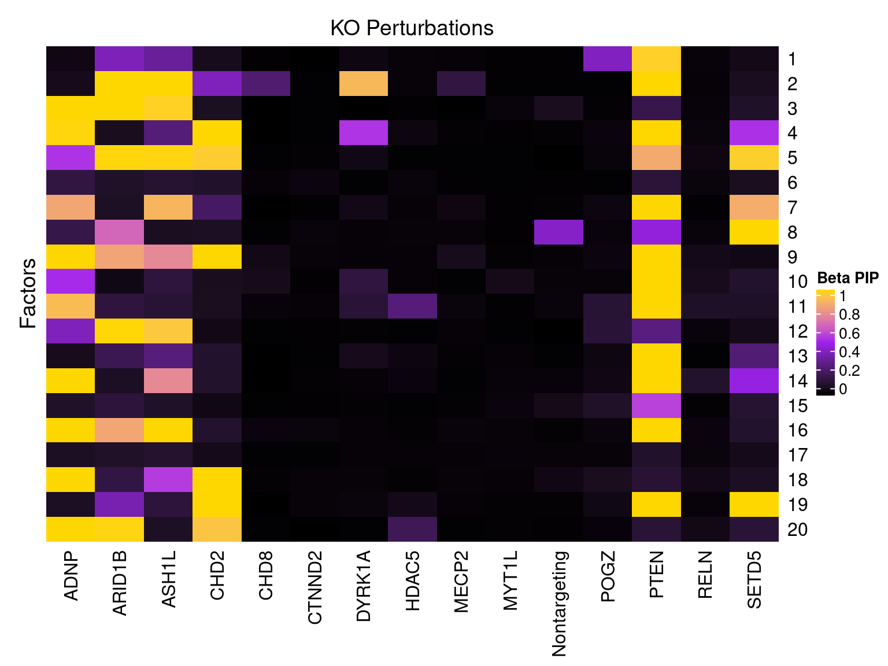
2.1.3 Factor ~ KO Posterior Association
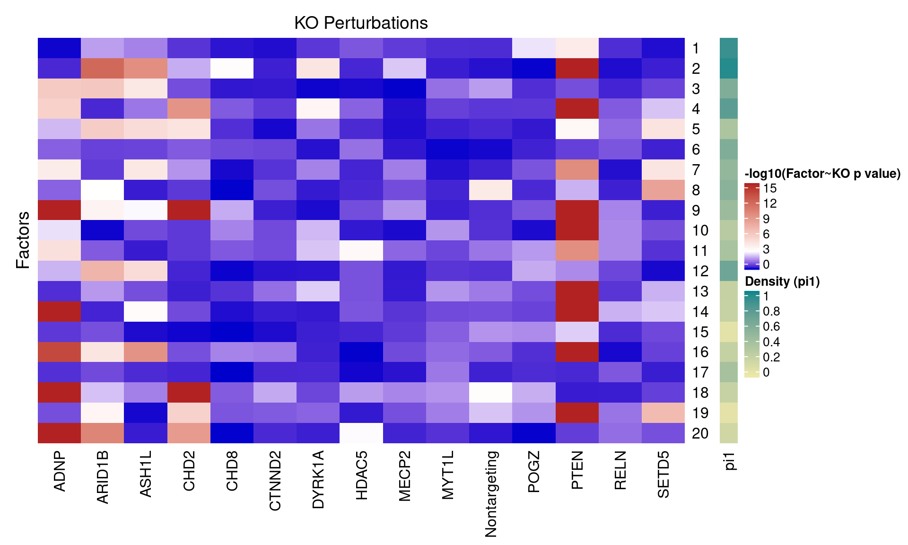
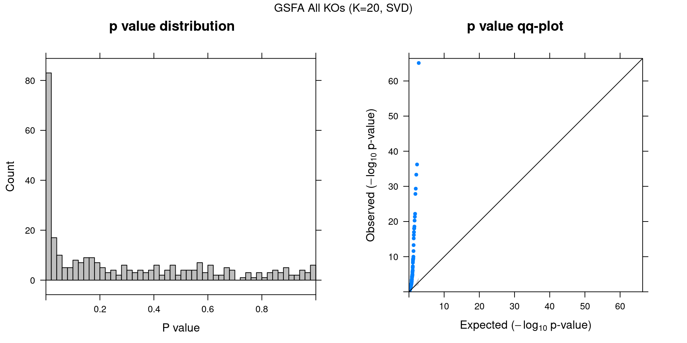
2.1.4 Beta PIP vs P-Value
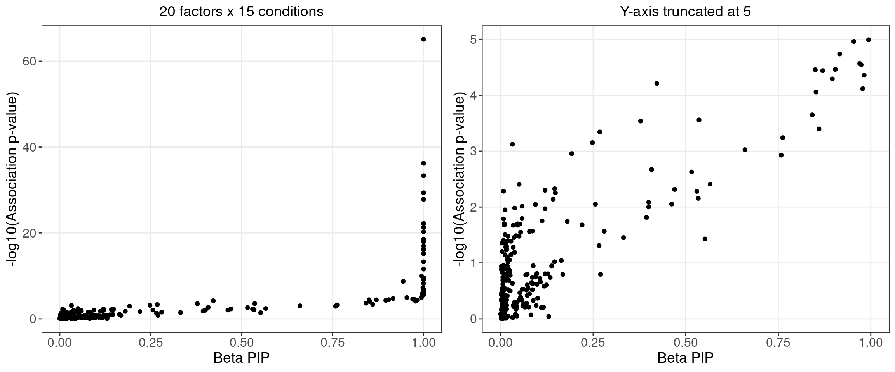
2.1.5 Correlation btw Factors
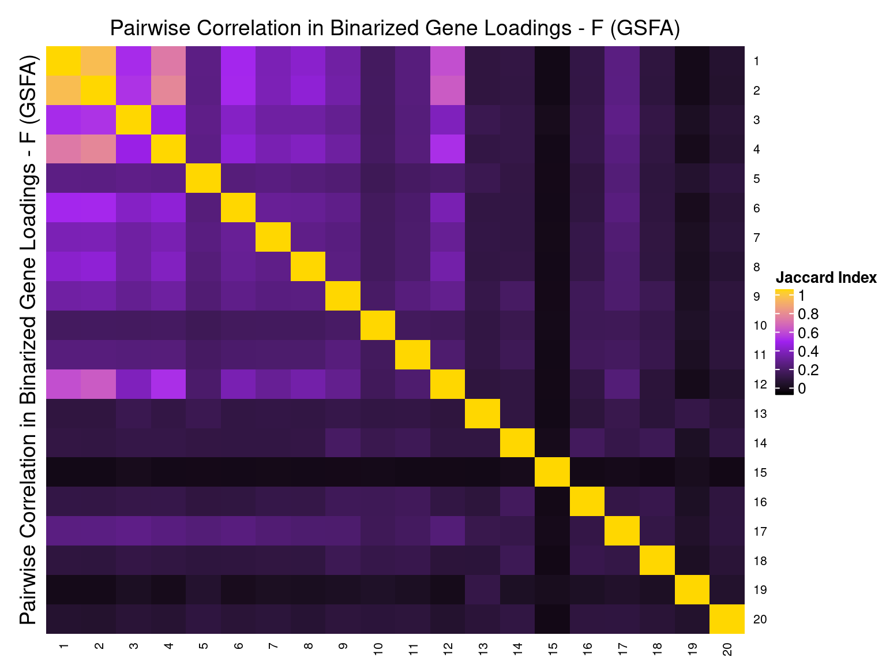
2.2 Alternative Initializations and Chain Convergence
Other than initializing GSFA using truncated SVD, we also tried 2 runs with random initialization.
2.2.1 Association results for 2 randomly initialized GSFA runs
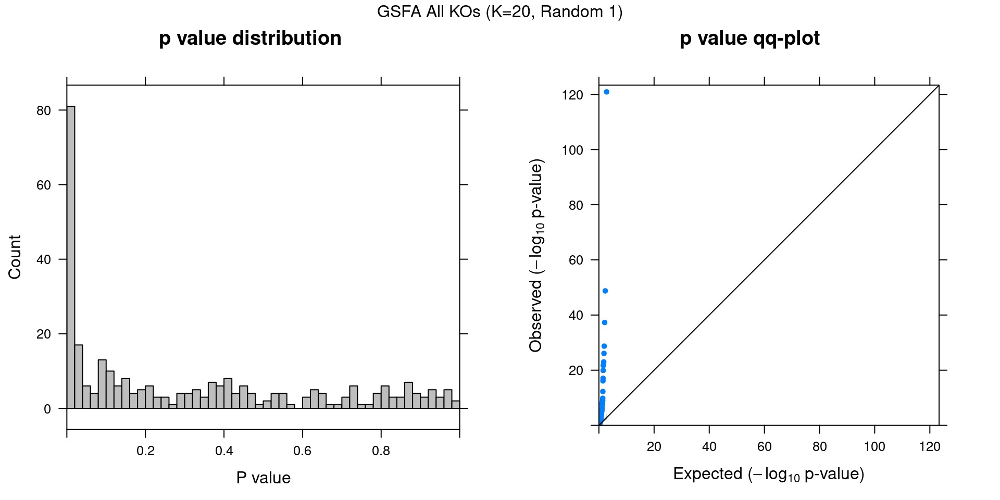
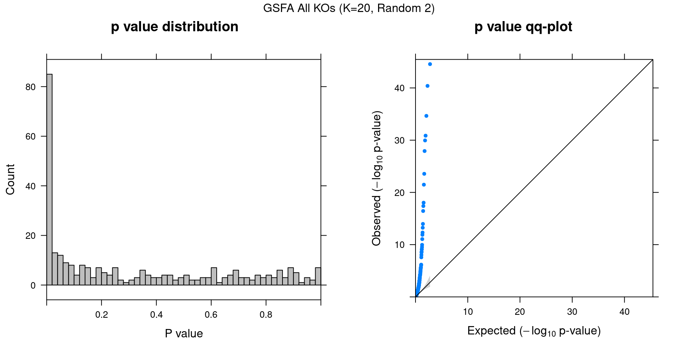
2.2.2 Chain mixing and convergence evaluation
To assess the convergence of Gibbs sampling, we adopt the potential scale reduction (\(\hat{R}\)) metric for scalar estimands as described in Section 11.4 of Bayesian Data Analysis, 3rd ed. If the potential scale reduction \(\hat{R}\) is close to 1, it means our inference has reached a good level of convergence.
For each of the 3 Gibbs sampling runs (1 SVD initialized, 2 randomly initialized), we split the last 1000 stable samples into 2 halves, resulting in 6 chains with 500 iterations of samples each to assess convergence on.
Since the order and sign of factors are interchangeable, we focus on evaluating the estimation of \(\beta_{m\cdot} \cdot W_{j\cdot}\) for each marker-gene pair. The table below shows the summary of \(\hat{R}\) of \(\beta_{m\cdot} \cdot W_{j\cdot}\) across genes for a given KO condition \(m\):
| Min. | 1st Qu. | Median | Mean | 3rd Qu. | Max. | |
|---|---|---|---|---|---|---|
| ADNP | 0.999 | 1.01 | 1.03 | 1.04 | 1.06 | 1.68 |
| ARID1B | 0.999 | 1.01 | 1.01 | 1.03 | 1.03 | 1.44 |
| ASH1L | 0.999 | 1.00 | 1.01 | 1.02 | 1.02 | 1.35 |
| CHD2 | 0.999 | 1.01 | 1.02 | 1.05 | 1.05 | 2.08 |
| CHD8 | 0.999 | 1.00 | 1.00 | 1.00 | 1.00 | 1.06 |
| CTNND2 | 0.999 | 1.00 | 1.00 | 1.00 | 1.00 | 1.01 |
| DYRK1A | 0.999 | 1.00 | 1.01 | 1.01 | 1.02 | 1.24 |
| HDAC5 | 0.999 | 1.00 | 1.00 | 1.01 | 1.02 | 1.08 |
| MECP2 | 0.999 | 1.00 | 1.00 | 1.00 | 1.00 | 1.01 |
| MYT1L | 0.999 | 1.00 | 1.00 | 1.00 | 1.00 | 1.02 |
| Nontargeting | 0.999 | 1.00 | 1.00 | 1.00 | 1.00 | 1.04 |
| POGZ | 0.999 | 1.00 | 1.00 | 1.00 | 1.01 | 1.04 |
| PTEN | 0.999 | 1.01 | 1.02 | 1.04 | 1.06 | 1.54 |
| RELN | 0.999 | 1.00 | 1.00 | 1.00 | 1.00 | 1.02 |
| SETD5 | 0.999 | 1.00 | 1.01 | 1.02 | 1.02 | 1.19 |
| offset | 0.999 | 1.01 | 1.02 | 1.11 | 1.12 | 2.38 |
2.2.3 Difference btw methods in factor estimation
For a pair of \(Z\) estimations from 2 inference methods, \(Z_1, Z_2\), we quantify the pairwise estimation difference as \(||Z_1Z_1^T - Z_2Z_2^T||_1/N^2\), where \(N\) is the number of rows (samples) in \(Z\).
Guided SVD vs Rand_01: 0.387
Guided SVD vs Rand_02: 0.493
Rand_01 vs Rand_02: 0.378
3 Unguided Result
In contrast to the guided version, here we provide no guidance (\(G = \vec{0}\)) to our sparse factor analysis model to serve as a comparison.
3.1 Factor ~ KO Beta PIP
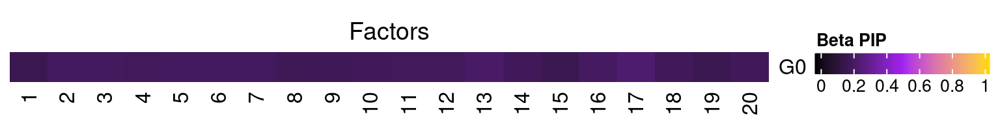
3.2 Factor ~ KO Posterior Association
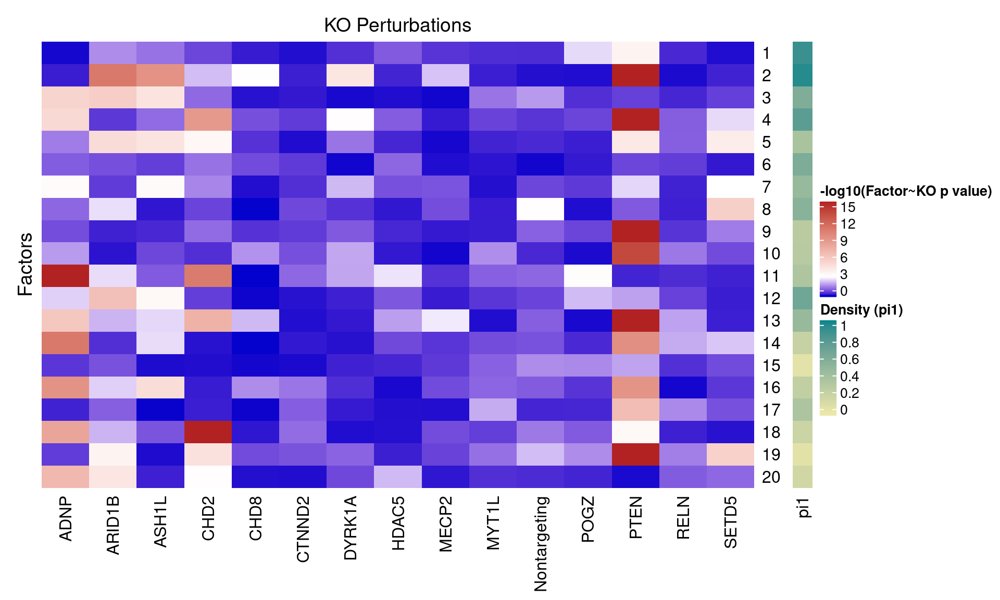
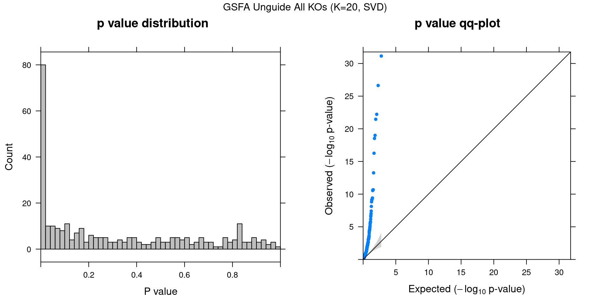
3.3 Unguided vs Guided
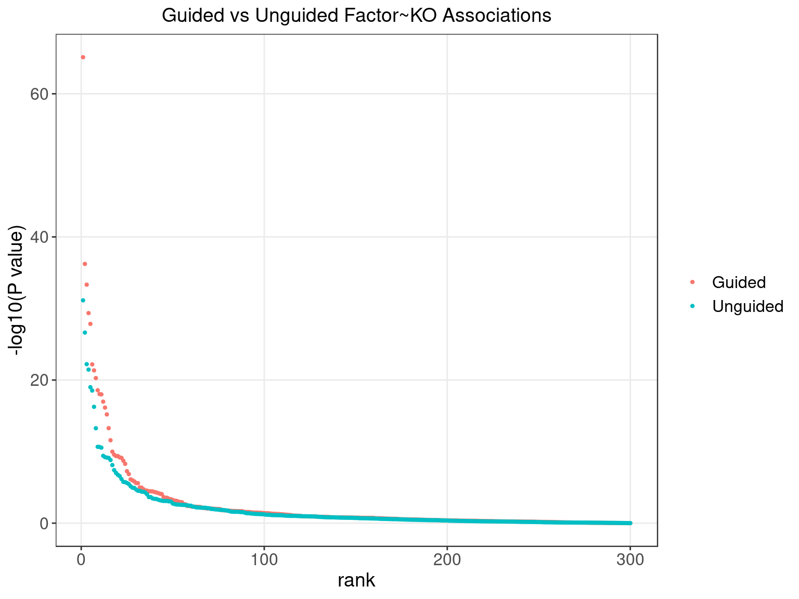
4 FLASH
4.1 Factor ~ KO Posterior Association

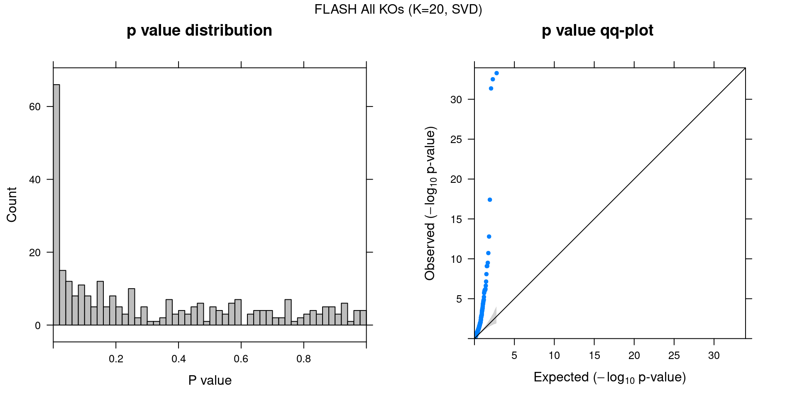
4.2 FLASH vs GSFA
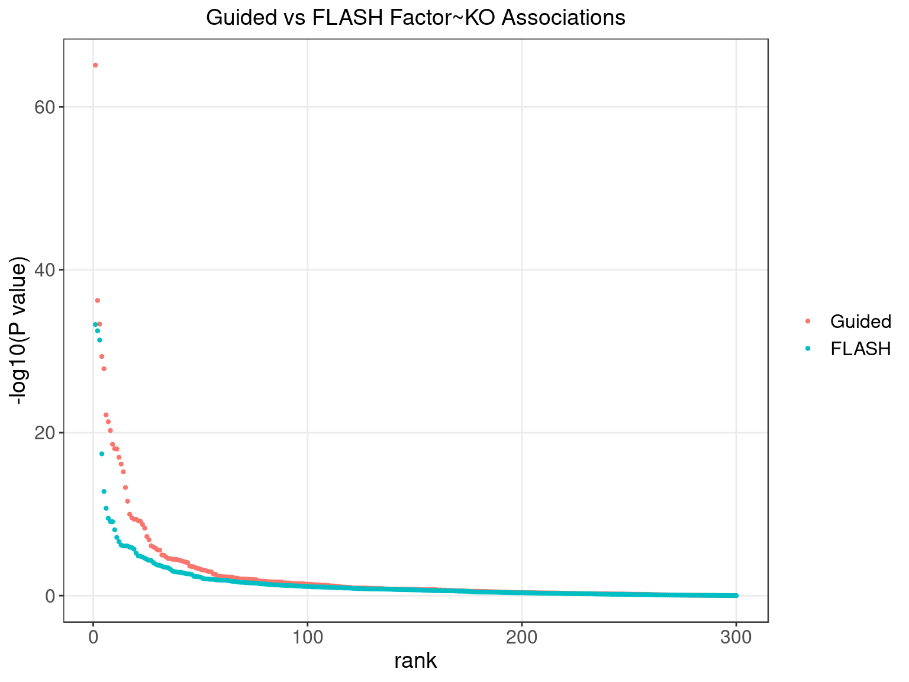
We matched the factors obtained from GFSA with those from FLASH, and conducted pairwise comparisons for both factors and gene loadings.
In the following heatmaps, factors are labeled by the KO condition(s) that they have an association p-value < 1e-4 with.
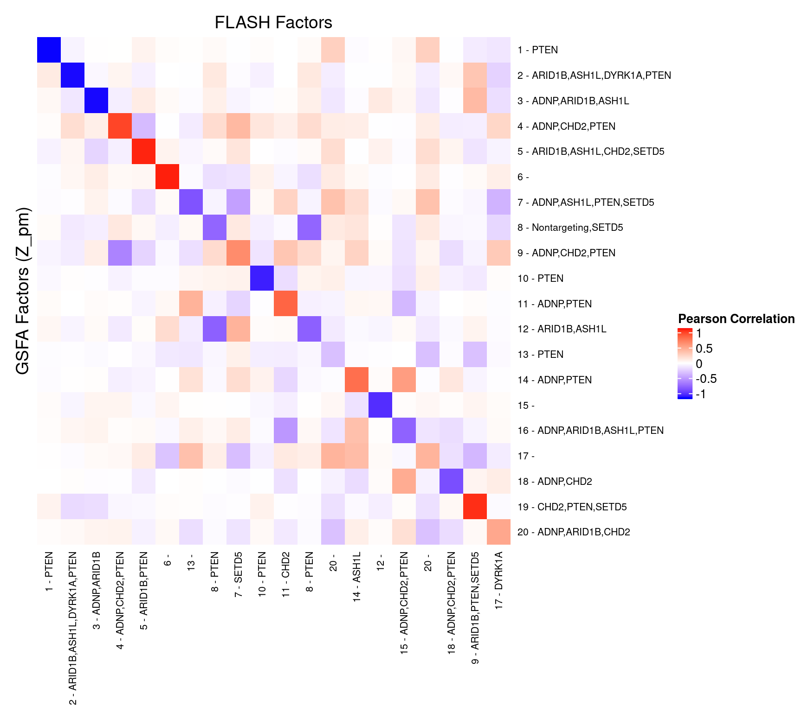
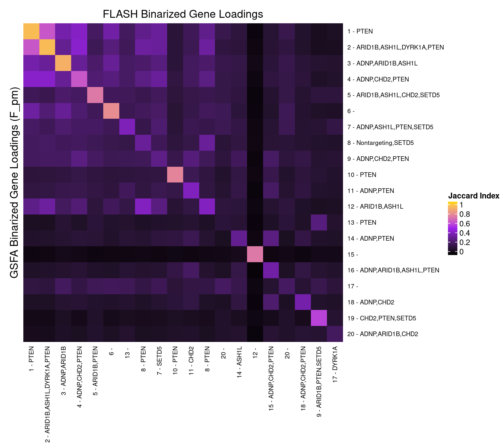
5 Gene Ontology Enrichment Analysis
Target: Genes w/ non-zero loadings in each factor;
Backgroud: all 6213 genes used in factor analysis;
Statistical test: hypergeometric test.
GO category: Biological Process.
5.1 PIP cutoff at 0.95
GO terms that passed over-representation test fold change \(\geq\) 2 and q value \(<\) 0.05:
| ID | Description | GeneRatio | BgRatio | FoldChange | pvalue | qvalue | GS_size |
|---|---|---|---|---|---|---|---|
| GO:0006613 | cotranslational protein targeting to membrane | 87/1998 | 95/5545 | 2.54 | 3.23e-30 | 1.05e-26 | 95 |
| GO:0006614 | SRP-dependent cotranslational protein targeting to membrane | 84/1998 | 91/5545 | 2.56 | 7.64e-30 | 1.24e-26 | 91 |
| GO:0070972 | protein localization to endoplasmic reticulum | 104/1998 | 123/5545 | 2.35 | 4.23e-29 | 4.57e-26 | 123 |
| GO:0045047 | protein targeting to ER | 90/1998 | 102/5545 | 2.45 | 2.82e-28 | 2.28e-25 | 102 |
| GO:0072599 | establishment of protein localization to endoplasmic reticulum | 91/1998 | 106/5545 | 2.38 | 1.32e-26 | 8.58e-24 | 106 |
| GO:0000184 | nuclear-transcribed mRNA catabolic process, nonsense-mediated decay | 90/1998 | 109/5545 | 2.29 | 8.49e-24 | 4.58e-21 | 109 |
| GO:0006413 | translational initiation | 119/1998 | 160/5545 | 2.06 | 1.35e-23 | 6.22e-21 | 160 |
| GO:0006120 | mitochondrial electron transport, NADH to ubiquinone | 36/1998 | 47/5545 | 2.13 | 1.46e-08 | 6.86e-07 | 47 |
| GO:0031960 | response to corticosteroid | 30/1998 | 40/5545 | 2.08 | 5.40e-07 | 2.33e-05 | 40 |
| GO:0099132 | ATP hydrolysis coupled cation transmembrane transport | 25/1998 | 33/5545 | 2.10 | 3.62e-06 | 1.52e-04 | 33 |
| GO:0051384 | response to glucocorticoid | 27/1998 | 37/5545 | 2.03 | 4.96e-06 | 1.96e-04 | 37 |
| GO:0070671 | response to interleukin-12 | 22/1998 | 30/5545 | 2.04 | 3.41e-05 | 1.05e-03 | 30 |
| GO:0071349 | cellular response to interleukin-12 | 22/1998 | 30/5545 | 2.04 | 3.41e-05 | 1.05e-03 | 30 |
| GO:1904874 | positive regulation of telomerase RNA localization to Cajal body | 12/1998 | 13/5545 | 2.56 | 4.08e-05 | 1.23e-03 | 13 |
| GO:0035722 | interleukin-12-mediated signaling pathway | 21/1998 | 29/5545 | 2.01 | 7.05e-05 | 2.06e-03 | 29 |
| GO:0007339 | binding of sperm to zona pellucida | 11/1998 | 12/5545 | 2.54 | 1.05e-04 | 2.94e-03 | 12 |
| GO:0035036 | sperm-egg recognition | 11/1998 | 12/5545 | 2.54 | 1.05e-04 | 2.94e-03 | 12 |
| GO:0010499 | proteasomal ubiquitin-independent protein catabolic process | 14/1998 | 18/5545 | 2.16 | 3.64e-04 | 8.25e-03 | 18 |
| GO:0051187 | cofactor catabolic process | 14/1998 | 18/5545 | 2.16 | 3.64e-04 | 8.25e-03 | 18 |
| GO:0015985 | energy coupled proton transport, down electrochemical gradient | 15/1998 | 20/5545 | 2.08 | 4.37e-04 | 9.63e-03 | 20 |
| GO:0015986 | ATP synthesis coupled proton transport | 15/1998 | 20/5545 | 2.08 | 4.37e-04 | 9.63e-03 | 20 |
| GO:0051385 | response to mineralocorticoid | 9/1998 | 10/5545 | 2.50 | 6.85e-04 | 1.35e-02 | 10 |
| GO:0015844 | monoamine transport | 13/1998 | 17/5545 | 2.12 | 7.98e-04 | 1.49e-02 | 17 |
| GO:0017001 | antibiotic catabolic process | 13/1998 | 17/5545 | 2.12 | 7.98e-04 | 1.49e-02 | 17 |
| GO:0042776 | mitochondrial ATP synthesis coupled proton transport | 13/1998 | 17/5545 | 2.12 | 7.98e-04 | 1.49e-02 | 17 |
| GO:0070199 | establishment of protein localization to chromosome | 14/1998 | 19/5545 | 2.04 | 9.25e-04 | 1.68e-02 | 19 |
| GO:0043457 | regulation of cellular respiration | 11/1998 | 14/5545 | 2.18 | 1.44e-03 | 2.32e-02 | 14 |
| GO:0009988 | cell-cell recognition | 12/1998 | 16/5545 | 2.08 | 1.72e-03 | 2.60e-02 | 16 |
| GO:0051937 | catecholamine transport | 12/1998 | 16/5545 | 2.08 | 1.72e-03 | 2.60e-02 | 16 |
| GO:0090670 | RNA localization to Cajal body | 12/1998 | 16/5545 | 2.08 | 1.72e-03 | 2.60e-02 | 16 |
| GO:0090671 | telomerase RNA localization to Cajal body | 12/1998 | 16/5545 | 2.08 | 1.72e-03 | 2.60e-02 | 16 |
| GO:0090672 | telomerase RNA localization | 12/1998 | 16/5545 | 2.08 | 1.72e-03 | 2.60e-02 | 16 |
| GO:0090685 | RNA localization to nucleus | 12/1998 | 16/5545 | 2.08 | 1.72e-03 | 2.60e-02 | 16 |
| GO:1904872 | regulation of telomerase RNA localization to Cajal body | 12/1998 | 16/5545 | 2.08 | 1.72e-03 | 2.60e-02 | 16 |
| GO:1990173 | protein localization to nucleoplasm | 9/1998 | 11/5545 | 2.27 | 2.55e-03 | 3.48e-02 | 11 |
| GO:0045947 | negative regulation of translational initiation | 10/1998 | 13/5545 | 2.13 | 3.20e-03 | 4.26e-02 | 13 |
| GO:0032986 | protein-DNA complex disassembly | 11/1998 | 15/5545 | 2.04 | 3.65e-03 | 4.76e-02 | 15 |
| ID | Description | GeneRatio | BgRatio | FoldChange | pvalue | qvalue | GS_size |
|---|---|---|---|---|---|---|---|
| GO:0017001 | antibiotic catabolic process | 16/2382 | 17/5545 | 2.19 | 1.33e-05 | 0.0092 | 17 |
| GO:1904816 | positive regulation of protein localization to chromosome, telomeric region | 11/2382 | 11/5545 | 2.33 | 9.07e-05 | 0.0315 | 11 |
| ID | Description | GeneRatio | BgRatio | FoldChange | pvalue | qvalue | GS_size |
|---|---|---|---|---|---|---|---|
| GO:0006119 | oxidative phosphorylation | 65/971 | 105/5545 | 3.54 | 1.37e-24 | 4.57e-21 | 105 |
| GO:0022900 | electron transport chain | 69/971 | 120/5545 | 3.28 | 2.30e-23 | 3.82e-20 | 120 |
| GO:0042773 | ATP synthesis coupled electron transport | 51/971 | 76/5545 | 3.83 | 7.46e-22 | 8.28e-19 | 76 |
| GO:0042775 | mitochondrial ATP synthesis coupled electron transport | 50/971 | 75/5545 | 3.81 | 2.98e-21 | 2.48e-18 | 75 |
| GO:0007005 | mitochondrion organization | 127/971 | 332/5545 | 2.18 | 1.35e-20 | 8.02e-18 | 332 |
| GO:0022904 | respiratory electron transport chain | 52/971 | 82/5545 | 3.62 | 1.44e-20 | 8.02e-18 | 82 |
| GO:0009141 | nucleoside triphosphate metabolic process | 88/971 | 192/5545 | 2.62 | 1.88e-20 | 8.94e-18 | 192 |
| GO:0009144 | purine nucleoside triphosphate metabolic process | 84/971 | 184/5545 | 2.61 | 2.01e-19 | 8.39e-17 | 184 |
| GO:0046034 | ATP metabolic process | 78/971 | 165/5545 | 2.70 | 3.17e-19 | 1.07e-16 | 165 |
| GO:0033108 | mitochondrial respiratory chain complex assembly | 52/971 | 86/5545 | 3.45 | 3.22e-19 | 1.07e-16 | 86 |
| GO:0009199 | ribonucleoside triphosphate metabolic process | 82/971 | 182/5545 | 2.57 | 1.53e-18 | 4.64e-16 | 182 |
| GO:0009205 | purine ribonucleoside triphosphate metabolic process | 81/971 | 180/5545 | 2.57 | 2.76e-18 | 7.65e-16 | 180 |
| GO:0006614 | SRP-dependent cotranslational protein targeting to membrane | 52/971 | 91/5545 | 3.26 | 1.06e-17 | 2.71e-15 | 91 |
| GO:0006091 | generation of precursor metabolites and energy | 98/971 | 249/5545 | 2.25 | 5.54e-17 | 1.32e-14 | 249 |
| GO:0009123 | nucleoside monophosphate metabolic process | 84/971 | 199/5545 | 2.41 | 7.88e-17 | 1.75e-14 | 199 |
| GO:0006613 | cotranslational protein targeting to membrane | 52/971 | 95/5545 | 3.13 | 1.33e-16 | 2.76e-14 | 95 |
| GO:0006120 | mitochondrial electron transport, NADH to ubiquinone | 34/971 | 47/5545 | 4.13 | 1.56e-16 | 3.05e-14 | 47 |
| GO:0045047 | protein targeting to ER | 54/971 | 102/5545 | 3.02 | 2.41e-16 | 4.46e-14 | 102 |
| GO:0010257 | NADH dehydrogenase complex assembly | 39/971 | 60/5545 | 3.71 | 2.94e-16 | 4.73e-14 | 60 |
| GO:0032981 | mitochondrial respiratory chain complex I assembly | 39/971 | 60/5545 | 3.71 | 2.94e-16 | 4.73e-14 | 60 |
| GO:0009126 | purine nucleoside monophosphate metabolic process | 79/971 | 185/5545 | 2.44 | 3.13e-16 | 4.73e-14 | 185 |
| GO:0009167 | purine ribonucleoside monophosphate metabolic process | 79/971 | 185/5545 | 2.44 | 3.13e-16 | 4.73e-14 | 185 |
| GO:0006413 | translational initiation | 71/971 | 160/5545 | 2.53 | 9.46e-16 | 1.37e-13 | 160 |
| GO:0017144 | drug metabolic process | 113/971 | 318/5545 | 2.03 | 1.38e-15 | 1.92e-13 | 318 |
| GO:0009161 | ribonucleoside monophosphate metabolic process | 79/971 | 190/5545 | 2.37 | 1.95e-15 | 2.60e-13 | 190 |
| GO:0072599 | establishment of protein localization to endoplasmic reticulum | 54/971 | 106/5545 | 2.91 | 2.15e-15 | 2.76e-13 | 106 |
| GO:0006163 | purine nucleotide metabolic process | 97/971 | 267/5545 | 2.07 | 3.56e-14 | 4.23e-12 | 267 |
| GO:0045333 | cellular respiration | 58/971 | 126/5545 | 2.63 | 6.32e-14 | 6.79e-12 | 126 |
| GO:0072521 | purine-containing compound metabolic process | 99/971 | 278/5545 | 2.03 | 8.19e-14 | 8.52e-12 | 278 |
| GO:0009150 | purine ribonucleotide metabolic process | 93/971 | 257/5545 | 2.07 | 1.66e-13 | 1.67e-11 | 257 |
| GO:0000184 | nuclear-transcribed mRNA catabolic process, nonsense-mediated decay | 52/971 | 109/5545 | 2.72 | 2.22e-13 | 2.17e-11 | 109 |
| GO:0009259 | ribonucleotide metabolic process | 94/971 | 264/5545 | 2.03 | 3.73e-13 | 3.50e-11 | 264 |
| GO:0090150 | establishment of protein localization to membrane | 79/971 | 206/5545 | 2.19 | 3.78e-13 | 3.50e-11 | 206 |
| GO:1902600 | proton transmembrane transport | 41/971 | 76/5545 | 3.08 | 4.60e-13 | 4.14e-11 | 76 |
| GO:0019693 | ribose phosphate metabolic process | 96/971 | 274/5545 | 2.00 | 6.29e-13 | 5.52e-11 | 274 |
| GO:0070972 | protein localization to endoplasmic reticulum | 55/971 | 123/5545 | 2.55 | 1.27e-12 | 1.06e-10 | 123 |
| GO:0070126 | mitochondrial translational termination | 42/971 | 82/5545 | 2.92 | 2.40e-12 | 1.86e-10 | 82 |
| GO:0070125 | mitochondrial translational elongation | 42/971 | 84/5545 | 2.86 | 6.77e-12 | 5.12e-10 | 84 |
| GO:0006414 | translational elongation | 50/971 | 111/5545 | 2.57 | 9.84e-12 | 7.28e-10 | 111 |
| GO:0006415 | translational termination | 43/971 | 90/5545 | 2.73 | 2.63e-11 | 1.86e-09 | 90 |
| GO:0006612 | protein targeting to membrane | 56/971 | 137/5545 | 2.33 | 6.44e-11 | 4.47e-09 | 137 |
| GO:0015980 | energy derivation by oxidation of organic compounds | 61/971 | 156/5545 | 2.23 | 8.06e-11 | 5.48e-09 | 156 |
| GO:0000956 | nuclear-transcribed mRNA catabolic process | 62/971 | 167/5545 | 2.12 | 6.91e-10 | 4.51e-08 | 167 |
| GO:0032543 | mitochondrial translation | 46/971 | 109/5545 | 2.41 | 9.82e-10 | 6.29e-08 | 109 |
| GO:0140053 | mitochondrial gene expression | 47/971 | 120/5545 | 2.24 | 1.19e-08 | 7.21e-07 | 120 |
| GO:0015985 | energy coupled proton transport, down electrochemical gradient | 15/971 | 20/5545 | 4.28 | 2.62e-08 | 1.53e-06 | 20 |
| GO:0015986 | ATP synthesis coupled proton transport | 15/971 | 20/5545 | 4.28 | 2.62e-08 | 1.53e-06 | 20 |
| GO:0002181 | cytoplasmic translation | 33/971 | 74/5545 | 2.55 | 4.74e-08 | 2.68e-06 | 74 |
| GO:0007006 | mitochondrial membrane organization | 36/971 | 89/5545 | 2.31 | 2.43e-07 | 1.31e-05 | 89 |
| GO:0042776 | mitochondrial ATP synthesis coupled proton transport | 12/971 | 17/5545 | 4.03 | 2.04e-06 | 1.03e-04 | 17 |
| GO:0098754 | detoxification | 19/971 | 38/5545 | 2.86 | 4.35e-06 | 2.10e-04 | 38 |
| GO:1990542 | mitochondrial transmembrane transport | 25/971 | 59/5545 | 2.42 | 6.34e-06 | 2.97e-04 | 59 |
| GO:1990748 | cellular detoxification | 17/971 | 35/5545 | 2.77 | 2.28e-05 | 9.87e-04 | 35 |
| GO:0098869 | cellular oxidant detoxification | 16/971 | 32/5545 | 2.86 | 2.51e-05 | 1.06e-03 | 32 |
| GO:0007007 | inner mitochondrial membrane organization | 18/971 | 39/5545 | 2.64 | 3.16e-05 | 1.28e-03 | 39 |
| GO:0000028 | ribosomal small subunit assembly | 10/971 | 15/5545 | 3.81 | 3.33e-05 | 1.32e-03 | 15 |
| GO:0031960 | response to corticosteroid | 18/971 | 40/5545 | 2.57 | 4.81e-05 | 1.88e-03 | 40 |
| GO:0017004 | cytochrome complex assembly | 14/971 | 27/5545 | 2.96 | 4.85e-05 | 1.88e-03 | 27 |
| GO:0090151 | establishment of protein localization to mitochondrial membrane | 9/971 | 14/5545 | 3.67 | 1.29e-04 | 4.66e-03 | 14 |
| GO:0042407 | cristae formation | 14/971 | 29/5545 | 2.76 | 1.32e-04 | 4.74e-03 | 29 |
| GO:0051384 | response to glucocorticoid | 16/971 | 37/5545 | 2.47 | 2.24e-04 | 7.70e-03 | 37 |
| GO:0006370 | 7-methylguanosine mRNA capping | 12/971 | 25/5545 | 2.74 | 4.31e-04 | 1.42e-02 | 25 |
| GO:0006749 | glutathione metabolic process | 10/971 | 19/5545 | 3.01 | 5.19e-04 | 1.63e-02 | 19 |
| GO:0008535 | respiratory chain complex IV assembly | 10/971 | 19/5545 | 3.01 | 5.19e-04 | 1.63e-02 | 19 |
| GO:0002183 | cytoplasmic translational initiation | 12/971 | 26/5545 | 2.64 | 6.74e-04 | 2.04e-02 | 26 |
| GO:0009452 | 7-methylguanosine RNA capping | 12/971 | 26/5545 | 2.64 | 6.74e-04 | 2.04e-02 | 26 |
| GO:0036260 | RNA capping | 12/971 | 26/5545 | 2.64 | 6.74e-04 | 2.04e-02 | 26 |
| GO:0051204 | protein insertion into mitochondrial membrane | 9/971 | 17/5545 | 3.02 | 9.45e-04 | 2.81e-02 | 17 |
| GO:0048857 | neural nucleus development | 14/971 | 34/5545 | 2.35 | 9.99e-04 | 2.94e-02 | 34 |
| GO:0021762 | substantia nigra development | 13/971 | 31/5545 | 2.39 | 1.23e-03 | 3.56e-02 | 31 |
| GO:0043280 | positive regulation of cysteine-type endopeptidase activity involved in apoptotic process | 17/971 | 46/5545 | 2.11 | 1.28e-03 | 3.67e-02 | 46 |
| GO:1901028 | regulation of mitochondrial outer membrane permeabilization involved in apoptotic signaling pathway | 10/971 | 21/5545 | 2.72 | 1.41e-03 | 3.95e-02 | 21 |
| GO:0042737 | drug catabolic process | 12/971 | 28/5545 | 2.45 | 1.51e-03 | 4.18e-02 | 28 |
| GO:1901030 | positive regulation of mitochondrial outer membrane permeabilization involved in apoptotic signaling pathway | 9/971 | 18/5545 | 2.86 | 1.60e-03 | 4.40e-02 | 18 |
| GO:0001732 | formation of cytoplasmic translation initiation complex | 7/971 | 12/5545 | 3.33 | 1.73e-03 | 4.68e-02 | 12 |
| GO:0001844 | protein insertion into mitochondrial membrane involved in apoptotic signaling pathway | 8/971 | 15/5545 | 3.05 | 1.73e-03 | 4.68e-02 | 15 |
| ID | Description | GeneRatio | BgRatio | FoldChange | pvalue | qvalue | GS_size |
|---|---|---|---|---|---|---|---|
| GO:0006613 | cotranslational protein targeting to membrane | 54/1563 | 95/5545 | 2.02 | 3.44e-09 | 9.62e-07 | 95 |
| GO:0033108 | mitochondrial respiratory chain complex assembly | 49/1563 | 86/5545 | 2.02 | 1.66e-08 | 3.04e-06 | 86 |
| GO:0006120 | mitochondrial electron transport, NADH to ubiquinone | 31/1563 | 47/5545 | 2.34 | 7.26e-08 | 1.07e-05 | 47 |
| GO:0042775 | mitochondrial ATP synthesis coupled electron transport | 43/1563 | 75/5545 | 2.03 | 9.87e-08 | 1.37e-05 | 75 |
| GO:0042773 | ATP synthesis coupled electron transport | 43/1563 | 76/5545 | 2.01 | 1.66e-07 | 2.14e-05 | 76 |
| GO:0010257 | NADH dehydrogenase complex assembly | 36/1563 | 60/5545 | 2.13 | 2.30e-07 | 2.58e-05 | 60 |
| GO:0032981 | mitochondrial respiratory chain complex I assembly | 36/1563 | 60/5545 | 2.13 | 2.30e-07 | 2.58e-05 | 60 |
| GO:0042255 | ribosome assembly | 31/1563 | 49/5545 | 2.24 | 2.99e-07 | 2.97e-05 | 49 |
| GO:0030490 | maturation of SSU-rRNA | 19/1563 | 32/5545 | 2.11 | 2.12e-04 | 1.23e-02 | 32 |
| GO:1901673 | regulation of mitotic spindle assembly | 10/1563 | 13/5545 | 2.73 | 3.68e-04 | 1.97e-02 | 13 |
| GO:0043039 | tRNA aminoacylation | 19/1563 | 33/5545 | 2.04 | 3.69e-04 | 1.97e-02 | 33 |
| GO:0000027 | ribosomal large subunit assembly | 15/1563 | 24/5545 | 2.22 | 4.61e-04 | 2.36e-02 | 24 |
| GO:0000462 | maturation of SSU-rRNA from tricistronic rRNA transcript (SSU-rRNA, 5.8S rRNA, LSU-rRNA) | 15/1563 | 24/5545 | 2.22 | 4.61e-04 | 2.36e-02 | 24 |
| GO:0010499 | proteasomal ubiquitin-independent protein catabolic process | 12/1563 | 18/5545 | 2.37 | 7.60e-04 | 3.47e-02 | 18 |
| ID | Description | GeneRatio | BgRatio | FoldChange | pvalue | qvalue | GS_size |
|---|---|---|---|---|---|---|---|
| GO:0006413 | translational initiation | 72/1020 | 160/5545 | 2.45 | 3.61e-15 | 2.98e-12 | 160 |
| GO:0006614 | SRP-dependent cotranslational protein targeting to membrane | 48/1020 | 91/5545 | 2.87 | 1.01e-13 | 5.55e-11 | 91 |
| GO:0042254 | ribosome biogenesis | 83/1020 | 208/5545 | 2.17 | 1.19e-13 | 5.63e-11 | 208 |
| GO:0006613 | cotranslational protein targeting to membrane | 49/1020 | 95/5545 | 2.80 | 1.73e-13 | 7.13e-11 | 95 |
| GO:0045047 | protein targeting to ER | 50/1020 | 102/5545 | 2.66 | 1.24e-12 | 4.09e-10 | 102 |
| GO:0000184 | nuclear-transcribed mRNA catabolic process, nonsense-mediated decay | 51/1020 | 109/5545 | 2.54 | 7.05e-12 | 2.12e-09 | 109 |
| GO:0072599 | establishment of protein localization to endoplasmic reticulum | 50/1020 | 106/5545 | 2.56 | 7.80e-12 | 2.15e-09 | 106 |
| GO:0070972 | protein localization to endoplasmic reticulum | 54/1020 | 123/5545 | 2.39 | 3.73e-11 | 9.47e-09 | 123 |
| GO:1902653 | secondary alcohol biosynthetic process | 27/1020 | 43/5545 | 3.41 | 1.33e-10 | 3.14e-08 | 43 |
| GO:0006695 | cholesterol biosynthetic process | 26/1020 | 42/5545 | 3.37 | 4.65e-10 | 1.02e-07 | 42 |
| GO:0016126 | sterol biosynthetic process | 27/1020 | 45/5545 | 3.26 | 5.89e-10 | 1.21e-07 | 45 |
| GO:0000956 | nuclear-transcribed mRNA catabolic process | 64/1020 | 167/5545 | 2.08 | 6.56e-10 | 1.27e-07 | 167 |
| GO:0042273 | ribosomal large subunit biogenesis | 32/1020 | 60/5545 | 2.90 | 9.81e-10 | 1.80e-07 | 60 |
| GO:1902652 | secondary alcohol metabolic process | 29/1020 | 53/5545 | 2.97 | 2.75e-09 | 4.54e-07 | 53 |
| GO:0008203 | cholesterol metabolic process | 28/1020 | 52/5545 | 2.93 | 8.39e-09 | 1.32e-06 | 52 |
| GO:0006612 | protein targeting to membrane | 53/1020 | 137/5545 | 2.10 | 1.38e-08 | 2.00e-06 | 137 |
| GO:0046890 | regulation of lipid biosynthetic process | 31/1020 | 62/5545 | 2.72 | 1.39e-08 | 2.00e-06 | 62 |
| GO:0006364 | rRNA processing | 57/1020 | 153/5545 | 2.03 | 1.94e-08 | 2.66e-06 | 153 |
| GO:0046165 | alcohol biosynthetic process | 30/1020 | 60/5545 | 2.72 | 2.39e-08 | 3.15e-06 | 60 |
| GO:0016125 | sterol metabolic process | 29/1020 | 57/5545 | 2.77 | 2.48e-08 | 3.15e-06 | 57 |
| GO:0045540 | regulation of cholesterol biosynthetic process | 18/1020 | 27/5545 | 3.62 | 4.43e-08 | 4.88e-06 | 27 |
| GO:0106118 | regulation of sterol biosynthetic process | 18/1020 | 27/5545 | 3.62 | 4.43e-08 | 4.88e-06 | 27 |
| GO:1902930 | regulation of alcohol biosynthetic process | 18/1020 | 28/5545 | 3.49 | 1.03e-07 | 8.58e-06 | 28 |
| GO:0050810 | regulation of steroid biosynthetic process | 19/1020 | 31/5545 | 3.33 | 1.37e-07 | 9.84e-06 | 31 |
| GO:0090181 | regulation of cholesterol metabolic process | 19/1020 | 31/5545 | 3.33 | 1.37e-07 | 9.84e-06 | 31 |
| GO:0006066 | alcohol metabolic process | 38/1020 | 91/5545 | 2.27 | 1.58e-07 | 1.09e-05 | 91 |
| GO:1901617 | organic hydroxy compound biosynthetic process | 35/1020 | 82/5545 | 2.32 | 2.57e-07 | 1.70e-05 | 82 |
| GO:0009152 | purine ribonucleotide biosynthetic process | 45/1020 | 122/5545 | 2.01 | 8.60e-07 | 5.36e-05 | 122 |
| GO:0042255 | ribosome assembly | 24/1020 | 49/5545 | 2.66 | 9.95e-07 | 5.97e-05 | 49 |
| GO:0019218 | regulation of steroid metabolic process | 21/1020 | 40/5545 | 2.85 | 1.11e-06 | 6.42e-05 | 40 |
| GO:0002181 | cytoplasmic translation | 31/1020 | 74/5545 | 2.28 | 2.03e-06 | 1.12e-04 | 74 |
| GO:0006694 | steroid biosynthetic process | 29/1020 | 68/5545 | 2.32 | 2.81e-06 | 1.47e-04 | 68 |
| GO:0006418 | tRNA aminoacylation for protein translation | 17/1020 | 31/5545 | 2.98 | 5.46e-06 | 2.61e-04 | 31 |
| GO:0000027 | ribosomal large subunit assembly | 14/1020 | 24/5545 | 3.17 | 1.45e-05 | 6.07e-04 | 24 |
| GO:0043039 | tRNA aminoacylation | 17/1020 | 33/5545 | 2.80 | 1.66e-05 | 6.75e-04 | 33 |
| GO:0051289 | protein homotetramerization | 17/1020 | 33/5545 | 2.80 | 1.66e-05 | 6.75e-04 | 33 |
| GO:0043038 | amino acid activation | 17/1020 | 34/5545 | 2.72 | 2.75e-05 | 1.08e-03 | 34 |
| GO:0008299 | isoprenoid biosynthetic process | 9/1020 | 12/5545 | 4.08 | 3.01e-05 | 1.17e-03 | 12 |
| GO:1904874 | positive regulation of telomerase RNA localization to Cajal body | 9/1020 | 13/5545 | 3.76 | 8.19e-05 | 2.97e-03 | 13 |
| GO:0070670 | response to interleukin-4 | 8/1020 | 11/5545 | 3.95 | 1.24e-04 | 4.10e-03 | 11 |
| GO:0071353 | cellular response to interleukin-4 | 8/1020 | 11/5545 | 3.95 | 1.24e-04 | 4.10e-03 | 11 |
| GO:0061077 | chaperone-mediated protein folding | 18/1020 | 41/5545 | 2.39 | 1.40e-04 | 4.53e-03 | 41 |
| GO:0042451 | purine nucleoside biosynthetic process | 9/1020 | 14/5545 | 3.49 | 1.92e-04 | 5.81e-03 | 14 |
| GO:0046129 | purine ribonucleoside biosynthetic process | 9/1020 | 14/5545 | 3.49 | 1.92e-04 | 5.81e-03 | 14 |
| GO:0051262 | protein tetramerization | 22/1020 | 56/5545 | 2.14 | 1.94e-04 | 5.81e-03 | 56 |
| GO:0071384 | cellular response to corticosteroid stimulus | 11/1020 | 20/5545 | 2.99 | 2.55e-04 | 7.46e-03 | 20 |
| GO:0097327 | response to antineoplastic agent | 16/1020 | 36/5545 | 2.42 | 2.75e-04 | 7.98e-03 | 36 |
| GO:0031960 | response to corticosteroid | 17/1020 | 40/5545 | 2.31 | 3.43e-04 | 9.69e-03 | 40 |
| GO:0000054 | ribosomal subunit export from nucleus | 9/1020 | 15/5545 | 3.26 | 4.02e-04 | 1.10e-02 | 15 |
| GO:0033750 | ribosome localization | 9/1020 | 15/5545 | 3.26 | 4.02e-04 | 1.10e-02 | 15 |
| GO:0051384 | response to glucocorticoid | 16/1020 | 37/5545 | 2.35 | 4.04e-04 | 1.10e-02 | 37 |
| GO:0006637 | acyl-CoA metabolic process | 18/1020 | 44/5545 | 2.22 | 4.08e-04 | 1.10e-02 | 44 |
| GO:0035383 | thioester metabolic process | 18/1020 | 44/5545 | 2.22 | 4.08e-04 | 1.10e-02 | 44 |
| GO:0071385 | cellular response to glucocorticoid stimulus | 10/1020 | 18/5545 | 3.02 | 4.43e-04 | 1.18e-02 | 18 |
| GO:1990542 | mitochondrial transmembrane transport | 22/1020 | 59/5545 | 2.03 | 4.62e-04 | 1.21e-02 | 59 |
| GO:0000055 | ribosomal large subunit export from nucleus | 7/1020 | 10/5545 | 3.81 | 4.99e-04 | 1.29e-02 | 10 |
| GO:0001708 | cell fate specification | 8/1020 | 13/5545 | 3.35 | 6.83e-04 | 1.75e-02 | 13 |
| GO:0006720 | isoprenoid metabolic process | 12/1020 | 25/5545 | 2.61 | 6.88e-04 | 1.75e-02 | 25 |
| GO:0009069 | serine family amino acid metabolic process | 9/1020 | 16/5545 | 3.06 | 7.69e-04 | 1.87e-02 | 16 |
| GO:0090670 | RNA localization to Cajal body | 9/1020 | 16/5545 | 3.06 | 7.69e-04 | 1.87e-02 | 16 |
| GO:0090671 | telomerase RNA localization to Cajal body | 9/1020 | 16/5545 | 3.06 | 7.69e-04 | 1.87e-02 | 16 |
| GO:0090672 | telomerase RNA localization | 9/1020 | 16/5545 | 3.06 | 7.69e-04 | 1.87e-02 | 16 |
| GO:0090685 | RNA localization to nucleus | 9/1020 | 16/5545 | 3.06 | 7.69e-04 | 1.87e-02 | 16 |
| GO:1904872 | regulation of telomerase RNA localization to Cajal body | 9/1020 | 16/5545 | 3.06 | 7.69e-04 | 1.87e-02 | 16 |
| GO:0035337 | fatty-acyl-CoA metabolic process | 10/1020 | 19/5545 | 2.86 | 7.81e-04 | 1.88e-02 | 19 |
| GO:1901570 | fatty acid derivative biosynthetic process | 14/1020 | 32/5545 | 2.38 | 8.03e-04 | 1.92e-02 | 32 |
| GO:0007338 | single fertilization | 13/1020 | 29/5545 | 2.44 | 9.32e-04 | 2.18e-02 | 29 |
| GO:0044743 | protein transmembrane import into intracellular organelle | 12/1020 | 26/5545 | 2.51 | 1.07e-03 | 2.46e-02 | 26 |
| GO:0051131 | chaperone-mediated protein complex assembly | 7/1020 | 11/5545 | 3.46 | 1.15e-03 | 2.63e-02 | 11 |
| GO:1904816 | positive regulation of protein localization to chromosome, telomeric region | 7/1020 | 11/5545 | 3.46 | 1.15e-03 | 2.63e-02 | 11 |
| GO:0006458 | ‘de novo’ protein folding | 11/1020 | 23/5545 | 2.60 | 1.20e-03 | 2.64e-02 | 23 |
| GO:0006959 | humoral immune response | 11/1020 | 23/5545 | 2.60 | 1.20e-03 | 2.64e-02 | 23 |
| GO:0048146 | positive regulation of fibroblast proliferation | 8/1020 | 14/5545 | 3.11 | 1.34e-03 | 2.91e-02 | 14 |
| GO:0006084 | acetyl-CoA metabolic process | 9/1020 | 17/5545 | 2.88 | 1.37e-03 | 2.92e-02 | 17 |
| GO:0046949 | fatty-acyl-CoA biosynthetic process | 9/1020 | 17/5545 | 2.88 | 1.37e-03 | 2.92e-02 | 17 |
| GO:0071428 | rRNA-containing ribonucleoprotein complex export from nucleus | 9/1020 | 17/5545 | 2.88 | 1.37e-03 | 2.92e-02 | 17 |
| GO:1901568 | fatty acid derivative metabolic process | 16/1020 | 41/5545 | 2.12 | 1.55e-03 | 3.26e-02 | 41 |
| GO:0032206 | positive regulation of telomere maintenance | 14/1020 | 34/5545 | 2.24 | 1.65e-03 | 3.38e-02 | 34 |
| GO:0009163 | nucleoside biosynthetic process | 9/1020 | 18/5545 | 2.72 | 2.29e-03 | 4.65e-02 | 18 |
| GO:0042455 | ribonucleoside biosynthetic process | 9/1020 | 18/5545 | 2.72 | 2.29e-03 | 4.65e-02 | 18 |
| GO:1901031 | regulation of response to reactive oxygen species | 7/1020 | 12/5545 | 3.17 | 2.33e-03 | 4.70e-02 | 12 |
| ID | Description | GeneRatio | BgRatio | FoldChange | pvalue | qvalue | GS_size |
|---|---|---|---|---|---|---|---|
| GO:0045047 | protein targeting to ER | 48/997 | 102/5545 | 2.62 | 9.78e-12 | 2.34e-08 | 102 |
| GO:0072599 | establishment of protein localization to endoplasmic reticulum | 49/997 | 106/5545 | 2.57 | 1.34e-11 | 2.34e-08 | 106 |
| GO:0006613 | cotranslational protein targeting to membrane | 45/997 | 95/5545 | 2.63 | 3.34e-11 | 3.87e-08 | 95 |
| GO:0070972 | protein localization to endoplasmic reticulum | 53/997 | 123/5545 | 2.40 | 5.49e-11 | 4.78e-08 | 123 |
| GO:0006614 | SRP-dependent cotranslational protein targeting to membrane | 43/997 | 91/5545 | 2.63 | 1.02e-10 | 7.10e-08 | 91 |
| GO:0000184 | nuclear-transcribed mRNA catabolic process, nonsense-mediated decay | 44/997 | 109/5545 | 2.25 | 2.73e-08 | 1.19e-05 | 109 |
| ID | Description | GeneRatio | BgRatio | FoldChange | pvalue | qvalue | GS_size |
|---|---|---|---|---|---|---|---|
| GO:0010959 | regulation of metal ion transport | 55/1081 | 108/5545 | 2.61 | 1.45e-13 | 4.27e-10 | 108 |
| GO:0051924 | regulation of calcium ion transport | 36/1081 | 62/5545 | 2.98 | 1.77e-11 | 2.61e-08 | 62 |
| GO:0043269 | regulation of ion transport | 68/1081 | 164/5545 | 2.13 | 4.39e-11 | 3.82e-08 | 164 |
| GO:1904062 | regulation of cation transmembrane transport | 48/1081 | 99/5545 | 2.49 | 5.20e-11 | 3.82e-08 | 99 |
| GO:1903169 | regulation of calcium ion transmembrane transport | 29/1081 | 46/5545 | 3.23 | 1.03e-10 | 6.08e-08 | 46 |
| GO:0006816 | calcium ion transport | 50/1081 | 109/5545 | 2.35 | 2.55e-10 | 1.25e-07 | 109 |
| GO:0097553 | calcium ion transmembrane import into cytosol | 24/1081 | 36/5545 | 3.42 | 8.10e-10 | 3.40e-07 | 36 |
| GO:0034765 | regulation of ion transmembrane transport | 53/1081 | 123/5545 | 2.21 | 1.25e-09 | 4.58e-07 | 123 |
| GO:0070838 | divalent metal ion transport | 52/1081 | 122/5545 | 2.19 | 2.86e-09 | 8.39e-07 | 122 |
| GO:0072511 | divalent inorganic cation transport | 52/1081 | 122/5545 | 2.19 | 2.86e-09 | 8.39e-07 | 122 |
| GO:0060402 | calcium ion transport into cytosol | 24/1081 | 38/5545 | 3.24 | 4.17e-09 | 1.02e-06 | 38 |
| GO:0034762 | regulation of transmembrane transport | 60/1081 | 152/5545 | 2.02 | 6.19e-09 | 1.40e-06 | 152 |
| GO:0007204 | positive regulation of cytosolic calcium ion concentration | 31/1081 | 58/5545 | 2.74 | 7.35e-09 | 1.54e-06 | 58 |
| GO:0051480 | regulation of cytosolic calcium ion concentration | 33/1081 | 64/5545 | 2.64 | 7.95e-09 | 1.56e-06 | 64 |
| GO:0070588 | calcium ion transmembrane transport | 40/1081 | 86/5545 | 2.39 | 9.94e-09 | 1.62e-06 | 86 |
| GO:0022898 | regulation of transmembrane transporter activity | 38/1081 | 82/5545 | 2.38 | 2.64e-08 | 3.70e-06 | 82 |
| GO:0006874 | cellular calcium ion homeostasis | 44/1081 | 102/5545 | 2.21 | 3.12e-08 | 4.03e-06 | 102 |
| GO:0010522 | regulation of calcium ion transport into cytosol | 19/1081 | 28/5545 | 3.48 | 3.20e-08 | 4.03e-06 | 28 |
| GO:0051209 | release of sequestered calcium ion into cytosol | 21/1081 | 33/5545 | 3.26 | 3.29e-08 | 4.03e-06 | 33 |
| GO:0001505 | regulation of neurotransmitter levels | 50/1081 | 123/5545 | 2.09 | 3.82e-08 | 4.49e-06 | 123 |
| GO:0051279 | regulation of release of sequestered calcium ion into cytosol | 18/1081 | 26/5545 | 3.55 | 4.62e-08 | 5.23e-06 | 26 |
| GO:0055074 | calcium ion homeostasis | 44/1081 | 104/5545 | 2.17 | 6.28e-08 | 6.84e-06 | 104 |
| GO:0032409 | regulation of transporter activity | 39/1081 | 88/5545 | 2.27 | 7.90e-08 | 8.08e-06 | 88 |
| GO:0003015 | heart process | 32/1081 | 66/5545 | 2.49 | 8.97e-08 | 8.70e-06 | 66 |
| GO:1901019 | regulation of calcium ion transmembrane transporter activity | 20/1081 | 32/5545 | 3.21 | 1.10e-07 | 9.77e-06 | 32 |
| GO:0072507 | divalent inorganic cation homeostasis | 46/1081 | 113/5545 | 2.09 | 1.28e-07 | 1.11e-05 | 113 |
| GO:0051283 | negative regulation of sequestering of calcium ion | 21/1081 | 35/5545 | 3.08 | 1.44e-07 | 1.21e-05 | 35 |
| GO:0072503 | cellular divalent inorganic cation homeostasis | 45/1081 | 110/5545 | 2.10 | 1.48e-07 | 1.21e-05 | 110 |
| GO:0006614 | SRP-dependent cotranslational protein targeting to membrane | 39/1081 | 91/5545 | 2.20 | 2.35e-07 | 1.83e-05 | 91 |
| GO:0060401 | cytosolic calcium ion transport | 25/1081 | 47/5545 | 2.73 | 2.42e-07 | 1.83e-05 | 47 |
| GO:0000184 | nuclear-transcribed mRNA catabolic process, nonsense-mediated decay | 44/1081 | 109/5545 | 2.07 | 3.21e-07 | 2.30e-05 | 109 |
| GO:0051208 | sequestering of calcium ion | 22/1081 | 39/5545 | 2.89 | 3.30e-07 | 2.31e-05 | 39 |
| GO:0032412 | regulation of ion transmembrane transporter activity | 35/1081 | 79/5545 | 2.27 | 3.71e-07 | 2.40e-05 | 79 |
| GO:0060047 | heart contraction | 30/1081 | 63/5545 | 2.44 | 3.75e-07 | 2.40e-05 | 63 |
| GO:1904064 | positive regulation of cation transmembrane transport | 24/1081 | 45/5545 | 2.74 | 3.96e-07 | 2.47e-05 | 45 |
| GO:0051282 | regulation of sequestering of calcium ion | 21/1081 | 37/5545 | 2.91 | 5.34e-07 | 3.20e-05 | 37 |
| GO:0032612 | interleukin-1 production | 11/1081 | 13/5545 | 4.34 | 7.84e-07 | 4.35e-05 | 13 |
| GO:0006613 | cotranslational protein targeting to membrane | 39/1081 | 95/5545 | 2.11 | 9.04e-07 | 4.83e-05 | 95 |
| GO:0050663 | cytokine secretion | 20/1081 | 37/5545 | 2.77 | 2.83e-06 | 1.21e-04 | 37 |
| GO:0051384 | response to glucocorticoid | 20/1081 | 37/5545 | 2.77 | 2.83e-06 | 1.21e-04 | 37 |
| GO:0034767 | positive regulation of ion transmembrane transport | 24/1081 | 49/5545 | 2.51 | 2.96e-06 | 1.24e-04 | 49 |
| GO:0032652 | regulation of interleukin-1 production | 10/1081 | 12/5545 | 4.27 | 3.44e-06 | 1.40e-04 | 12 |
| GO:2001257 | regulation of cation channel activity | 24/1081 | 50/5545 | 2.46 | 4.65e-06 | 1.75e-04 | 50 |
| GO:0051928 | positive regulation of calcium ion transport | 16/1081 | 27/5545 | 3.04 | 5.79e-06 | 1.98e-04 | 27 |
| GO:1904427 | positive regulation of calcium ion transmembrane transport | 14/1081 | 22/5545 | 3.26 | 7.03e-06 | 2.37e-04 | 22 |
| GO:0050707 | regulation of cytokine secretion | 18/1081 | 33/5545 | 2.80 | 7.58e-06 | 2.45e-04 | 33 |
| GO:0008016 | regulation of heart contraction | 25/1081 | 55/5545 | 2.33 | 1.00e-05 | 3.13e-04 | 55 |
| GO:1903779 | regulation of cardiac conduction | 13/1081 | 20/5545 | 3.33 | 1.08e-05 | 3.28e-04 | 20 |
| GO:0035637 | multicellular organismal signaling | 23/1081 | 49/5545 | 2.41 | 1.17e-05 | 3.49e-04 | 49 |
| GO:0031960 | response to corticosteroid | 20/1081 | 40/5545 | 2.56 | 1.35e-05 | 3.84e-04 | 40 |
| GO:0032611 | interleukin-1 beta production | 9/1081 | 11/5545 | 4.20 | 1.49e-05 | 4.08e-04 | 11 |
| GO:0032651 | regulation of interleukin-1 beta production | 9/1081 | 11/5545 | 4.20 | 1.49e-05 | 4.08e-04 | 11 |
| GO:0043270 | positive regulation of ion transport | 29/1081 | 70/5545 | 2.13 | 1.84e-05 | 4.92e-04 | 70 |
| GO:1903522 | regulation of blood circulation | 26/1081 | 60/5545 | 2.22 | 1.92e-05 | 5.08e-04 | 60 |
| GO:0043266 | regulation of potassium ion transport | 17/1081 | 32/5545 | 2.73 | 2.17e-05 | 5.64e-04 | 32 |
| GO:0007269 | neurotransmitter secretion | 31/1081 | 79/5545 | 2.01 | 3.46e-05 | 8.20e-04 | 79 |
| GO:0099643 | signal release from synapse | 31/1081 | 79/5545 | 2.01 | 3.46e-05 | 8.20e-04 | 79 |
| GO:0014808 | release of sequestered calcium ion into cytosol by sarcoplasmic reticulum | 10/1081 | 14/5545 | 3.66 | 3.55e-05 | 8.27e-04 | 14 |
| GO:1903514 | release of sequestered calcium ion into cytosol by endoplasmic reticulum | 10/1081 | 14/5545 | 3.66 | 3.55e-05 | 8.27e-04 | 14 |
| GO:0030278 | regulation of ossification | 19/1081 | 40/5545 | 2.44 | 5.52e-05 | 1.19e-03 | 40 |
| GO:0015844 | monoamine transport | 11/1081 | 17/5545 | 3.32 | 5.72e-05 | 1.21e-03 | 17 |
| GO:0032411 | positive regulation of transporter activity | 18/1081 | 37/5545 | 2.50 | 5.82e-05 | 1.21e-03 | 37 |
| GO:0035725 | sodium ion transmembrane transport | 18/1081 | 37/5545 | 2.50 | 5.82e-05 | 1.21e-03 | 37 |
| GO:0061337 | cardiac conduction | 18/1081 | 37/5545 | 2.50 | 5.82e-05 | 1.21e-03 | 37 |
| GO:0002027 | regulation of heart rate | 15/1081 | 28/5545 | 2.75 | 5.87e-05 | 1.21e-03 | 28 |
| GO:0045667 | regulation of osteoblast differentiation | 15/1081 | 28/5545 | 2.75 | 5.87e-05 | 1.21e-03 | 28 |
| GO:0034764 | positive regulation of transmembrane transport | 27/1081 | 67/5545 | 2.07 | 6.37e-05 | 1.30e-03 | 67 |
| GO:0001508 | action potential | 19/1081 | 41/5545 | 2.38 | 8.43e-05 | 1.67e-03 | 41 |
| GO:0086001 | cardiac muscle cell action potential | 14/1081 | 26/5545 | 2.76 | 9.67e-05 | 1.86e-03 | 26 |
| GO:0001649 | osteoblast differentiation | 26/1081 | 65/5545 | 2.05 | 1.01e-04 | 1.91e-03 | 65 |
| GO:0006941 | striated muscle contraction | 20/1081 | 45/5545 | 2.28 | 1.14e-04 | 2.13e-03 | 45 |
| GO:0007266 | Rho protein signal transduction | 27/1081 | 69/5545 | 2.01 | 1.16e-04 | 2.16e-03 | 69 |
| GO:0045669 | positive regulation of osteoblast differentiation | 11/1081 | 18/5545 | 3.13 | 1.21e-04 | 2.24e-03 | 18 |
| GO:0010524 | positive regulation of calcium ion transport into cytosol | 9/1081 | 13/5545 | 3.55 | 1.32e-04 | 2.34e-03 | 13 |
| GO:0010880 | regulation of release of sequestered calcium ion into cytosol by sarcoplasmic reticulum | 9/1081 | 13/5545 | 3.55 | 1.32e-04 | 2.34e-03 | 13 |
| GO:0051281 | positive regulation of release of sequestered calcium ion into cytosol | 9/1081 | 13/5545 | 3.55 | 1.32e-04 | 2.34e-03 | 13 |
| GO:0060314 | regulation of ryanodine-sensitive calcium-release channel activity | 9/1081 | 13/5545 | 3.55 | 1.32e-04 | 2.34e-03 | 13 |
| GO:0006814 | sodium ion transport | 24/1081 | 59/5545 | 2.09 | 1.35e-04 | 2.37e-03 | 59 |
| GO:0014074 | response to purine-containing compound | 18/1081 | 39/5545 | 2.37 | 1.38e-04 | 2.38e-03 | 39 |
| GO:0045778 | positive regulation of ossification | 12/1081 | 21/5545 | 2.93 | 1.45e-04 | 2.47e-03 | 21 |
| GO:0032414 | positive regulation of ion transmembrane transporter activity | 16/1081 | 33/5545 | 2.49 | 1.58e-04 | 2.63e-03 | 33 |
| GO:0051899 | membrane depolarization | 14/1081 | 27/5545 | 2.66 | 1.65e-04 | 2.73e-03 | 27 |
| GO:0050433 | regulation of catecholamine secretion | 8/1081 | 11/5545 | 3.73 | 1.91e-04 | 3.14e-03 | 11 |
| GO:0051937 | catecholamine transport | 10/1081 | 16/5545 | 3.21 | 1.93e-04 | 3.14e-03 | 16 |
| GO:0070296 | sarcoplasmic reticulum calcium ion transport | 10/1081 | 16/5545 | 3.21 | 1.93e-04 | 3.14e-03 | 16 |
| GO:0022409 | positive regulation of cell-cell adhesion | 20/1081 | 47/5545 | 2.18 | 2.36e-04 | 3.73e-03 | 47 |
| GO:0045744 | negative regulation of G protein-coupled receptor signaling pathway | 11/1081 | 19/5545 | 2.97 | 2.38e-04 | 3.73e-03 | 19 |
| GO:0070252 | actin-mediated cell contraction | 15/1081 | 31/5545 | 2.48 | 2.61e-04 | 4.06e-03 | 31 |
| GO:2000649 | regulation of sodium ion transmembrane transporter activity | 12/1081 | 22/5545 | 2.80 | 2.63e-04 | 4.07e-03 | 22 |
| GO:0034341 | response to interferon-gamma | 17/1081 | 38/5545 | 2.29 | 3.36e-04 | 5.09e-03 | 38 |
| GO:0021510 | spinal cord development | 16/1081 | 35/5545 | 2.34 | 3.71e-04 | 5.45e-03 | 35 |
| GO:0050848 | regulation of calcium-mediated signaling | 16/1081 | 35/5545 | 2.34 | 3.71e-04 | 5.45e-03 | 35 |
| GO:0060048 | cardiac muscle contraction | 16/1081 | 35/5545 | 2.34 | 3.71e-04 | 5.45e-03 | 35 |
| GO:2001259 | positive regulation of cation channel activity | 10/1081 | 17/5545 | 3.02 | 3.88e-04 | 5.60e-03 | 17 |
| GO:0006919 | activation of cysteine-type endopeptidase activity involved in apoptotic process | 15/1081 | 32/5545 | 2.40 | 4.04e-04 | 5.79e-03 | 32 |
| GO:0086065 | cell communication involved in cardiac conduction | 12/1081 | 23/5545 | 2.68 | 4.54e-04 | 6.47e-03 | 23 |
| GO:2001056 | positive regulation of cysteine-type endopeptidase activity | 20/1081 | 49/5545 | 2.09 | 4.59e-04 | 6.51e-03 | 49 |
| GO:0043280 | positive regulation of cysteine-type endopeptidase activity involved in apoptotic process | 19/1081 | 46/5545 | 2.12 | 5.30e-04 | 7.35e-03 | 46 |
| GO:0010644 | cell communication by electrical coupling | 9/1081 | 15/5545 | 3.08 | 6.32e-04 | 8.56e-03 | 15 |
| GO:0022617 | extracellular matrix disassembly | 9/1081 | 15/5545 | 3.08 | 6.32e-04 | 8.56e-03 | 15 |
| GO:1902305 | regulation of sodium ion transmembrane transport | 13/1081 | 27/5545 | 2.47 | 7.15e-04 | 9.46e-03 | 27 |
| GO:0071385 | cellular response to glucocorticoid stimulus | 10/1081 | 18/5545 | 2.85 | 7.21e-04 | 9.50e-03 | 18 |
| GO:0002028 | regulation of sodium ion transport | 16/1081 | 37/5545 | 2.22 | 7.94e-04 | 1.03e-02 | 37 |
| GO:0060041 | retina development in camera-type eye | 18/1081 | 44/5545 | 2.10 | 8.47e-04 | 1.10e-02 | 44 |
| GO:0046683 | response to organophosphorus | 15/1081 | 34/5545 | 2.26 | 8.95e-04 | 1.13e-02 | 34 |
| GO:0071346 | cellular response to interferon-gamma | 15/1081 | 34/5545 | 2.26 | 8.95e-04 | 1.13e-02 | 34 |
| GO:0006813 | potassium ion transport | 19/1081 | 48/5545 | 2.03 | 9.91e-04 | 1.22e-02 | 48 |
| GO:0001895 | retina homeostasis | 8/1081 | 13/5545 | 3.16 | 1.03e-03 | 1.25e-02 | 13 |
| GO:0050432 | catecholamine secretion | 8/1081 | 13/5545 | 3.16 | 1.03e-03 | 1.25e-02 | 13 |
| GO:1901385 | regulation of voltage-gated calcium channel activity | 8/1081 | 13/5545 | 3.16 | 1.03e-03 | 1.25e-02 | 13 |
| GO:1901379 | regulation of potassium ion transmembrane transport | 13/1081 | 28/5545 | 2.38 | 1.10e-03 | 1.31e-02 | 28 |
| GO:0071466 | cellular response to xenobiotic stimulus | 16/1081 | 38/5545 | 2.16 | 1.13e-03 | 1.33e-02 | 38 |
| GO:0055117 | regulation of cardiac muscle contraction | 12/1081 | 25/5545 | 2.46 | 1.19e-03 | 1.39e-02 | 25 |
| GO:0043949 | regulation of cAMP-mediated signaling | 9/1081 | 16/5545 | 2.89 | 1.20e-03 | 1.39e-02 | 16 |
| GO:0098901 | regulation of cardiac muscle cell action potential | 9/1081 | 16/5545 | 2.89 | 1.20e-03 | 1.39e-02 | 16 |
| GO:0008277 | regulation of G protein-coupled receptor signaling pathway | 18/1081 | 46/5545 | 2.01 | 1.56e-03 | 1.76e-02 | 46 |
| GO:0010634 | positive regulation of epithelial cell migration | 18/1081 | 46/5545 | 2.01 | 1.56e-03 | 1.76e-02 | 46 |
| GO:0030168 | platelet activation | 13/1081 | 29/5545 | 2.30 | 1.64e-03 | 1.83e-02 | 29 |
| GO:0001975 | response to amphetamine | 7/1081 | 11/5545 | 3.26 | 1.66e-03 | 1.83e-02 | 11 |
| GO:0015872 | dopamine transport | 7/1081 | 11/5545 | 3.26 | 1.66e-03 | 1.83e-02 | 11 |
| GO:0034121 | regulation of toll-like receptor signaling pathway | 7/1081 | 11/5545 | 3.26 | 1.66e-03 | 1.83e-02 | 11 |
| GO:0072073 | kidney epithelium development | 12/1081 | 26/5545 | 2.37 | 1.82e-03 | 1.98e-02 | 26 |
| GO:0030048 | actin filament-based movement | 17/1081 | 43/5545 | 2.03 | 1.84e-03 | 1.99e-02 | 43 |
| GO:0050715 | positive regulation of cytokine secretion | 11/1081 | 23/5545 | 2.45 | 1.97e-03 | 2.07e-02 | 23 |
| GO:0022011 | myelination in peripheral nervous system | 8/1081 | 14/5545 | 2.93 | 1.99e-03 | 2.07e-02 | 14 |
| GO:0032292 | peripheral nervous system axon ensheathment | 8/1081 | 14/5545 | 2.93 | 1.99e-03 | 2.07e-02 | 14 |
| GO:0046579 | positive regulation of Ras protein signal transduction | 8/1081 | 14/5545 | 2.93 | 1.99e-03 | 2.07e-02 | 14 |
| GO:1901021 | positive regulation of calcium ion transmembrane transporter activity | 8/1081 | 14/5545 | 2.93 | 1.99e-03 | 2.07e-02 | 14 |
| GO:0071384 | cellular response to corticosteroid stimulus | 10/1081 | 20/5545 | 2.56 | 2.08e-03 | 2.13e-02 | 20 |
| GO:0098900 | regulation of action potential | 10/1081 | 20/5545 | 2.56 | 2.08e-03 | 2.13e-02 | 20 |
| GO:0048771 | tissue remodeling | 14/1081 | 33/5545 | 2.18 | 2.09e-03 | 2.13e-02 | 33 |
| GO:0071867 | response to monoamine | 9/1081 | 17/5545 | 2.72 | 2.11e-03 | 2.13e-02 | 17 |
| GO:0071868 | cellular response to monoamine stimulus | 9/1081 | 17/5545 | 2.72 | 2.11e-03 | 2.13e-02 | 17 |
| GO:0071869 | response to catecholamine | 9/1081 | 17/5545 | 2.72 | 2.11e-03 | 2.13e-02 | 17 |
| GO:0071870 | cellular response to catecholamine stimulus | 9/1081 | 17/5545 | 2.72 | 2.11e-03 | 2.13e-02 | 17 |
| GO:0006942 | regulation of striated muscle contraction | 12/1081 | 27/5545 | 2.28 | 2.70e-03 | 2.59e-02 | 27 |
| GO:0032680 | regulation of tumor necrosis factor production | 12/1081 | 27/5545 | 2.28 | 2.70e-03 | 2.59e-02 | 27 |
| GO:1903555 | regulation of tumor necrosis factor superfamily cytokine production | 12/1081 | 27/5545 | 2.28 | 2.70e-03 | 2.59e-02 | 27 |
| GO:0035023 | regulation of Rho protein signal transduction | 16/1081 | 41/5545 | 2.00 | 2.90e-03 | 2.74e-02 | 41 |
| GO:0050870 | positive regulation of T cell activation | 16/1081 | 41/5545 | 2.00 | 2.90e-03 | 2.74e-02 | 41 |
| GO:1903039 | positive regulation of leukocyte cell-cell adhesion | 16/1081 | 41/5545 | 2.00 | 2.90e-03 | 2.74e-02 | 41 |
| GO:0051897 | positive regulation of protein kinase B signaling | 14/1081 | 34/5545 | 2.11 | 2.93e-03 | 2.75e-02 | 34 |
| GO:0060079 | excitatory postsynaptic potential | 14/1081 | 34/5545 | 2.11 | 2.93e-03 | 2.75e-02 | 34 |
| GO:0042743 | hydrogen peroxide metabolic process | 10/1081 | 21/5545 | 2.44 | 3.29e-03 | 2.94e-02 | 21 |
| GO:0001974 | blood vessel remodeling | 7/1081 | 12/5545 | 2.99 | 3.31e-03 | 2.94e-02 | 12 |
| GO:0010665 | regulation of cardiac muscle cell apoptotic process | 7/1081 | 12/5545 | 2.99 | 3.31e-03 | 2.94e-02 | 12 |
| GO:0010882 | regulation of cardiac muscle contraction by calcium ion signaling | 7/1081 | 12/5545 | 2.99 | 3.31e-03 | 2.94e-02 | 12 |
| GO:0014075 | response to amine | 7/1081 | 12/5545 | 2.99 | 3.31e-03 | 2.94e-02 | 12 |
| GO:0042744 | hydrogen peroxide catabolic process | 7/1081 | 12/5545 | 2.99 | 3.31e-03 | 2.94e-02 | 12 |
| GO:0060761 | negative regulation of response to cytokine stimulus | 7/1081 | 12/5545 | 2.99 | 3.31e-03 | 2.94e-02 | 12 |
| GO:2000179 | positive regulation of neural precursor cell proliferation | 7/1081 | 12/5545 | 2.99 | 3.31e-03 | 2.94e-02 | 12 |
| GO:0006937 | regulation of muscle contraction | 15/1081 | 38/5545 | 2.02 | 3.42e-03 | 3.00e-02 | 38 |
| GO:0003407 | neural retina development | 9/1081 | 18/5545 | 2.56 | 3.49e-03 | 3.04e-02 | 18 |
| GO:0006801 | superoxide metabolic process | 9/1081 | 18/5545 | 2.56 | 3.49e-03 | 3.04e-02 | 18 |
| GO:0051591 | response to cAMP | 12/1081 | 28/5545 | 2.20 | 3.90e-03 | 3.28e-02 | 28 |
| GO:2000177 | regulation of neural precursor cell proliferation | 12/1081 | 28/5545 | 2.20 | 3.90e-03 | 3.28e-02 | 28 |
| GO:0010771 | negative regulation of cell morphogenesis involved in differentiation | 14/1081 | 35/5545 | 2.05 | 4.02e-03 | 3.37e-02 | 35 |
| GO:0050771 | negative regulation of axonogenesis | 11/1081 | 25/5545 | 2.26 | 4.44e-03 | 3.66e-02 | 25 |
| GO:0019933 | cAMP-mediated signaling | 13/1081 | 32/5545 | 2.08 | 4.71e-03 | 3.78e-02 | 32 |
| GO:0015696 | ammonium transport | 10/1081 | 22/5545 | 2.33 | 4.99e-03 | 3.92e-02 | 22 |
| GO:0032640 | tumor necrosis factor production | 12/1081 | 29/5545 | 2.12 | 5.49e-03 | 4.06e-02 | 29 |
| GO:0043388 | positive regulation of DNA binding | 12/1081 | 29/5545 | 2.12 | 5.49e-03 | 4.06e-02 | 29 |
| GO:0071706 | tumor necrosis factor superfamily cytokine production | 12/1081 | 29/5545 | 2.12 | 5.49e-03 | 4.06e-02 | 29 |
| GO:0002456 | T cell mediated immunity | 9/1081 | 19/5545 | 2.43 | 5.50e-03 | 4.06e-02 | 19 |
| GO:0086003 | cardiac muscle cell contraction | 9/1081 | 19/5545 | 2.43 | 5.50e-03 | 4.06e-02 | 19 |
| GO:0001960 | negative regulation of cytokine-mediated signaling pathway | 6/1081 | 10/5545 | 3.08 | 5.53e-03 | 4.06e-02 | 10 |
| GO:0010881 | regulation of cardiac muscle contraction by regulation of the release of sequestered calcium ion | 6/1081 | 10/5545 | 3.08 | 5.53e-03 | 4.06e-02 | 10 |
| GO:0086010 | membrane depolarization during action potential | 6/1081 | 10/5545 | 3.08 | 5.53e-03 | 4.06e-02 | 10 |
| GO:0099068 | postsynapse assembly | 6/1081 | 10/5545 | 3.08 | 5.53e-03 | 4.06e-02 | 10 |
| GO:0099174 | regulation of presynapse organization | 6/1081 | 10/5545 | 3.08 | 5.53e-03 | 4.06e-02 | 10 |
| GO:1905209 | positive regulation of cardiocyte differentiation | 6/1081 | 10/5545 | 3.08 | 5.53e-03 | 4.06e-02 | 10 |
| GO:1905606 | regulation of presynapse assembly | 6/1081 | 10/5545 | 3.08 | 5.53e-03 | 4.06e-02 | 10 |
| GO:0014044 | Schwann cell development | 8/1081 | 16/5545 | 2.56 | 5.88e-03 | 4.24e-02 | 16 |
| GO:0051057 | positive regulation of small GTPase mediated signal transduction | 8/1081 | 16/5545 | 2.56 | 5.88e-03 | 4.24e-02 | 16 |
| GO:0086004 | regulation of cardiac muscle cell contraction | 8/1081 | 16/5545 | 2.56 | 5.88e-03 | 4.24e-02 | 16 |
| GO:1903115 | regulation of actin filament-based movement | 8/1081 | 16/5545 | 2.56 | 5.88e-03 | 4.24e-02 | 16 |
| GO:0010659 | cardiac muscle cell apoptotic process | 7/1081 | 13/5545 | 2.76 | 5.98e-03 | 4.24e-02 | 13 |
| GO:0010662 | regulation of striated muscle cell apoptotic process | 7/1081 | 13/5545 | 2.76 | 5.98e-03 | 4.24e-02 | 13 |
| GO:0030517 | negative regulation of axon extension | 7/1081 | 13/5545 | 2.76 | 5.98e-03 | 4.24e-02 | 13 |
| GO:0031279 | regulation of cyclase activity | 7/1081 | 13/5545 | 2.76 | 5.98e-03 | 4.24e-02 | 13 |
| GO:0033238 | regulation of cellular amine metabolic process | 7/1081 | 13/5545 | 2.76 | 5.98e-03 | 4.24e-02 | 13 |
| GO:0086064 | cell communication by electrical coupling involved in cardiac conduction | 7/1081 | 13/5545 | 2.76 | 5.98e-03 | 4.24e-02 | 13 |
| GO:0099054 | presynapse assembly | 7/1081 | 13/5545 | 2.76 | 5.98e-03 | 4.24e-02 | 13 |
| GO:1901381 | positive regulation of potassium ion transmembrane transport | 7/1081 | 13/5545 | 2.76 | 5.98e-03 | 4.24e-02 | 13 |
| GO:0042133 | neurotransmitter metabolic process | 13/1081 | 33/5545 | 2.02 | 6.41e-03 | 4.47e-02 | 33 |
| GO:0098739 | import across plasma membrane | 10/1081 | 23/5545 | 2.23 | 7.31e-03 | 4.97e-02 | 23 |
| ID | Description | GeneRatio | BgRatio | FoldChange | pvalue | qvalue | GS_size |
|---|---|---|---|---|---|---|---|
| GO:0006614 | SRP-dependent cotranslational protein targeting to membrane | 31/647 | 91/5545 | 2.92 | 1.27e-08 | 4.03e-05 | 91 |
| GO:0006613 | cotranslational protein targeting to membrane | 31/647 | 95/5545 | 2.80 | 4.02e-08 | 6.38e-05 | 95 |
| GO:0000184 | nuclear-transcribed mRNA catabolic process, nonsense-mediated decay | 33/647 | 109/5545 | 2.59 | 1.13e-07 | 1.20e-04 | 109 |
| GO:0045047 | protein targeting to ER | 31/647 | 102/5545 | 2.60 | 2.50e-07 | 1.62e-04 | 102 |
| GO:0070972 | protein localization to endoplasmic reticulum | 35/647 | 123/5545 | 2.44 | 2.56e-07 | 1.62e-04 | 123 |
| GO:0006612 | protein targeting to membrane | 37/647 | 137/5545 | 2.31 | 4.94e-07 | 2.61e-04 | 137 |
| GO:0072599 | establishment of protein localization to endoplasmic reticulum | 31/647 | 106/5545 | 2.51 | 6.47e-07 | 2.93e-04 | 106 |
| GO:0044057 | regulation of system process | 34/647 | 137/5545 | 2.13 | 1.11e-05 | 4.40e-03 | 137 |
| GO:2000146 | negative regulation of cell motility | 25/647 | 92/5545 | 2.33 | 3.20e-05 | 9.24e-03 | 92 |
| GO:0030336 | negative regulation of cell migration | 24/647 | 87/5545 | 2.36 | 3.51e-05 | 9.29e-03 | 87 |
| GO:0040013 | negative regulation of locomotion | 26/647 | 103/5545 | 2.16 | 8.83e-05 | 2.00e-02 | 103 |
| GO:0060389 | pathway-restricted SMAD protein phosphorylation | 7/647 | 12/5545 | 5.00 | 1.33e-04 | 2.65e-02 | 12 |
| GO:0051592 | response to calcium ion | 16/647 | 51/5545 | 2.69 | 1.38e-04 | 2.65e-02 | 51 |
| GO:0051271 | negative regulation of cellular component movement | 25/647 | 100/5545 | 2.14 | 1.42e-04 | 2.65e-02 | 100 |
| GO:0071156 | regulation of cell cycle arrest | 16/647 | 54/5545 | 2.54 | 2.89e-04 | 4.58e-02 | 54 |
| ID | Description | GeneRatio | BgRatio | FoldChange | pvalue | qvalue | GS_size |
|---|---|---|---|---|---|---|---|
| GO:0006613 | cotranslational protein targeting to membrane | 33/701 | 95/5545 | 2.75 | 1.87e-08 | 5.86e-05 | 95 |
| GO:0006614 | SRP-dependent cotranslational protein targeting to membrane | 30/701 | 91/5545 | 2.61 | 3.14e-07 | 3.57e-04 | 91 |
| GO:0072599 | establishment of protein localization to endoplasmic reticulum | 33/701 | 106/5545 | 2.46 | 3.69e-07 | 3.57e-04 | 106 |
| GO:0045047 | protein targeting to ER | 32/701 | 102/5545 | 2.48 | 4.57e-07 | 3.57e-04 | 102 |
| GO:0000184 | nuclear-transcribed mRNA catabolic process, nonsense-mediated decay | 33/701 | 109/5545 | 2.39 | 7.56e-07 | 4.73e-04 | 109 |
| GO:0070972 | protein localization to endoplasmic reticulum | 35/701 | 123/5545 | 2.25 | 1.78e-06 | 9.26e-04 | 123 |
| GO:0006612 | protein targeting to membrane | 37/701 | 137/5545 | 2.14 | 3.57e-06 | 1.59e-03 | 137 |
| GO:0002181 | cytoplasmic translation | 23/701 | 74/5545 | 2.46 | 2.26e-05 | 5.85e-03 | 74 |
| GO:0045165 | cell fate commitment | 17/701 | 48/5545 | 2.80 | 4.16e-05 | 8.32e-03 | 48 |
| GO:0035924 | cellular response to vascular endothelial growth factor stimulus | 7/701 | 10/5545 | 5.54 | 4.26e-05 | 8.32e-03 | 10 |
| GO:0003007 | heart morphogenesis | 20/701 | 63/5545 | 2.51 | 5.50e-05 | 1.01e-02 | 63 |
| GO:0015872 | dopamine transport | 7/701 | 11/5545 | 5.03 | 1.04e-04 | 1.46e-02 | 11 |
| GO:0006695 | cholesterol biosynthetic process | 15/701 | 42/5545 | 2.83 | 1.05e-04 | 1.46e-02 | 42 |
| GO:0006936 | muscle contraction | 24/701 | 86/5545 | 2.21 | 1.06e-04 | 1.46e-02 | 86 |
| GO:0006937 | regulation of muscle contraction | 14/701 | 38/5545 | 2.91 | 1.22e-04 | 1.46e-02 | 38 |
| GO:0060485 | mesenchyme development | 21/701 | 72/5545 | 2.31 | 1.43e-04 | 1.60e-02 | 72 |
| GO:1902653 | secondary alcohol biosynthetic process | 15/701 | 43/5545 | 2.76 | 1.43e-04 | 1.60e-02 | 43 |
| GO:0003206 | cardiac chamber morphogenesis | 12/701 | 30/5545 | 3.16 | 1.49e-04 | 1.61e-02 | 30 |
| GO:0003229 | ventricular cardiac muscle tissue development | 8/701 | 15/5545 | 4.22 | 1.78e-04 | 1.80e-02 | 15 |
| GO:0010644 | cell communication by electrical coupling | 8/701 | 15/5545 | 4.22 | 1.78e-04 | 1.80e-02 | 15 |
| GO:0050810 | regulation of steroid biosynthetic process | 12/701 | 31/5545 | 3.06 | 2.16e-04 | 2.11e-02 | 31 |
| GO:0086065 | cell communication involved in cardiac conduction | 10/701 | 23/5545 | 3.44 | 2.38e-04 | 2.25e-02 | 23 |
| GO:0006941 | striated muscle contraction | 15/701 | 45/5545 | 2.64 | 2.56e-04 | 2.28e-02 | 45 |
| GO:0016126 | sterol biosynthetic process | 15/701 | 45/5545 | 2.64 | 2.56e-04 | 2.28e-02 | 45 |
| GO:0046165 | alcohol biosynthetic process | 18/701 | 60/5545 | 2.37 | 2.87e-04 | 2.47e-02 | 60 |
| GO:1902930 | regulation of alcohol biosynthetic process | 11/701 | 28/5545 | 3.11 | 3.41e-04 | 2.80e-02 | 28 |
| GO:0086064 | cell communication by electrical coupling involved in cardiac conduction | 7/701 | 13/5545 | 4.26 | 4.31e-04 | 3.09e-02 | 13 |
| GO:0008203 | cholesterol metabolic process | 16/701 | 52/5545 | 2.43 | 4.51e-04 | 3.09e-02 | 52 |
| GO:0021953 | central nervous system neuron differentiation | 17/701 | 57/5545 | 2.36 | 4.54e-04 | 3.09e-02 | 57 |
| GO:2001023 | regulation of response to drug | 11/701 | 29/5545 | 3.00 | 4.87e-04 | 3.24e-02 | 29 |
| GO:0015844 | monoamine transport | 8/701 | 17/5545 | 3.72 | 5.33e-04 | 3.28e-02 | 17 |
| GO:0060415 | muscle tissue morphogenesis | 8/701 | 17/5545 | 3.72 | 5.33e-04 | 3.28e-02 | 17 |
| GO:1903317 | regulation of protein maturation | 10/701 | 25/5545 | 3.16 | 5.36e-04 | 3.28e-02 | 25 |
| GO:1902652 | secondary alcohol metabolic process | 16/701 | 53/5545 | 2.39 | 5.72e-04 | 3.35e-02 | 53 |
| GO:0035637 | multicellular organismal signaling | 15/701 | 49/5545 | 2.42 | 7.18e-04 | 3.80e-02 | 49 |
| GO:0055008 | cardiac muscle tissue morphogenesis | 7/701 | 14/5545 | 3.96 | 7.69e-04 | 3.96e-02 | 14 |
| GO:0072073 | kidney epithelium development | 10/701 | 26/5545 | 3.04 | 7.74e-04 | 3.96e-02 | 26 |
| GO:0003208 | cardiac ventricle morphogenesis | 8/701 | 18/5545 | 3.52 | 8.55e-04 | 4.11e-02 | 18 |
| GO:0048644 | muscle organ morphogenesis | 8/701 | 18/5545 | 3.52 | 8.55e-04 | 4.11e-02 | 18 |
| GO:1901617 | organic hydroxy compound biosynthetic process | 21/701 | 82/5545 | 2.03 | 9.87e-04 | 4.53e-02 | 82 |
| GO:0050433 | regulation of catecholamine secretion | 6/701 | 11/5545 | 4.31 | 1.05e-03 | 4.69e-02 | 11 |
| GO:0050919 | negative chemotaxis | 6/701 | 11/5545 | 4.31 | 1.05e-03 | 4.69e-02 | 11 |
| GO:0045540 | regulation of cholesterol biosynthetic process | 10/701 | 27/5545 | 2.93 | 1.09e-03 | 4.74e-02 | 27 |
| GO:0106118 | regulation of sterol biosynthetic process | 10/701 | 27/5545 | 2.93 | 1.09e-03 | 4.74e-02 | 27 |
| ID | Description | GeneRatio | BgRatio | FoldChange | pvalue | qvalue | GS_size |
|---|---|---|---|---|---|---|---|
| GO:0048488 | synaptic vesicle endocytosis | 18/1556 | 26/5545 | 2.47 | 1.48e-05 | 0.00187 | 26 |
| GO:0140238 | presynaptic endocytosis | 18/1556 | 26/5545 | 2.47 | 1.48e-05 | 0.00187 | 26 |
| GO:0043044 | ATP-dependent chromatin remodeling | 25/1556 | 42/5545 | 2.12 | 1.85e-05 | 0.00217 | 42 |
| GO:0036465 | synaptic vesicle recycling | 20/1556 | 32/5545 | 2.23 | 4.81e-05 | 0.00448 | 32 |
| GO:0043486 | histone exchange | 15/1556 | 23/5545 | 2.32 | 2.21e-04 | 0.01187 | 23 |
| GO:0038095 | Fc-epsilon receptor signaling pathway | 14/1556 | 21/5545 | 2.38 | 2.57e-04 | 0.01250 | 21 |
| GO:0031295 | T cell costimulation | 11/1556 | 15/5545 | 2.61 | 3.48e-04 | 0.01589 | 15 |
| GO:0031055 | chromatin remodeling at centromere | 13/1556 | 20/5545 | 2.32 | 6.21e-04 | 0.02289 | 20 |
| GO:0031294 | lymphocyte costimulation | 11/1556 | 16/5545 | 2.45 | 8.32e-04 | 0.02666 | 16 |
| GO:0051385 | response to mineralocorticoid | 8/1556 | 10/5545 | 2.85 | 9.66e-04 | 0.03021 | 10 |
| GO:0034508 | centromere complex assembly | 15/1556 | 26/5545 | 2.06 | 1.42e-03 | 0.04013 | 26 |
| GO:0000028 | ribosomal small subunit assembly | 10/1556 | 15/5545 | 2.38 | 2.08e-03 | 0.04840 | 15 |
| GO:0031529 | ruffle organization | 13/1556 | 22/5545 | 2.11 | 2.21e-03 | 0.04994 | 22 |
| GO:0036474 | cell death in response to hydrogen peroxide | 9/1556 | 13/5545 | 2.47 | 2.40e-03 | 0.04994 | 13 |
| GO:0046329 | negative regulation of JNK cascade | 9/1556 | 13/5545 | 2.47 | 2.40e-03 | 0.04994 | 13 |
| ID | Description | GeneRatio | BgRatio | FoldChange | pvalue | qvalue | GS_size |
|---|---|---|---|---|---|---|---|
| GO:0006413 | translational initiation | 55/318 | 160/5545 | 5.99 | 9.99e-30 | 2.73e-26 | 160 |
| GO:0006614 | SRP-dependent cotranslational protein targeting to membrane | 41/318 | 91/5545 | 7.86 | 1.04e-27 | 1.43e-24 | 91 |
| GO:0000184 | nuclear-transcribed mRNA catabolic process, nonsense-mediated decay | 44/318 | 109/5545 | 7.04 | 3.14e-27 | 2.86e-24 | 109 |
| GO:0006613 | cotranslational protein targeting to membrane | 41/318 | 95/5545 | 7.53 | 8.58e-27 | 5.86e-24 | 95 |
| GO:0045047 | protein targeting to ER | 42/318 | 102/5545 | 7.18 | 1.97e-26 | 1.08e-23 | 102 |
| GO:0070972 | protein localization to endoplasmic reticulum | 45/318 | 123/5545 | 6.38 | 1.12e-25 | 4.92e-23 | 123 |
| GO:0072599 | establishment of protein localization to endoplasmic reticulum | 42/318 | 106/5545 | 6.91 | 1.26e-25 | 4.92e-23 | 106 |
| GO:0000956 | nuclear-transcribed mRNA catabolic process | 47/318 | 167/5545 | 4.91 | 3.30e-21 | 1.13e-18 | 167 |
| GO:0006612 | protein targeting to membrane | 42/318 | 137/5545 | 5.35 | 1.40e-20 | 4.25e-18 | 137 |
| GO:0006402 | mRNA catabolic process | 51/318 | 227/5545 | 3.92 | 3.02e-18 | 8.25e-16 | 227 |
| GO:0006401 | RNA catabolic process | 52/318 | 243/5545 | 3.73 | 1.31e-17 | 3.25e-15 | 243 |
| GO:0090150 | establishment of protein localization to membrane | 47/318 | 206/5545 | 3.98 | 3.88e-17 | 8.84e-15 | 206 |
| GO:0006412 | translation | 67/318 | 438/5545 | 2.67 | 1.43e-14 | 3.01e-12 | 438 |
| GO:0043043 | peptide biosynthetic process | 67/318 | 446/5545 | 2.62 | 3.59e-14 | 7.00e-12 | 446 |
| GO:0034655 | nucleobase-containing compound catabolic process | 56/318 | 333/5545 | 2.93 | 5.28e-14 | 9.62e-12 | 333 |
| GO:0043604 | amide biosynthetic process | 71/318 | 497/5545 | 2.49 | 7.22e-14 | 1.23e-11 | 497 |
| GO:0006518 | peptide metabolic process | 71/318 | 499/5545 | 2.48 | 8.90e-14 | 1.43e-11 | 499 |
| GO:0046700 | heterocycle catabolic process | 56/318 | 340/5545 | 2.87 | 1.33e-13 | 2.01e-11 | 340 |
| GO:0044270 | cellular nitrogen compound catabolic process | 56/318 | 341/5545 | 2.86 | 1.51e-13 | 2.17e-11 | 341 |
| GO:0072657 | protein localization to membrane | 54/318 | 322/5545 | 2.92 | 1.82e-13 | 2.48e-11 | 322 |
| GO:0019439 | aromatic compound catabolic process | 56/318 | 347/5545 | 2.81 | 3.23e-13 | 4.20e-11 | 347 |
| GO:0006605 | protein targeting | 48/318 | 270/5545 | 3.10 | 5.20e-13 | 6.31e-11 | 270 |
| GO:1901361 | organic cyclic compound catabolic process | 56/318 | 351/5545 | 2.78 | 5.31e-13 | 6.31e-11 | 351 |
| GO:0002181 | cytoplasmic translation | 24/318 | 74/5545 | 5.66 | 8.74e-13 | 9.95e-11 | 74 |
| GO:0072594 | establishment of protein localization to organelle | 55/318 | 347/5545 | 2.76 | 1.17e-12 | 1.28e-10 | 347 |
| GO:0006119 | oxidative phosphorylation | 25/318 | 105/5545 | 4.15 | 5.35e-10 | 5.62e-08 | 105 |
| GO:0009205 | purine ribonucleoside triphosphate metabolic process | 32/318 | 180/5545 | 3.10 | 5.48e-09 | 5.55e-07 | 180 |
| GO:0009199 | ribonucleoside triphosphate metabolic process | 32/318 | 182/5545 | 3.07 | 7.27e-09 | 7.10e-07 | 182 |
| GO:0009144 | purine nucleoside triphosphate metabolic process | 32/318 | 184/5545 | 3.03 | 9.60e-09 | 8.98e-07 | 184 |
| GO:0046034 | ATP metabolic process | 30/318 | 165/5545 | 3.17 | 9.86e-09 | 8.98e-07 | 165 |
| GO:0009141 | nucleoside triphosphate metabolic process | 32/318 | 192/5545 | 2.91 | 2.79e-08 | 2.46e-06 | 192 |
| GO:1902600 | proton transmembrane transport | 19/318 | 76/5545 | 4.36 | 2.90e-08 | 2.48e-06 | 76 |
| GO:0009126 | purine nucleoside monophosphate metabolic process | 31/318 | 185/5545 | 2.92 | 4.11e-08 | 3.30e-06 | 185 |
| GO:0009167 | purine ribonucleoside monophosphate metabolic process | 31/318 | 185/5545 | 2.92 | 4.11e-08 | 3.30e-06 | 185 |
| GO:0022900 | electron transport chain | 24/318 | 120/5545 | 3.49 | 4.79e-08 | 3.74e-06 | 120 |
| GO:0009161 | ribonucleoside monophosphate metabolic process | 31/318 | 190/5545 | 2.85 | 7.77e-08 | 5.90e-06 | 190 |
| GO:0042775 | mitochondrial ATP synthesis coupled electron transport | 18/318 | 75/5545 | 4.18 | 1.34e-07 | 9.87e-06 | 75 |
| GO:0042773 | ATP synthesis coupled electron transport | 18/318 | 76/5545 | 4.13 | 1.66e-07 | 1.19e-05 | 76 |
| GO:0009123 | nucleoside monophosphate metabolic process | 31/318 | 199/5545 | 2.72 | 2.30e-07 | 1.61e-05 | 199 |
| GO:0022904 | respiratory electron transport chain | 18/318 | 82/5545 | 3.83 | 5.65e-07 | 3.86e-05 | 82 |
| GO:0006091 | generation of precursor metabolites and energy | 34/318 | 249/5545 | 2.38 | 1.43e-06 | 9.51e-05 | 249 |
| GO:0009150 | purine ribonucleotide metabolic process | 34/318 | 257/5545 | 2.31 | 2.96e-06 | 1.93e-04 | 257 |
| GO:0042273 | ribosomal large subunit biogenesis | 14/318 | 60/5545 | 4.07 | 4.90e-06 | 3.11e-04 | 60 |
| GO:0009259 | ribonucleotide metabolic process | 34/318 | 264/5545 | 2.25 | 5.45e-06 | 3.38e-04 | 264 |
| GO:0006163 | purine nucleotide metabolic process | 34/318 | 267/5545 | 2.22 | 7.01e-06 | 4.26e-04 | 267 |
| GO:0017144 | drug metabolic process | 38/318 | 318/5545 | 2.08 | 9.05e-06 | 5.37e-04 | 318 |
| GO:0015672 | monovalent inorganic cation transport | 24/318 | 159/5545 | 2.63 | 9.90e-06 | 5.76e-04 | 159 |
| GO:0019693 | ribose phosphate metabolic process | 34/318 | 274/5545 | 2.16 | 1.24e-05 | 7.05e-04 | 274 |
| GO:0072521 | purine-containing compound metabolic process | 34/318 | 278/5545 | 2.13 | 1.69e-05 | 9.45e-04 | 278 |
| GO:0001732 | formation of cytoplasmic translation initiation complex | 6/318 | 12/5545 | 8.72 | 2.34e-05 | 1.25e-03 | 12 |
| GO:0015985 | energy coupled proton transport, down electrochemical gradient | 7/318 | 20/5545 | 6.10 | 7.74e-05 | 3.99e-03 | 20 |
| GO:0015986 | ATP synthesis coupled proton transport | 7/318 | 20/5545 | 6.10 | 7.74e-05 | 3.99e-03 | 20 |
| GO:0045333 | cellular respiration | 19/318 | 126/5545 | 2.63 | 8.62e-05 | 4.36e-03 | 126 |
| GO:0009636 | response to toxic substance | 23/318 | 171/5545 | 2.35 | 9.86e-05 | 4.90e-03 | 171 |
| GO:0015980 | energy derivation by oxidation of organic compounds | 21/318 | 156/5545 | 2.35 | 1.96e-04 | 9.40e-03 | 156 |
| GO:0042776 | mitochondrial ATP synthesis coupled proton transport | 6/318 | 17/5545 | 6.15 | 2.45e-04 | 1.12e-02 | 17 |
| GO:0000027 | ribosomal large subunit assembly | 7/318 | 24/5545 | 5.09 | 2.83e-04 | 1.27e-02 | 24 |
| GO:0071826 | ribonucleoprotein complex subunit organization | 23/318 | 187/5545 | 2.14 | 3.81e-04 | 1.65e-02 | 187 |
| GO:0034109 | homotypic cell-cell adhesion | 6/318 | 19/5545 | 5.51 | 4.87e-04 | 2.05e-02 | 19 |
| GO:0002183 | cytoplasmic translational initiation | 7/318 | 26/5545 | 4.69 | 4.87e-04 | 2.05e-02 | 26 |
| GO:0007568 | aging | 16/318 | 111/5545 | 2.51 | 5.24e-04 | 2.15e-02 | 111 |
| GO:0070527 | platelet aggregation | 5/318 | 13/5545 | 6.71 | 5.28e-04 | 2.15e-02 | 13 |
| GO:0022618 | ribonucleoprotein complex assembly | 22/318 | 181/5545 | 2.12 | 6.00e-04 | 2.41e-02 | 181 |
| GO:0006446 | regulation of translational initiation | 10/318 | 53/5545 | 3.29 | 7.15e-04 | 2.83e-02 | 53 |
| GO:0009206 | purine ribonucleoside triphosphate biosynthetic process | 12/318 | 73/5545 | 2.87 | 7.97e-04 | 3.11e-02 | 73 |
| GO:0009145 | purine nucleoside triphosphate biosynthetic process | 12/318 | 74/5545 | 2.83 | 9.03e-04 | 3.43e-02 | 74 |
| GO:0031099 | regeneration | 10/318 | 55/5545 | 3.17 | 9.68e-04 | 3.62e-02 | 55 |
| GO:0001649 | osteoblast differentiation | 11/318 | 65/5545 | 2.95 | 1.02e-03 | 3.72e-02 | 65 |
| GO:0009201 | ribonucleoside triphosphate biosynthetic process | 12/318 | 75/5545 | 2.79 | 1.02e-03 | 3.72e-02 | 75 |
| GO:0006120 | mitochondrial electron transport, NADH to ubiquinone | 9/318 | 47/5545 | 3.34 | 1.18e-03 | 4.18e-02 | 47 |
| GO:0007007 | inner mitochondrial membrane organization | 8/318 | 39/5545 | 3.58 | 1.38e-03 | 4.77e-02 | 39 |
| ID | Description | GeneRatio | BgRatio | FoldChange | pvalue | qvalue | GS_size |
|---|---|---|---|---|---|---|---|
| GO:0007155 | cell adhesion | 57/413 | 300/5545 | 2.55 | 1.26e-11 | 2.13e-08 | 300 |
| GO:0022610 | biological adhesion | 57/413 | 302/5545 | 2.53 | 1.67e-11 | 2.13e-08 | 302 |
| GO:0003008 | system process | 64/413 | 397/5545 | 2.16 | 9.80e-10 | 8.31e-07 | 397 |
| GO:0006936 | muscle contraction | 24/413 | 86/5545 | 3.75 | 7.25e-09 | 4.61e-06 | 86 |
| GO:0098609 | cell-cell adhesion | 34/413 | 163/5545 | 2.80 | 2.10e-08 | 1.07e-05 | 163 |
| GO:0003012 | muscle system process | 27/413 | 119/5545 | 3.05 | 1.03e-07 | 3.26e-05 | 119 |
| GO:0051270 | regulation of cellular component movement | 47/413 | 292/5545 | 2.16 | 2.24e-07 | 6.33e-05 | 292 |
| GO:0034330 | cell junction organization | 24/413 | 104/5545 | 3.10 | 3.83e-07 | 8.57e-05 | 104 |
| GO:0006941 | striated muscle contraction | 15/413 | 45/5545 | 4.48 | 4.04e-07 | 8.57e-05 | 45 |
| GO:0010880 | regulation of release of sequestered calcium ion into cytosol by sarcoplasmic reticulum | 8/413 | 13/5545 | 8.26 | 8.18e-07 | 1.49e-04 | 13 |
| GO:0070527 | platelet aggregation | 8/413 | 13/5545 | 8.26 | 8.18e-07 | 1.49e-04 | 13 |
| GO:0032411 | positive regulation of transporter activity | 13/413 | 37/5545 | 4.72 | 1.23e-06 | 1.80e-04 | 37 |
| GO:0045597 | positive regulation of cell differentiation | 46/413 | 300/5545 | 2.06 | 1.28e-06 | 1.80e-04 | 300 |
| GO:0030029 | actin filament-based process | 42/413 | 264/5545 | 2.14 | 1.43e-06 | 1.89e-04 | 264 |
| GO:0006942 | regulation of striated muscle contraction | 11/413 | 27/5545 | 5.47 | 1.50e-06 | 1.89e-04 | 27 |
| GO:0045669 | positive regulation of osteoblast differentiation | 9/413 | 18/5545 | 6.71 | 1.72e-06 | 1.89e-04 | 18 |
| GO:0034329 | cell junction assembly | 20/413 | 83/5545 | 3.24 | 1.77e-06 | 1.89e-04 | 83 |
| GO:0014808 | release of sequestered calcium ion into cytosol by sarcoplasmic reticulum | 8/413 | 14/5545 | 7.67 | 1.79e-06 | 1.89e-04 | 14 |
| GO:1903514 | release of sequestered calcium ion into cytosol by endoplasmic reticulum | 8/413 | 14/5545 | 7.67 | 1.79e-06 | 1.89e-04 | 14 |
| GO:0006812 | cation transport | 47/413 | 315/5545 | 2.00 | 2.15e-06 | 2.10e-04 | 315 |
| GO:0045667 | regulation of osteoblast differentiation | 11/413 | 28/5545 | 5.27 | 2.31e-06 | 2.17e-04 | 28 |
| GO:1904064 | positive regulation of cation transmembrane transport | 14/413 | 45/5545 | 4.18 | 2.54e-06 | 2.31e-04 | 45 |
| GO:0034109 | homotypic cell-cell adhesion | 9/413 | 19/5545 | 6.36 | 3.05e-06 | 2.68e-04 | 19 |
| GO:0001649 | osteoblast differentiation | 17/413 | 65/5545 | 3.51 | 3.20e-06 | 2.71e-04 | 65 |
| GO:0009887 | animal organ morphogenesis | 38/413 | 236/5545 | 2.16 | 3.48e-06 | 2.84e-04 | 236 |
| GO:0010644 | cell communication by electrical coupling | 8/413 | 15/5545 | 7.16 | 3.58e-06 | 2.84e-04 | 15 |
| GO:0032409 | regulation of transporter activity | 20/413 | 88/5545 | 3.05 | 4.68e-06 | 3.50e-04 | 88 |
| GO:1903779 | regulation of cardiac conduction | 9/413 | 20/5545 | 6.04 | 5.19e-06 | 3.66e-04 | 20 |
| GO:0044057 | regulation of system process | 26/413 | 137/5545 | 2.55 | 6.58e-06 | 4.16e-04 | 137 |
| GO:0070296 | sarcoplasmic reticulum calcium ion transport | 8/413 | 16/5545 | 6.71 | 6.69e-06 | 4.16e-04 | 16 |
| GO:2000145 | regulation of cell motility | 40/413 | 261/5545 | 2.06 | 6.70e-06 | 4.16e-04 | 261 |
| GO:0010882 | regulation of cardiac muscle contraction by calcium ion signaling | 7/413 | 12/5545 | 7.83 | 6.90e-06 | 4.18e-04 | 12 |
| GO:0034767 | positive regulation of ion transmembrane transport | 14/413 | 49/5545 | 3.84 | 7.81e-06 | 4.51e-04 | 49 |
| GO:0045778 | positive regulation of ossification | 9/413 | 21/5545 | 5.75 | 8.48e-06 | 4.79e-04 | 21 |
| GO:0042330 | taxis | 28/413 | 156/5545 | 2.41 | 8.89e-06 | 4.92e-04 | 156 |
| GO:0030155 | regulation of cell adhesion | 27/413 | 148/5545 | 2.45 | 9.44e-06 | 5.04e-04 | 148 |
| GO:0090257 | regulation of muscle system process | 17/413 | 70/5545 | 3.26 | 9.51e-06 | 5.04e-04 | 70 |
| GO:0031589 | cell-substrate adhesion | 19/413 | 85/5545 | 3.00 | 1.05e-05 | 5.45e-04 | 85 |
| GO:0006937 | regulation of muscle contraction | 12/413 | 38/5545 | 4.24 | 1.13e-05 | 5.75e-04 | 38 |
| GO:2001259 | positive regulation of cation channel activity | 8/413 | 17/5545 | 6.32 | 1.18e-05 | 5.90e-04 | 17 |
| GO:0002695 | negative regulation of leukocyte activation | 10/413 | 27/5545 | 4.97 | 1.26e-05 | 6.02e-04 | 27 |
| GO:0050866 | negative regulation of cell activation | 10/413 | 27/5545 | 4.97 | 1.26e-05 | 6.02e-04 | 27 |
| GO:0045664 | regulation of neuron differentiation | 39/413 | 259/5545 | 2.02 | 1.35e-05 | 6.34e-04 | 259 |
| GO:0060314 | regulation of ryanodine-sensitive calcium-release channel activity | 7/413 | 13/5545 | 7.23 | 1.40e-05 | 6.36e-04 | 13 |
| GO:0086064 | cell communication by electrical coupling involved in cardiac conduction | 7/413 | 13/5545 | 7.23 | 1.40e-05 | 6.36e-04 | 13 |
| GO:0050920 | regulation of chemotaxis | 13/413 | 45/5545 | 3.88 | 1.45e-05 | 6.36e-04 | 45 |
| GO:0030334 | regulation of cell migration | 37/413 | 241/5545 | 2.06 | 1.45e-05 | 6.36e-04 | 241 |
| GO:0032414 | positive regulation of ion transmembrane transporter activity | 11/413 | 33/5545 | 4.48 | 1.48e-05 | 6.37e-04 | 33 |
| GO:0030278 | regulation of ossification | 12/413 | 40/5545 | 4.03 | 2.03e-05 | 7.91e-04 | 40 |
| GO:0086065 | cell communication involved in cardiac conduction | 9/413 | 23/5545 | 5.25 | 2.06e-05 | 7.91e-04 | 23 |
| GO:0070661 | leukocyte proliferation | 14/413 | 53/5545 | 3.55 | 2.11e-05 | 7.91e-04 | 53 |
| GO:0098662 | inorganic cation transmembrane transport | 34/413 | 217/5545 | 2.10 | 2.11e-05 | 7.91e-04 | 217 |
| GO:0006935 | chemotaxis | 27/413 | 155/5545 | 2.34 | 2.27e-05 | 8.26e-04 | 155 |
| GO:0098660 | inorganic ion transmembrane transport | 35/413 | 227/5545 | 2.07 | 2.27e-05 | 8.26e-04 | 227 |
| GO:0022898 | regulation of transmembrane transporter activity | 18/413 | 82/5545 | 2.95 | 2.34e-05 | 8.30e-04 | 82 |
| GO:0043269 | regulation of ion transport | 28/413 | 164/5545 | 2.29 | 2.35e-05 | 8.30e-04 | 164 |
| GO:0042060 | wound healing | 24/413 | 130/5545 | 2.48 | 2.42e-05 | 8.37e-04 | 130 |
| GO:0030036 | actin cytoskeleton organization | 36/413 | 238/5545 | 2.03 | 2.66e-05 | 8.95e-04 | 238 |
| GO:0010881 | regulation of cardiac muscle contraction by regulation of the release of sequestered calcium ion | 6/413 | 10/5545 | 8.06 | 2.67e-05 | 8.95e-04 | 10 |
| GO:0042098 | T cell proliferation | 11/413 | 35/5545 | 4.22 | 2.78e-05 | 9.18e-04 | 35 |
| GO:0009611 | response to wounding | 28/413 | 166/5545 | 2.26 | 2.96e-05 | 9.65e-04 | 166 |
| GO:0051250 | negative regulation of lymphocyte activation | 9/413 | 24/5545 | 5.03 | 3.08e-05 | 9.92e-04 | 24 |
| GO:0045936 | negative regulation of phosphate metabolic process | 34/413 | 222/5545 | 2.06 | 3.44e-05 | 1.08e-03 | 222 |
| GO:0010959 | regulation of metal ion transport | 21/413 | 108/5545 | 2.61 | 3.52e-05 | 1.09e-03 | 108 |
| GO:0015672 | monovalent inorganic cation transport | 27/413 | 159/5545 | 2.28 | 3.64e-05 | 1.11e-03 | 159 |
| GO:0051962 | positive regulation of nervous system development | 30/413 | 186/5545 | 2.17 | 3.73e-05 | 1.13e-03 | 186 |
| GO:0010563 | negative regulation of phosphorus metabolic process | 34/413 | 223/5545 | 2.05 | 3.79e-05 | 1.13e-03 | 223 |
| GO:0035637 | multicellular organismal signaling | 13/413 | 49/5545 | 3.56 | 3.96e-05 | 1.16e-03 | 49 |
| GO:0001503 | ossification | 19/413 | 93/5545 | 2.74 | 4.06e-05 | 1.17e-03 | 93 |
| GO:0010720 | positive regulation of cell development | 31/413 | 196/5545 | 2.12 | 4.09e-05 | 1.17e-03 | 196 |
| GO:0007186 | G protein-coupled receptor signaling pathway | 26/413 | 152/5545 | 2.30 | 4.46e-05 | 1.24e-03 | 152 |
| GO:0050921 | positive regulation of chemotaxis | 9/413 | 25/5545 | 4.83 | 4.50e-05 | 1.24e-03 | 25 |
| GO:0055117 | regulation of cardiac muscle contraction | 9/413 | 25/5545 | 4.83 | 4.50e-05 | 1.24e-03 | 25 |
| GO:0002576 | platelet degranulation | 11/413 | 37/5545 | 3.99 | 4.97e-05 | 1.32e-03 | 37 |
| GO:0051384 | response to glucocorticoid | 11/413 | 37/5545 | 3.99 | 4.97e-05 | 1.32e-03 | 37 |
| GO:0070252 | actin-mediated cell contraction | 10/413 | 31/5545 | 4.33 | 5.03e-05 | 1.32e-03 | 31 |
| GO:0010810 | regulation of cell-substrate adhesion | 14/413 | 57/5545 | 3.30 | 5.12e-05 | 1.33e-03 | 57 |
| GO:0032412 | regulation of ion transmembrane transporter activity | 17/413 | 79/5545 | 2.89 | 5.16e-05 | 1.33e-03 | 79 |
| GO:0032943 | mononuclear cell proliferation | 13/413 | 51/5545 | 3.42 | 6.25e-05 | 1.57e-03 | 51 |
| GO:0046651 | lymphocyte proliferation | 13/413 | 51/5545 | 3.42 | 6.25e-05 | 1.57e-03 | 51 |
| GO:0007423 | sensory organ development | 24/413 | 138/5545 | 2.33 | 6.67e-05 | 1.66e-03 | 138 |
| GO:0007610 | behavior | 29/413 | 183/5545 | 2.13 | 7.02e-05 | 1.73e-03 | 183 |
| GO:0051101 | regulation of DNA binding | 14/413 | 59/5545 | 3.19 | 7.71e-05 | 1.87e-03 | 59 |
| GO:0090596 | sensory organ morphogenesis | 14/413 | 59/5545 | 3.19 | 7.71e-05 | 1.87e-03 | 59 |
| GO:0042326 | negative regulation of phosphorylation | 28/413 | 175/5545 | 2.15 | 7.87e-05 | 1.89e-03 | 175 |
| GO:0051208 | sequestering of calcium ion | 11/413 | 39/5545 | 3.79 | 8.50e-05 | 2.02e-03 | 39 |
| GO:0001933 | negative regulation of protein phosphorylation | 26/413 | 158/5545 | 2.21 | 8.78e-05 | 2.07e-03 | 158 |
| GO:0031960 | response to corticosteroid | 11/413 | 40/5545 | 3.69 | 1.09e-04 | 2.50e-03 | 40 |
| GO:0098742 | cell-cell adhesion via plasma-membrane adhesion molecules | 11/413 | 40/5545 | 3.69 | 1.09e-04 | 2.50e-03 | 40 |
| GO:2000649 | regulation of sodium ion transmembrane transporter activity | 8/413 | 22/5545 | 4.88 | 1.11e-04 | 2.50e-03 | 22 |
| GO:0070663 | regulation of leukocyte proliferation | 10/413 | 34/5545 | 3.95 | 1.21e-04 | 2.66e-03 | 34 |
| GO:0002027 | regulation of heart rate | 9/413 | 28/5545 | 4.32 | 1.24e-04 | 2.70e-03 | 28 |
| GO:0022604 | regulation of cell morphogenesis | 29/413 | 191/5545 | 2.04 | 1.53e-04 | 3.31e-03 | 191 |
| GO:0051283 | negative regulation of sequestering of calcium ion | 10/413 | 35/5545 | 3.84 | 1.59e-04 | 3.36e-03 | 35 |
| GO:0007156 | homophilic cell adhesion via plasma membrane adhesion molecules | 8/413 | 23/5545 | 4.67 | 1.60e-04 | 3.36e-03 | 23 |
| GO:0030168 | platelet activation | 9/413 | 29/5545 | 4.17 | 1.69e-04 | 3.52e-03 | 29 |
| GO:0040013 | negative regulation of locomotion | 19/413 | 103/5545 | 2.48 | 1.73e-04 | 3.57e-03 | 103 |
| GO:0007160 | cell-matrix adhesion | 13/413 | 56/5545 | 3.12 | 1.76e-04 | 3.57e-03 | 56 |
| GO:0050769 | positive regulation of neurogenesis | 27/413 | 174/5545 | 2.08 | 1.79e-04 | 3.57e-03 | 174 |
| GO:0070664 | negative regulation of leukocyte proliferation | 6/413 | 13/5545 | 6.20 | 1.80e-04 | 3.57e-03 | 13 |
| GO:0030534 | adult behavior | 12/413 | 49/5545 | 3.29 | 1.81e-04 | 3.57e-03 | 49 |
| GO:0040017 | positive regulation of locomotion | 26/413 | 165/5545 | 2.12 | 1.83e-04 | 3.57e-03 | 165 |
| GO:0030336 | negative regulation of cell migration | 17/413 | 87/5545 | 2.62 | 1.83e-04 | 3.57e-03 | 87 |
| GO:0051272 | positive regulation of cellular component movement | 25/413 | 156/5545 | 2.15 | 1.85e-04 | 3.57e-03 | 156 |
| GO:0001823 | mesonephros development | 7/413 | 18/5545 | 5.22 | 1.87e-04 | 3.57e-03 | 18 |
| GO:0072163 | mesonephric epithelium development | 7/413 | 18/5545 | 5.22 | 1.87e-04 | 3.57e-03 | 18 |
| GO:0072164 | mesonephric tubule development | 7/413 | 18/5545 | 5.22 | 1.87e-04 | 3.57e-03 | 18 |
| GO:0048588 | developmental cell growth | 18/413 | 96/5545 | 2.52 | 2.06e-04 | 3.85e-03 | 96 |
| GO:0048568 | embryonic organ development | 19/413 | 105/5545 | 2.43 | 2.24e-04 | 4.12e-03 | 105 |
| GO:0010811 | positive regulation of cell-substrate adhesion | 9/413 | 30/5545 | 4.03 | 2.25e-04 | 4.12e-03 | 30 |
| GO:0007204 | positive regulation of cytosolic calcium ion concentration | 13/413 | 58/5545 | 3.01 | 2.56e-04 | 4.62e-03 | 58 |
| GO:0035725 | sodium ion transmembrane transport | 10/413 | 37/5545 | 3.63 | 2.63e-04 | 4.65e-03 | 37 |
| GO:0051282 | regulation of sequestering of calcium ion | 10/413 | 37/5545 | 3.63 | 2.63e-04 | 4.65e-03 | 37 |
| GO:0061337 | cardiac conduction | 10/413 | 37/5545 | 3.63 | 2.63e-04 | 4.65e-03 | 37 |
| GO:0008015 | blood circulation | 18/413 | 98/5545 | 2.47 | 2.70e-04 | 4.73e-03 | 98 |
| GO:0060993 | kidney morphogenesis | 7/413 | 19/5545 | 4.95 | 2.77e-04 | 4.81e-03 | 19 |
| GO:0046649 | lymphocyte activation | 25/413 | 160/5545 | 2.10 | 2.78e-04 | 4.81e-03 | 160 |
| GO:0007599 | hemostasis | 15/413 | 74/5545 | 2.72 | 2.87e-04 | 4.88e-03 | 74 |
| GO:0050849 | negative regulation of calcium-mediated signaling | 6/413 | 14/5545 | 5.75 | 2.95e-04 | 4.88e-03 | 14 |
| GO:0072028 | nephron morphogenesis | 6/413 | 14/5545 | 5.75 | 2.95e-04 | 4.88e-03 | 14 |
| GO:0072078 | nephron tubule morphogenesis | 6/413 | 14/5545 | 5.75 | 2.95e-04 | 4.88e-03 | 14 |
| GO:0072088 | nephron epithelium morphogenesis | 6/413 | 14/5545 | 5.75 | 2.95e-04 | 4.88e-03 | 14 |
| GO:1901021 | positive regulation of calcium ion transmembrane transporter activity | 6/413 | 14/5545 | 5.75 | 2.95e-04 | 4.88e-03 | 14 |
| GO:0006814 | sodium ion transport | 13/413 | 59/5545 | 2.96 | 3.07e-04 | 4.96e-03 | 59 |
| GO:1904062 | regulation of cation transmembrane transport | 18/413 | 99/5545 | 2.44 | 3.07e-04 | 4.96e-03 | 99 |
| GO:0090130 | tissue migration | 17/413 | 91/5545 | 2.51 | 3.22e-04 | 5.06e-03 | 91 |
| GO:0034764 | positive regulation of transmembrane transport | 14/413 | 67/5545 | 2.81 | 3.27e-04 | 5.10e-03 | 67 |
| GO:0051271 | negative regulation of cellular component movement | 18/413 | 100/5545 | 2.42 | 3.50e-04 | 5.42e-03 | 100 |
| GO:2000146 | negative regulation of cell motility | 17/413 | 92/5545 | 2.48 | 3.69e-04 | 5.69e-03 | 92 |
| GO:1901019 | regulation of calcium ion transmembrane transporter activity | 9/413 | 32/5545 | 3.78 | 3.86e-04 | 5.85e-03 | 32 |
| GO:0003013 | circulatory system process | 18/413 | 101/5545 | 2.39 | 3.97e-04 | 5.94e-03 | 101 |
| GO:0009612 | response to mechanical stimulus | 12/413 | 53/5545 | 3.04 | 3.99e-04 | 5.94e-03 | 53 |
| GO:0042472 | inner ear morphogenesis | 7/413 | 20/5545 | 4.70 | 3.99e-04 | 5.94e-03 | 20 |
| GO:0007422 | peripheral nervous system development | 8/413 | 26/5545 | 4.13 | 4.18e-04 | 6.10e-03 | 26 |
| GO:0051279 | regulation of release of sequestered calcium ion into cytosol | 8/413 | 26/5545 | 4.13 | 4.18e-04 | 6.10e-03 | 26 |
| GO:0045666 | positive regulation of neuron differentiation | 23/413 | 146/5545 | 2.12 | 4.30e-04 | 6.23e-03 | 146 |
| GO:0050868 | negative regulation of T cell activation | 6/413 | 15/5545 | 5.37 | 4.61e-04 | 6.56e-03 | 15 |
| GO:2001258 | negative regulation of cation channel activity | 6/413 | 15/5545 | 5.37 | 4.61e-04 | 6.56e-03 | 15 |
| GO:0032944 | regulation of mononuclear cell proliferation | 9/413 | 33/5545 | 3.66 | 4.97e-04 | 6.95e-03 | 33 |
| GO:0050670 | regulation of lymphocyte proliferation | 9/413 | 33/5545 | 3.66 | 4.97e-04 | 6.95e-03 | 33 |
| GO:0051209 | release of sequestered calcium ion into cytosol | 9/413 | 33/5545 | 3.66 | 4.97e-04 | 6.95e-03 | 33 |
| GO:0051924 | regulation of calcium ion transport | 13/413 | 62/5545 | 2.82 | 5.13e-04 | 7.13e-03 | 62 |
| GO:0043270 | positive regulation of ion transport | 14/413 | 70/5545 | 2.69 | 5.25e-04 | 7.26e-03 | 70 |
| GO:0019932 | second-messenger-mediated signaling | 17/413 | 95/5545 | 2.40 | 5.45e-04 | 7.50e-03 | 95 |
| GO:1902305 | regulation of sodium ion transmembrane transport | 8/413 | 27/5545 | 3.98 | 5.55e-04 | 7.59e-03 | 27 |
| GO:0008016 | regulation of heart contraction | 12/413 | 55/5545 | 2.93 | 5.73e-04 | 7.79e-03 | 55 |
| GO:0060047 | heart contraction | 13/413 | 63/5545 | 2.77 | 6.03e-04 | 8.16e-03 | 63 |
| GO:0007596 | blood coagulation | 14/413 | 71/5545 | 2.65 | 6.11e-04 | 8.17e-03 | 71 |
| GO:0032101 | regulation of response to external stimulus | 24/413 | 159/5545 | 2.03 | 6.17e-04 | 8.19e-03 | 159 |
| GO:0042110 | T cell activation | 17/413 | 96/5545 | 2.38 | 6.18e-04 | 8.19e-03 | 96 |
| GO:0046683 | response to organophosphorus | 9/413 | 34/5545 | 3.55 | 6.32e-04 | 8.33e-03 | 34 |
| GO:2000147 | positive regulation of cell motility | 23/413 | 150/5545 | 2.06 | 6.38e-04 | 8.36e-03 | 150 |
| GO:0001508 | action potential | 10/413 | 41/5545 | 3.27 | 6.47e-04 | 8.44e-03 | 41 |
| GO:0034765 | regulation of ion transmembrane transport | 20/413 | 123/5545 | 2.18 | 6.67e-04 | 8.64e-03 | 123 |
| GO:0061333 | renal tubule morphogenesis | 6/413 | 16/5545 | 5.03 | 6.92e-04 | 8.84e-03 | 16 |
| GO:0051480 | regulation of cytosolic calcium ion concentration | 13/413 | 64/5545 | 2.73 | 7.07e-04 | 8.84e-03 | 64 |
| GO:0050817 | coagulation | 14/413 | 72/5545 | 2.61 | 7.08e-04 | 8.84e-03 | 72 |
| GO:0001658 | branching involved in ureteric bud morphogenesis | 5/413 | 11/5545 | 6.10 | 7.09e-04 | 8.84e-03 | 11 |
| GO:0035329 | hippo signaling | 5/413 | 11/5545 | 6.10 | 7.09e-04 | 8.84e-03 | 11 |
| GO:0060675 | ureteric bud morphogenesis | 5/413 | 11/5545 | 6.10 | 7.09e-04 | 8.84e-03 | 11 |
| GO:0072171 | mesonephric tubule morphogenesis | 5/413 | 11/5545 | 6.10 | 7.09e-04 | 8.84e-03 | 11 |
| GO:0010522 | regulation of calcium ion transport into cytosol | 8/413 | 28/5545 | 3.84 | 7.28e-04 | 8.98e-03 | 28 |
| GO:0051591 | response to cAMP | 8/413 | 28/5545 | 3.84 | 7.28e-04 | 8.98e-03 | 28 |
| GO:0032413 | negative regulation of ion transmembrane transporter activity | 7/413 | 22/5545 | 4.27 | 7.71e-04 | 9.42e-03 | 22 |
| GO:1904427 | positive regulation of calcium ion transmembrane transport | 7/413 | 22/5545 | 4.27 | 7.71e-04 | 9.42e-03 | 22 |
| GO:0060048 | cardiac muscle contraction | 9/413 | 35/5545 | 3.45 | 7.96e-04 | 9.69e-03 | 35 |
| GO:0043588 | skin development | 12/413 | 57/5545 | 2.83 | 8.06e-04 | 9.76e-03 | 57 |
| GO:0010631 | epithelial cell migration | 16/413 | 90/5545 | 2.39 | 8.50e-04 | 1.01e-02 | 90 |
| GO:0090132 | epithelium migration | 16/413 | 90/5545 | 2.39 | 8.50e-04 | 1.01e-02 | 90 |
| GO:0009306 | protein secretion | 22/413 | 144/5545 | 2.05 | 8.75e-04 | 1.03e-02 | 144 |
| GO:2001257 | regulation of cation channel activity | 11/413 | 50/5545 | 2.95 | 8.97e-04 | 1.05e-02 | 50 |
| GO:0001655 | urogenital system development | 14/413 | 74/5545 | 2.54 | 9.41e-04 | 1.10e-02 | 74 |
| GO:0003015 | heart process | 13/413 | 66/5545 | 2.64 | 9.60e-04 | 1.10e-02 | 66 |
| GO:0008544 | epidermis development | 13/413 | 66/5545 | 2.64 | 9.60e-04 | 1.10e-02 | 66 |
| GO:0006614 | SRP-dependent cotranslational protein targeting to membrane | 16/413 | 91/5545 | 2.36 | 9.62e-04 | 1.10e-02 | 91 |
| GO:0030048 | actin filament-based movement | 10/413 | 43/5545 | 3.12 | 9.67e-04 | 1.10e-02 | 43 |
| GO:0030901 | midbrain development | 10/413 | 43/5545 | 3.12 | 9.67e-04 | 1.10e-02 | 43 |
| GO:0060326 | cell chemotaxis | 10/413 | 43/5545 | 3.12 | 9.67e-04 | 1.10e-02 | 43 |
| GO:0001952 | regulation of cell-matrix adhesion | 9/413 | 36/5545 | 3.36 | 9.93e-04 | 1.10e-02 | 36 |
| GO:0021782 | glial cell development | 9/413 | 36/5545 | 3.36 | 9.93e-04 | 1.10e-02 | 36 |
| GO:0097553 | calcium ion transmembrane import into cytosol | 9/413 | 36/5545 | 3.36 | 9.93e-04 | 1.10e-02 | 36 |
| GO:0001657 | ureteric bud development | 6/413 | 17/5545 | 4.74 | 1.00e-03 | 1.11e-02 | 17 |
| GO:0006816 | calcium ion transport | 18/413 | 109/5545 | 2.22 | 1.02e-03 | 1.12e-02 | 109 |
| GO:0042129 | regulation of T cell proliferation | 7/413 | 23/5545 | 4.09 | 1.04e-03 | 1.13e-02 | 23 |
| GO:0051489 | regulation of filopodium assembly | 7/413 | 23/5545 | 4.09 | 1.04e-03 | 1.13e-02 | 23 |
| GO:0030335 | positive regulation of cell migration | 22/413 | 146/5545 | 2.02 | 1.06e-03 | 1.15e-02 | 146 |
| GO:0032103 | positive regulation of response to external stimulus | 11/413 | 51/5545 | 2.90 | 1.07e-03 | 1.15e-02 | 51 |
| GO:0051592 | response to calcium ion | 11/413 | 51/5545 | 2.90 | 1.07e-03 | 1.15e-02 | 51 |
| GO:0032945 | negative regulation of mononuclear cell proliferation | 5/413 | 12/5545 | 5.59 | 1.14e-03 | 1.21e-02 | 12 |
| GO:0050654 | chondroitin sulfate proteoglycan metabolic process | 5/413 | 12/5545 | 5.59 | 1.14e-03 | 1.21e-02 | 12 |
| GO:0050672 | negative regulation of lymphocyte proliferation | 5/413 | 12/5545 | 5.59 | 1.14e-03 | 1.21e-02 | 12 |
| GO:0050798 | activated T cell proliferation | 5/413 | 12/5545 | 5.59 | 1.14e-03 | 1.21e-02 | 12 |
| GO:0060560 | developmental growth involved in morphogenesis | 16/413 | 93/5545 | 2.31 | 1.23e-03 | 1.28e-02 | 93 |
| GO:0002028 | regulation of sodium ion transport | 9/413 | 37/5545 | 3.27 | 1.23e-03 | 1.28e-02 | 37 |
| GO:0050663 | cytokine secretion | 9/413 | 37/5545 | 3.27 | 1.23e-03 | 1.28e-02 | 37 |
| GO:0030098 | lymphocyte differentiation | 14/413 | 76/5545 | 2.47 | 1.24e-03 | 1.28e-02 | 76 |
| GO:0006874 | cellular calcium ion homeostasis | 17/413 | 102/5545 | 2.24 | 1.26e-03 | 1.29e-02 | 102 |
| GO:0010038 | response to metal ion | 19/413 | 120/5545 | 2.13 | 1.26e-03 | 1.29e-02 | 120 |
| GO:1903522 | regulation of blood circulation | 12/413 | 60/5545 | 2.69 | 1.30e-03 | 1.33e-02 | 60 |
| GO:0002009 | morphogenesis of an epithelium | 21/413 | 139/5545 | 2.03 | 1.32e-03 | 1.35e-02 | 139 |
| GO:0001667 | ameboidal-type cell migration | 19/413 | 121/5545 | 2.11 | 1.39e-03 | 1.41e-02 | 121 |
| GO:0002521 | leukocyte differentiation | 18/413 | 112/5545 | 2.16 | 1.41e-03 | 1.41e-02 | 112 |
| GO:0008038 | neuron recognition | 6/413 | 18/5545 | 4.48 | 1.41e-03 | 1.41e-02 | 18 |
| GO:1903038 | negative regulation of leukocyte cell-cell adhesion | 6/413 | 18/5545 | 4.48 | 1.41e-03 | 1.41e-02 | 18 |
| GO:0048562 | embryonic organ morphogenesis | 13/413 | 69/5545 | 2.53 | 1.48e-03 | 1.47e-02 | 69 |
| GO:0015850 | organic hydroxy compound transport | 11/413 | 53/5545 | 2.79 | 1.49e-03 | 1.47e-02 | 53 |
| GO:0060402 | calcium ion transport into cytosol | 9/413 | 38/5545 | 3.18 | 1.50e-03 | 1.47e-02 | 38 |
| GO:0021762 | substantia nigra development | 8/413 | 31/5545 | 3.46 | 1.52e-03 | 1.47e-02 | 31 |
| GO:0070838 | divalent metal ion transport | 19/413 | 122/5545 | 2.09 | 1.54e-03 | 1.48e-02 | 122 |
| GO:0072511 | divalent inorganic cation transport | 19/413 | 122/5545 | 2.09 | 1.54e-03 | 1.48e-02 | 122 |
| GO:0006613 | cotranslational protein targeting to membrane | 16/413 | 95/5545 | 2.26 | 1.55e-03 | 1.48e-02 | 95 |
| GO:0051235 | maintenance of location | 18/413 | 113/5545 | 2.14 | 1.56e-03 | 1.49e-02 | 113 |
| GO:0072507 | divalent inorganic cation homeostasis | 18/413 | 113/5545 | 2.14 | 1.56e-03 | 1.49e-02 | 113 |
| GO:0055074 | calcium ion homeostasis | 17/413 | 104/5545 | 2.19 | 1.57e-03 | 1.49e-02 | 104 |
| GO:0046883 | regulation of hormone secretion | 13/413 | 70/5545 | 2.49 | 1.70e-03 | 1.60e-02 | 70 |
| GO:0097305 | response to alcohol | 13/413 | 70/5545 | 2.49 | 1.70e-03 | 1.60e-02 | 70 |
| GO:0010524 | positive regulation of calcium ion transport into cytosol | 5/413 | 13/5545 | 5.16 | 1.74e-03 | 1.61e-02 | 13 |
| GO:0014003 | oligodendrocyte development | 5/413 | 13/5545 | 5.16 | 1.74e-03 | 1.61e-02 | 13 |
| GO:0032612 | interleukin-1 production | 5/413 | 13/5545 | 5.16 | 1.74e-03 | 1.61e-02 | 13 |
| GO:0051281 | positive regulation of release of sequestered calcium ion into cytosol | 5/413 | 13/5545 | 5.16 | 1.74e-03 | 1.61e-02 | 13 |
| GO:1901020 | negative regulation of calcium ion transmembrane transporter activity | 5/413 | 13/5545 | 5.16 | 1.74e-03 | 1.61e-02 | 13 |
| GO:1902307 | positive regulation of sodium ion transmembrane transport | 5/413 | 13/5545 | 5.16 | 1.74e-03 | 1.61e-02 | 13 |
| GO:0042471 | ear morphogenesis | 7/413 | 25/5545 | 3.76 | 1.79e-03 | 1.62e-02 | 25 |
| GO:0043392 | negative regulation of DNA binding | 7/413 | 25/5545 | 3.76 | 1.79e-03 | 1.62e-02 | 25 |
| GO:0007043 | cell-cell junction assembly | 9/413 | 39/5545 | 3.10 | 1.83e-03 | 1.64e-02 | 39 |
| GO:0019933 | cAMP-mediated signaling | 8/413 | 32/5545 | 3.36 | 1.89e-03 | 1.68e-02 | 32 |
| GO:0048660 | regulation of smooth muscle cell proliferation | 8/413 | 32/5545 | 3.36 | 1.89e-03 | 1.68e-02 | 32 |
| GO:0006029 | proteoglycan metabolic process | 6/413 | 19/5545 | 4.24 | 1.94e-03 | 1.69e-02 | 19 |
| GO:0061326 | renal tubule development | 6/413 | 19/5545 | 4.24 | 1.94e-03 | 1.69e-02 | 19 |
| GO:0072080 | nephron tubule development | 6/413 | 19/5545 | 4.24 | 1.94e-03 | 1.69e-02 | 19 |
| GO:0045216 | cell-cell junction organization | 10/413 | 47/5545 | 2.86 | 2.00e-03 | 1.73e-02 | 47 |
| GO:0010001 | glial cell differentiation | 12/413 | 63/5545 | 2.56 | 2.02e-03 | 1.74e-02 | 63 |
| GO:0072001 | renal system development | 12/413 | 63/5545 | 2.56 | 2.02e-03 | 1.74e-02 | 63 |
| GO:0010632 | regulation of epithelial cell migration | 13/413 | 72/5545 | 2.42 | 2.21e-03 | 1.88e-02 | 72 |
| GO:0046847 | filopodium assembly | 7/413 | 26/5545 | 3.61 | 2.29e-03 | 1.94e-02 | 26 |
| GO:0072073 | kidney epithelium development | 7/413 | 26/5545 | 3.61 | 2.29e-03 | 1.94e-02 | 26 |
| GO:0050770 | regulation of axonogenesis | 14/413 | 81/5545 | 2.32 | 2.33e-03 | 1.96e-02 | 81 |
| GO:0048659 | smooth muscle cell proliferation | 8/413 | 33/5545 | 3.25 | 2.34e-03 | 1.96e-02 | 33 |
| GO:0048771 | tissue remodeling | 8/413 | 33/5545 | 3.25 | 2.34e-03 | 1.96e-02 | 33 |
| GO:0050878 | regulation of body fluid levels | 17/413 | 108/5545 | 2.11 | 2.38e-03 | 1.98e-02 | 108 |
| GO:0042391 | regulation of membrane potential | 19/413 | 127/5545 | 2.01 | 2.48e-03 | 2.05e-02 | 127 |
| GO:0072009 | nephron epithelium development | 6/413 | 20/5545 | 4.03 | 2.59e-03 | 2.13e-02 | 20 |
| GO:0000184 | nuclear-transcribed mRNA catabolic process, nonsense-mediated decay | 17/413 | 109/5545 | 2.09 | 2.64e-03 | 2.15e-02 | 109 |
| GO:0001525 | angiogenesis | 17/413 | 109/5545 | 2.09 | 2.64e-03 | 2.15e-02 | 109 |
| GO:0048839 | inner ear development | 9/413 | 41/5545 | 2.95 | 2.65e-03 | 2.15e-02 | 41 |
| GO:0007416 | synapse assembly | 10/413 | 49/5545 | 2.74 | 2.77e-03 | 2.23e-02 | 49 |
| GO:0010817 | regulation of hormone levels | 18/413 | 119/5545 | 2.03 | 2.82e-03 | 2.27e-02 | 119 |
| GO:0048857 | neural nucleus development | 8/413 | 34/5545 | 3.16 | 2.86e-03 | 2.29e-02 | 34 |
| GO:0032410 | negative regulation of transporter activity | 7/413 | 27/5545 | 3.48 | 2.90e-03 | 2.29e-02 | 27 |
| GO:0048709 | oligodendrocyte differentiation | 7/413 | 27/5545 | 3.48 | 2.90e-03 | 2.29e-02 | 27 |
| GO:0051928 | positive regulation of calcium ion transport | 7/413 | 27/5545 | 3.48 | 2.90e-03 | 2.29e-02 | 27 |
| GO:1904063 | negative regulation of cation transmembrane transport | 7/413 | 27/5545 | 3.48 | 2.90e-03 | 2.29e-02 | 27 |
| GO:0072503 | cellular divalent inorganic cation homeostasis | 17/413 | 110/5545 | 2.07 | 2.91e-03 | 2.29e-02 | 110 |
| GO:0007254 | JNK cascade | 12/413 | 66/5545 | 2.44 | 3.04e-03 | 2.38e-02 | 66 |
| GO:0045047 | protein targeting to ER | 16/413 | 102/5545 | 2.11 | 3.28e-03 | 2.55e-02 | 102 |
| GO:0021510 | spinal cord development | 8/413 | 35/5545 | 3.07 | 3.47e-03 | 2.67e-02 | 35 |
| GO:0050848 | regulation of calcium-mediated signaling | 8/413 | 35/5545 | 3.07 | 3.47e-03 | 2.67e-02 | 35 |
| GO:0019226 | transmission of nerve impulse | 5/413 | 15/5545 | 4.48 | 3.59e-03 | 2.74e-02 | 15 |
| GO:1903170 | negative regulation of calcium ion transmembrane transport | 5/413 | 15/5545 | 4.48 | 3.59e-03 | 2.74e-02 | 15 |
| GO:0048754 | branching morphogenesis of an epithelial tube | 7/413 | 28/5545 | 3.36 | 3.62e-03 | 2.76e-02 | 28 |
| GO:0050890 | cognition | 15/413 | 94/5545 | 2.14 | 3.69e-03 | 2.79e-02 | 94 |
| GO:0002694 | regulation of leukocyte activation | 16/413 | 104/5545 | 2.07 | 4.01e-03 | 3.00e-02 | 104 |
| GO:0001763 | morphogenesis of a branching structure | 8/413 | 36/5545 | 2.98 | 4.18e-03 | 3.10e-02 | 36 |
| GO:0008344 | adult locomotory behavior | 8/413 | 36/5545 | 2.98 | 4.18e-03 | 3.10e-02 | 36 |
| GO:0001822 | kidney development | 11/413 | 60/5545 | 2.46 | 4.19e-03 | 3.10e-02 | 60 |
| GO:1901654 | response to ketone | 11/413 | 60/5545 | 2.46 | 4.19e-03 | 3.10e-02 | 60 |
| GO:2000677 | regulation of transcription regulatory region DNA binding | 6/413 | 22/5545 | 3.66 | 4.40e-03 | 3.20e-02 | 22 |
| GO:0050865 | regulation of cell activation | 16/413 | 105/5545 | 2.05 | 4.41e-03 | 3.20e-02 | 105 |
| GO:0035924 | cellular response to vascular endothelial growth factor stimulus | 4/413 | 10/5545 | 5.37 | 4.44e-03 | 3.20e-02 | 10 |
| GO:0048713 | regulation of oligodendrocyte differentiation | 4/413 | 10/5545 | 5.37 | 4.44e-03 | 3.20e-02 | 10 |
| GO:0050918 | positive chemotaxis | 4/413 | 10/5545 | 5.37 | 4.44e-03 | 3.20e-02 | 10 |
| GO:0051385 | response to mineralocorticoid | 4/413 | 10/5545 | 5.37 | 4.44e-03 | 3.20e-02 | 10 |
| GO:0098840 | protein transport along microtubule | 4/413 | 10/5545 | 5.37 | 4.44e-03 | 3.20e-02 | 10 |
| GO:0099118 | microtubule-based protein transport | 4/413 | 10/5545 | 5.37 | 4.44e-03 | 3.20e-02 | 10 |
| GO:2000651 | positive regulation of sodium ion transmembrane transporter activity | 4/413 | 10/5545 | 5.37 | 4.44e-03 | 3.20e-02 | 10 |
| GO:0043388 | positive regulation of DNA binding | 7/413 | 29/5545 | 3.24 | 4.47e-03 | 3.21e-02 | 29 |
| GO:2001023 | regulation of response to drug | 7/413 | 29/5545 | 3.24 | 4.47e-03 | 3.21e-02 | 29 |
| GO:0072599 | establishment of protein localization to endoplasmic reticulum | 16/413 | 106/5545 | 2.03 | 4.85e-03 | 3.44e-02 | 106 |
| GO:0043949 | regulation of cAMP-mediated signaling | 5/413 | 16/5545 | 4.20 | 4.91e-03 | 3.45e-02 | 16 |
| GO:0050764 | regulation of phagocytosis | 5/413 | 16/5545 | 4.20 | 4.91e-03 | 3.45e-02 | 16 |
| GO:0051937 | catecholamine transport | 5/413 | 16/5545 | 4.20 | 4.91e-03 | 3.45e-02 | 16 |
| GO:0008037 | cell recognition | 8/413 | 37/5545 | 2.90 | 5.00e-03 | 3.49e-02 | 37 |
| GO:0010770 | positive regulation of cell morphogenesis involved in differentiation | 12/413 | 70/5545 | 2.30 | 5.02e-03 | 3.50e-02 | 70 |
| GO:0072006 | nephron development | 6/413 | 23/5545 | 3.50 | 5.58e-03 | 3.86e-02 | 23 |
| GO:0051606 | detection of stimulus | 10/413 | 54/5545 | 2.49 | 5.78e-03 | 3.97e-02 | 54 |
| GO:0010634 | positive regulation of epithelial cell migration | 9/413 | 46/5545 | 2.63 | 5.98e-03 | 4.05e-02 | 46 |
| GO:1903169 | regulation of calcium ion transmembrane transport | 9/413 | 46/5545 | 2.63 | 5.98e-03 | 4.05e-02 | 46 |
| GO:0001654 | eye development | 15/413 | 99/5545 | 2.03 | 6.07e-03 | 4.08e-02 | 99 |
| GO:0150063 | visual system development | 15/413 | 99/5545 | 2.03 | 6.07e-03 | 4.08e-02 | 99 |
| GO:0050863 | regulation of T cell activation | 11/413 | 63/5545 | 2.34 | 6.16e-03 | 4.13e-02 | 63 |
| GO:0003151 | outflow tract morphogenesis | 5/413 | 17/5545 | 3.95 | 6.54e-03 | 4.25e-02 | 17 |
| GO:0015844 | monoamine transport | 5/413 | 17/5545 | 3.95 | 6.54e-03 | 4.25e-02 | 17 |
| GO:0043268 | positive regulation of potassium ion transport | 5/413 | 17/5545 | 3.95 | 6.54e-03 | 4.25e-02 | 17 |
| GO:0045685 | regulation of glial cell differentiation | 5/413 | 17/5545 | 3.95 | 6.54e-03 | 4.25e-02 | 17 |
| GO:0051926 | negative regulation of calcium ion transport | 5/413 | 17/5545 | 3.95 | 6.54e-03 | 4.25e-02 | 17 |
| GO:0009948 | anterior/posterior axis specification | 4/413 | 11/5545 | 4.88 | 6.57e-03 | 4.25e-02 | 11 |
| GO:0010737 | protein kinase A signaling | 4/413 | 11/5545 | 4.88 | 6.57e-03 | 4.25e-02 | 11 |
| GO:0032611 | interleukin-1 beta production | 4/413 | 11/5545 | 4.88 | 6.57e-03 | 4.25e-02 | 11 |
| GO:0032651 | regulation of interleukin-1 beta production | 4/413 | 11/5545 | 4.88 | 6.57e-03 | 4.25e-02 | 11 |
| GO:0035710 | CD4-positive, alpha-beta T cell activation | 4/413 | 11/5545 | 4.88 | 6.57e-03 | 4.25e-02 | 11 |
| GO:0050433 | regulation of catecholamine secretion | 4/413 | 11/5545 | 4.88 | 6.57e-03 | 4.25e-02 | 11 |
| GO:0060074 | synapse maturation | 4/413 | 11/5545 | 4.88 | 6.57e-03 | 4.25e-02 | 11 |
| GO:0061138 | morphogenesis of a branching epithelium | 7/413 | 31/5545 | 3.03 | 6.62e-03 | 4.28e-02 | 31 |
| GO:0048880 | sensory system development | 15/413 | 100/5545 | 2.01 | 6.67e-03 | 4.29e-02 | 100 |
| GO:0021700 | developmental maturation | 14/413 | 91/5545 | 2.07 | 6.90e-03 | 4.37e-02 | 91 |
| GO:0043583 | ear development | 9/413 | 47/5545 | 2.57 | 6.92e-03 | 4.37e-02 | 47 |
| GO:0060401 | cytosolic calcium ion transport | 9/413 | 47/5545 | 2.57 | 6.92e-03 | 4.37e-02 | 47 |
| GO:0061387 | regulation of extent of cell growth | 9/413 | 47/5545 | 2.57 | 6.92e-03 | 4.37e-02 | 47 |
| GO:0043542 | endothelial cell migration | 11/413 | 64/5545 | 2.31 | 6.95e-03 | 4.37e-02 | 64 |
| GO:0097529 | myeloid leukocyte migration | 6/413 | 24/5545 | 3.36 | 6.98e-03 | 4.37e-02 | 24 |
| GO:0007272 | ensheathment of neurons | 8/413 | 39/5545 | 2.75 | 6.99e-03 | 4.37e-02 | 39 |
| GO:0008366 | axon ensheathment | 8/413 | 39/5545 | 2.75 | 6.99e-03 | 4.37e-02 | 39 |
| GO:0014074 | response to purine-containing compound | 8/413 | 39/5545 | 2.75 | 6.99e-03 | 4.37e-02 | 39 |
| GO:0019935 | cyclic-nucleotide-mediated signaling | 8/413 | 39/5545 | 2.75 | 6.99e-03 | 4.37e-02 | 39 |
| GO:0042552 | myelination | 8/413 | 39/5545 | 2.75 | 6.99e-03 | 4.37e-02 | 39 |
| GO:0046328 | regulation of JNK cascade | 10/413 | 56/5545 | 2.40 | 7.53e-03 | 4.66e-02 | 56 |
| GO:0045785 | positive regulation of cell adhesion | 13/413 | 83/5545 | 2.10 | 7.81e-03 | 4.81e-02 | 83 |
| GO:0030198 | extracellular matrix organization | 9/413 | 48/5545 | 2.52 | 7.98e-03 | 4.89e-02 | 48 |
| GO:0045165 | cell fate commitment | 9/413 | 48/5545 | 2.52 | 7.98e-03 | 4.89e-02 | 48 |
| ID | Description | GeneRatio | BgRatio | FoldChange | pvalue | qvalue | GS_size |
|---|---|---|---|---|---|---|---|
| GO:0000902 | cell morphogenesis | 66/428 | 376/5545 | 2.27 | 5.52e-11 | 1.41e-07 | 376 |
| GO:0048666 | neuron development | 73/428 | 446/5545 | 2.12 | 1.39e-10 | 1.78e-07 | 446 |
| GO:0032989 | cellular component morphogenesis | 68/428 | 407/5545 | 2.16 | 2.65e-10 | 2.25e-07 | 407 |
| GO:0000904 | cell morphogenesis involved in differentiation | 53/428 | 281/5545 | 2.44 | 3.74e-10 | 2.25e-07 | 281 |
| GO:0048858 | cell projection morphogenesis | 51/428 | 268/5545 | 2.47 | 5.99e-10 | 2.25e-07 | 268 |
| GO:0120039 | plasma membrane bounded cell projection morphogenesis | 51/428 | 268/5545 | 2.47 | 5.99e-10 | 2.25e-07 | 268 |
| GO:0003008 | system process | 66/428 | 397/5545 | 2.15 | 6.32e-10 | 2.25e-07 | 397 |
| GO:0048812 | neuron projection morphogenesis | 50/428 | 261/5545 | 2.48 | 7.04e-10 | 2.25e-07 | 261 |
| GO:0006812 | cation transport | 55/428 | 315/5545 | 2.26 | 3.35e-09 | 8.93e-07 | 315 |
| GO:0031175 | neuron projection development | 65/428 | 404/5545 | 2.08 | 3.51e-09 | 8.93e-07 | 404 |
| GO:0032990 | cell part morphogenesis | 51/428 | 282/5545 | 2.34 | 3.84e-09 | 8.93e-07 | 282 |
| GO:0043269 | regulation of ion transport | 36/428 | 164/5545 | 2.84 | 4.85e-09 | 1.03e-06 | 164 |
| GO:0061564 | axon development | 41/428 | 211/5545 | 2.52 | 1.78e-08 | 3.50e-06 | 211 |
| GO:0010959 | regulation of metal ion transport | 27/428 | 108/5545 | 3.24 | 2.44e-08 | 4.22e-06 | 108 |
| GO:0048667 | cell morphogenesis involved in neuron differentiation | 44/428 | 239/5545 | 2.39 | 2.86e-08 | 4.56e-06 | 239 |
| GO:0007409 | axonogenesis | 37/428 | 191/5545 | 2.51 | 1.00e-07 | 1.51e-05 | 191 |
| GO:0009887 | animal organ morphogenesis | 41/428 | 236/5545 | 2.25 | 4.55e-07 | 6.47e-05 | 236 |
| GO:0007155 | cell adhesion | 48/428 | 300/5545 | 2.07 | 5.88e-07 | 7.91e-05 | 300 |
| GO:0022610 | biological adhesion | 48/428 | 302/5545 | 2.06 | 7.19e-07 | 8.75e-05 | 302 |
| GO:0034220 | ion transmembrane transport | 48/428 | 304/5545 | 2.05 | 8.78e-07 | 1.02e-04 | 304 |
| GO:0007610 | behavior | 34/428 | 183/5545 | 2.41 | 9.44e-07 | 1.05e-04 | 183 |
| GO:0015672 | monovalent inorganic cation transport | 31/428 | 159/5545 | 2.53 | 9.85e-07 | 1.05e-04 | 159 |
| GO:0098655 | cation transmembrane transport | 40/428 | 235/5545 | 2.21 | 1.10e-06 | 1.11e-04 | 235 |
| GO:0007186 | G protein-coupled receptor signaling pathway | 30/428 | 152/5545 | 2.56 | 1.13e-06 | 1.11e-04 | 152 |
| GO:2001259 | positive regulation of cation channel activity | 9/428 | 17/5545 | 6.86 | 1.24e-06 | 1.18e-04 | 17 |
| GO:0048588 | developmental cell growth | 22/428 | 96/5545 | 2.97 | 2.44e-06 | 2.01e-04 | 96 |
| GO:0022898 | regulation of transmembrane transporter activity | 20/428 | 82/5545 | 3.16 | 2.52e-06 | 2.01e-04 | 82 |
| GO:0003012 | muscle system process | 25/428 | 119/5545 | 2.72 | 2.78e-06 | 2.15e-04 | 119 |
| GO:0098660 | inorganic ion transmembrane transport | 38/428 | 227/5545 | 2.17 | 3.15e-06 | 2.37e-04 | 227 |
| GO:0010038 | response to metal ion | 25/428 | 120/5545 | 2.70 | 3.26e-06 | 2.38e-04 | 120 |
| GO:0043270 | positive regulation of ion transport | 18/428 | 70/5545 | 3.33 | 3.57e-06 | 2.54e-04 | 70 |
| GO:1904064 | positive regulation of cation transmembrane transport | 14/428 | 45/5545 | 4.03 | 3.89e-06 | 2.69e-04 | 45 |
| GO:1904062 | regulation of cation transmembrane transport | 22/428 | 99/5545 | 2.88 | 4.21e-06 | 2.83e-04 | 99 |
| GO:0048589 | developmental growth | 36/428 | 214/5545 | 2.18 | 5.15e-06 | 3.33e-04 | 214 |
| GO:0034765 | regulation of ion transmembrane transport | 25/428 | 123/5545 | 2.63 | 5.22e-06 | 3.33e-04 | 123 |
| GO:0032412 | regulation of ion transmembrane transporter activity | 19/428 | 79/5545 | 3.12 | 5.62e-06 | 3.46e-04 | 79 |
| GO:0016049 | cell growth | 33/428 | 189/5545 | 2.26 | 5.69e-06 | 3.46e-04 | 189 |
| GO:0042330 | taxis | 29/428 | 156/5545 | 2.41 | 6.04e-06 | 3.59e-04 | 156 |
| GO:0098662 | inorganic cation transmembrane transport | 36/428 | 217/5545 | 2.15 | 7.15e-06 | 4.15e-04 | 217 |
| GO:0007411 | axon guidance | 21/428 | 95/5545 | 2.86 | 7.62e-06 | 4.33e-04 | 95 |
| GO:0032409 | regulation of transporter activity | 20/428 | 88/5545 | 2.94 | 8.06e-06 | 4.48e-04 | 88 |
| GO:0097485 | neuron projection guidance | 21/428 | 96/5545 | 2.83 | 9.07e-06 | 4.93e-04 | 96 |
| GO:0034767 | positive regulation of ion transmembrane transport | 14/428 | 49/5545 | 3.70 | 1.18e-05 | 6.03e-04 | 49 |
| GO:2001257 | regulation of cation channel activity | 14/428 | 50/5545 | 3.63 | 1.53e-05 | 7.29e-04 | 50 |
| GO:0006935 | chemotaxis | 28/428 | 155/5545 | 2.34 | 1.54e-05 | 7.29e-04 | 155 |
| GO:2000146 | negative regulation of cell motility | 20/428 | 92/5545 | 2.82 | 1.64e-05 | 7.61e-04 | 92 |
| GO:0021953 | central nervous system neuron differentiation | 15/428 | 57/5545 | 3.41 | 1.73e-05 | 7.89e-04 | 57 |
| GO:1904427 | positive regulation of calcium ion transmembrane transport | 9/428 | 22/5545 | 5.30 | 1.79e-05 | 8.04e-04 | 22 |
| GO:0022604 | regulation of cell morphogenesis | 32/428 | 191/5545 | 2.17 | 1.91e-05 | 8.28e-04 | 191 |
| GO:0030001 | metal ion transport | 36/428 | 227/5545 | 2.05 | 2.01e-05 | 8.56e-04 | 227 |
| GO:0030336 | negative regulation of cell migration | 19/428 | 87/5545 | 2.83 | 2.49e-05 | 9.93e-04 | 87 |
| GO:1901021 | positive regulation of calcium ion transmembrane transporter activity | 7/428 | 14/5545 | 6.48 | 3.31e-05 | 1.26e-03 | 14 |
| GO:0003206 | cardiac chamber morphogenesis | 10/428 | 30/5545 | 4.32 | 4.97e-05 | 1.76e-03 | 30 |
| GO:0051924 | regulation of calcium ion transport | 15/428 | 62/5545 | 3.13 | 5.09e-05 | 1.78e-03 | 62 |
| GO:2001258 | negative regulation of cation channel activity | 7/428 | 15/5545 | 6.05 | 5.80e-05 | 2.00e-03 | 15 |
| GO:0051271 | negative regulation of cellular component movement | 20/428 | 100/5545 | 2.59 | 5.88e-05 | 2.00e-03 | 100 |
| GO:0003007 | heart morphogenesis | 15/428 | 63/5545 | 3.08 | 6.22e-05 | 2.06e-03 | 63 |
| GO:0060560 | developmental growth involved in morphogenesis | 19/428 | 93/5545 | 2.65 | 6.63e-05 | 2.17e-03 | 93 |
| GO:0001764 | neuron migration | 15/428 | 64/5545 | 3.04 | 7.56e-05 | 2.38e-03 | 64 |
| GO:0034762 | regulation of transmembrane transport | 26/428 | 152/5545 | 2.22 | 8.17e-05 | 2.49e-03 | 152 |
| GO:0007422 | peripheral nervous system development | 9/428 | 26/5545 | 4.48 | 8.52e-05 | 2.56e-03 | 26 |
| GO:0051592 | response to calcium ion | 13/428 | 51/5545 | 3.30 | 9.05e-05 | 2.66e-03 | 51 |
| GO:0040013 | negative regulation of locomotion | 20/428 | 103/5545 | 2.52 | 9.10e-05 | 2.66e-03 | 103 |
| GO:1901019 | regulation of calcium ion transmembrane transporter activity | 10/428 | 32/5545 | 4.05 | 9.26e-05 | 2.66e-03 | 32 |
| GO:0010035 | response to inorganic substance | 30/428 | 190/5545 | 2.05 | 1.09e-04 | 3.00e-03 | 190 |
| GO:0006814 | sodium ion transport | 14/428 | 59/5545 | 3.07 | 1.13e-04 | 3.08e-03 | 59 |
| GO:0051928 | positive regulation of calcium ion transport | 9/428 | 27/5545 | 4.32 | 1.19e-04 | 3.17e-03 | 27 |
| GO:0032414 | positive regulation of ion transmembrane transporter activity | 10/428 | 33/5545 | 3.93 | 1.24e-04 | 3.26e-03 | 33 |
| GO:0097484 | dendrite extension | 6/428 | 12/5545 | 6.48 | 1.26e-04 | 3.29e-03 | 12 |
| GO:0048729 | tissue morphogenesis | 27/428 | 165/5545 | 2.12 | 1.31e-04 | 3.37e-03 | 165 |
| GO:1903169 | regulation of calcium ion transmembrane transport | 12/428 | 46/5545 | 3.38 | 1.32e-04 | 3.39e-03 | 46 |
| GO:0008015 | blood circulation | 19/428 | 98/5545 | 2.51 | 1.39e-04 | 3.48e-03 | 98 |
| GO:0032413 | negative regulation of ion transmembrane transporter activity | 8/428 | 22/5545 | 4.71 | 1.43e-04 | 3.56e-03 | 22 |
| GO:0015844 | monoamine transport | 7/428 | 17/5545 | 5.33 | 1.53e-04 | 3.71e-03 | 17 |
| GO:0050808 | synapse organization | 25/428 | 149/5545 | 2.17 | 1.54e-04 | 3.71e-03 | 149 |
| GO:0050878 | regulation of body fluid levels | 20/428 | 108/5545 | 2.40 | 1.80e-04 | 4.19e-03 | 108 |
| GO:0045165 | cell fate commitment | 12/428 | 48/5545 | 3.24 | 2.06e-04 | 4.65e-03 | 48 |
| GO:0008016 | regulation of heart contraction | 13/428 | 55/5545 | 3.06 | 2.07e-04 | 4.65e-03 | 55 |
| GO:0003013 | circulatory system process | 19/428 | 101/5545 | 2.44 | 2.11e-04 | 4.68e-03 | 101 |
| GO:0010880 | regulation of release of sequestered calcium ion into cytosol by sarcoplasmic reticulum | 6/428 | 13/5545 | 5.98 | 2.19e-04 | 4.75e-03 | 13 |
| GO:0021545 | cranial nerve development | 6/428 | 13/5545 | 5.98 | 2.19e-04 | 4.75e-03 | 13 |
| GO:0070527 | platelet aggregation | 6/428 | 13/5545 | 5.98 | 2.19e-04 | 4.75e-03 | 13 |
| GO:0030168 | platelet activation | 9/428 | 29/5545 | 4.02 | 2.22e-04 | 4.76e-03 | 29 |
| GO:0060047 | heart contraction | 14/428 | 63/5545 | 2.88 | 2.40e-04 | 5.06e-03 | 63 |
| GO:0006936 | muscle contraction | 17/428 | 86/5545 | 2.56 | 2.43e-04 | 5.09e-03 | 86 |
| GO:0044057 | regulation of system process | 23/428 | 137/5545 | 2.18 | 2.79e-04 | 5.73e-03 | 137 |
| GO:0019932 | second-messenger-mediated signaling | 18/428 | 95/5545 | 2.45 | 2.80e-04 | 5.73e-03 | 95 |
| GO:0043542 | endothelial cell migration | 14/428 | 64/5545 | 2.83 | 2.85e-04 | 5.79e-03 | 64 |
| GO:0001667 | ameboidal-type cell migration | 21/428 | 121/5545 | 2.25 | 3.20e-04 | 6.36e-03 | 121 |
| GO:0001558 | regulation of cell growth | 25/428 | 156/5545 | 2.08 | 3.22e-04 | 6.36e-03 | 156 |
| GO:0031346 | positive regulation of cell projection organization | 26/428 | 165/5545 | 2.04 | 3.23e-04 | 6.36e-03 | 165 |
| GO:0034109 | homotypic cell-cell adhesion | 7/428 | 19/5545 | 4.77 | 3.46e-04 | 6.74e-03 | 19 |
| GO:0032411 | positive regulation of transporter activity | 10/428 | 37/5545 | 3.50 | 3.52e-04 | 6.82e-03 | 37 |
| GO:0014808 | release of sequestered calcium ion into cytosol by sarcoplasmic reticulum | 6/428 | 14/5545 | 5.55 | 3.59e-04 | 6.85e-03 | 14 |
| GO:1903514 | release of sequestered calcium ion into cytosol by endoplasmic reticulum | 6/428 | 14/5545 | 5.55 | 3.59e-04 | 6.85e-03 | 14 |
| GO:0003015 | heart process | 14/428 | 66/5545 | 2.75 | 4.00e-04 | 7.52e-03 | 66 |
| GO:0070972 | protein localization to endoplasmic reticulum | 21/428 | 123/5545 | 2.21 | 4.04e-04 | 7.53e-03 | 123 |
| GO:0010631 | epithelial cell migration | 17/428 | 90/5545 | 2.45 | 4.28e-04 | 7.81e-03 | 90 |
| GO:0090132 | epithelium migration | 17/428 | 90/5545 | 2.45 | 4.28e-04 | 7.81e-03 | 90 |
| GO:0034764 | positive regulation of transmembrane transport | 14/428 | 67/5545 | 2.71 | 4.71e-04 | 8.54e-03 | 67 |
| GO:0010518 | positive regulation of phospholipase activity | 5/428 | 10/5545 | 6.48 | 4.87e-04 | 8.63e-03 | 10 |
| GO:0010881 | regulation of cardiac muscle contraction by regulation of the release of sequestered calcium ion | 5/428 | 10/5545 | 6.48 | 4.87e-04 | 8.63e-03 | 10 |
| GO:0006614 | SRP-dependent cotranslational protein targeting to membrane | 17/428 | 91/5545 | 2.42 | 4.90e-04 | 8.63e-03 | 91 |
| GO:0090130 | tissue migration | 17/428 | 91/5545 | 2.42 | 4.90e-04 | 8.63e-03 | 91 |
| GO:0035270 | endocrine system development | 9/428 | 32/5545 | 3.64 | 5.04e-04 | 8.82e-03 | 32 |
| GO:1903522 | regulation of blood circulation | 13/428 | 60/5545 | 2.81 | 5.17e-04 | 8.99e-03 | 60 |
| GO:0015850 | organic hydroxy compound transport | 12/428 | 53/5545 | 2.93 | 5.53e-04 | 9.55e-03 | 53 |
| GO:0010517 | regulation of phospholipase activity | 6/428 | 15/5545 | 5.18 | 5.60e-04 | 9.60e-03 | 15 |
| GO:0001525 | angiogenesis | 19/428 | 109/5545 | 2.26 | 5.79e-04 | 9.73e-03 | 109 |
| GO:0006816 | calcium ion transport | 19/428 | 109/5545 | 2.26 | 5.79e-04 | 9.73e-03 | 109 |
| GO:0051056 | regulation of small GTPase mediated signal transduction | 19/428 | 109/5545 | 2.26 | 5.79e-04 | 9.73e-03 | 109 |
| GO:0010721 | negative regulation of cell development | 20/428 | 118/5545 | 2.20 | 6.08e-04 | 1.02e-02 | 118 |
| GO:0010469 | regulation of signaling receptor activity | 15/428 | 77/5545 | 2.52 | 6.58e-04 | 1.08e-02 | 77 |
| GO:0003205 | cardiac chamber development | 11/428 | 47/5545 | 3.03 | 6.94e-04 | 1.13e-02 | 47 |
| GO:0032410 | negative regulation of transporter activity | 8/428 | 27/5545 | 3.84 | 7.06e-04 | 1.13e-02 | 27 |
| GO:1904063 | negative regulation of cation transmembrane transport | 8/428 | 27/5545 | 3.84 | 7.06e-04 | 1.13e-02 | 27 |
| GO:0007389 | pattern specification process | 19/428 | 112/5545 | 2.20 | 8.18e-04 | 1.23e-02 | 112 |
| GO:0006613 | cotranslational protein targeting to membrane | 17/428 | 95/5545 | 2.32 | 8.20e-04 | 1.23e-02 | 95 |
| GO:0071346 | cellular response to interferon-gamma | 9/428 | 34/5545 | 3.43 | 8.20e-04 | 1.23e-02 | 34 |
| GO:0001658 | branching involved in ureteric bud morphogenesis | 5/428 | 11/5545 | 5.89 | 8.36e-04 | 1.23e-02 | 11 |
| GO:0050433 | regulation of catecholamine secretion | 5/428 | 11/5545 | 5.89 | 8.36e-04 | 1.23e-02 | 11 |
| GO:0060675 | ureteric bud morphogenesis | 5/428 | 11/5545 | 5.89 | 8.36e-04 | 1.23e-02 | 11 |
| GO:0072171 | mesonephric tubule morphogenesis | 5/428 | 11/5545 | 5.89 | 8.36e-04 | 1.23e-02 | 11 |
| GO:0042632 | cholesterol homeostasis | 6/428 | 16/5545 | 4.86 | 8.38e-04 | 1.23e-02 | 16 |
| GO:0051937 | catecholamine transport | 6/428 | 16/5545 | 4.86 | 8.38e-04 | 1.23e-02 | 16 |
| GO:0055092 | sterol homeostasis | 6/428 | 16/5545 | 4.86 | 8.38e-04 | 1.23e-02 | 16 |
| GO:0061333 | renal tubule morphogenesis | 6/428 | 16/5545 | 4.86 | 8.38e-04 | 1.23e-02 | 16 |
| GO:0070296 | sarcoplasmic reticulum calcium ion transport | 6/428 | 16/5545 | 4.86 | 8.38e-04 | 1.23e-02 | 16 |
| GO:0030198 | extracellular matrix organization | 11/428 | 48/5545 | 2.97 | 8.39e-04 | 1.23e-02 | 48 |
| GO:0042060 | wound healing | 21/428 | 130/5545 | 2.09 | 8.62e-04 | 1.25e-02 | 130 |
| GO:1990138 | neuron projection extension | 14/428 | 71/5545 | 2.55 | 8.71e-04 | 1.26e-02 | 71 |
| GO:0034330 | cell junction organization | 18/428 | 104/5545 | 2.24 | 8.75e-04 | 1.26e-02 | 104 |
| GO:0002027 | regulation of heart rate | 8/428 | 28/5545 | 3.70 | 9.23e-04 | 1.31e-02 | 28 |
| GO:0055088 | lipid homeostasis | 8/428 | 28/5545 | 3.70 | 9.23e-04 | 1.31e-02 | 28 |
| GO:0070838 | divalent metal ion transport | 20/428 | 122/5545 | 2.12 | 9.41e-04 | 1.31e-02 | 122 |
| GO:0072511 | divalent inorganic cation transport | 20/428 | 122/5545 | 2.12 | 9.41e-04 | 1.31e-02 | 122 |
| GO:0051480 | regulation of cytosolic calcium ion concentration | 13/428 | 64/5545 | 2.63 | 9.89e-04 | 1.35e-02 | 64 |
| GO:0060485 | mesenchyme development | 14/428 | 72/5545 | 2.52 | 1.01e-03 | 1.37e-02 | 72 |
| GO:0060562 | epithelial tube morphogenesis | 16/428 | 89/5545 | 2.33 | 1.10e-03 | 1.47e-02 | 89 |
| GO:0072599 | establishment of protein localization to endoplasmic reticulum | 18/428 | 106/5545 | 2.20 | 1.10e-03 | 1.47e-02 | 106 |
| GO:0019722 | calcium-mediated signaling | 12/428 | 57/5545 | 2.73 | 1.10e-03 | 1.47e-02 | 57 |
| GO:0048762 | mesenchymal cell differentiation | 12/428 | 57/5545 | 2.73 | 1.10e-03 | 1.47e-02 | 57 |
| GO:0050770 | regulation of axonogenesis | 15/428 | 81/5545 | 2.40 | 1.14e-03 | 1.51e-02 | 81 |
| GO:0097553 | calcium ion transmembrane import into cytosol | 9/428 | 36/5545 | 3.24 | 1.28e-03 | 1.66e-02 | 36 |
| GO:0006959 | humoral immune response | 7/428 | 23/5545 | 3.94 | 1.28e-03 | 1.66e-02 | 23 |
| GO:0021675 | nerve development | 7/428 | 23/5545 | 3.94 | 1.28e-03 | 1.66e-02 | 23 |
| GO:0007204 | positive regulation of cytosolic calcium ion concentration | 12/428 | 58/5545 | 2.68 | 1.30e-03 | 1.66e-02 | 58 |
| GO:0043062 | extracellular structure organization | 12/428 | 58/5545 | 2.68 | 1.30e-03 | 1.66e-02 | 58 |
| GO:0007599 | hemostasis | 14/428 | 74/5545 | 2.45 | 1.33e-03 | 1.67e-02 | 74 |
| GO:0010718 | positive regulation of epithelial to mesenchymal transition | 5/428 | 12/5545 | 5.40 | 1.34e-03 | 1.67e-02 | 12 |
| GO:0010882 | regulation of cardiac muscle contraction by calcium ion signaling | 5/428 | 12/5545 | 5.40 | 1.34e-03 | 1.67e-02 | 12 |
| GO:0021879 | forebrain neuron differentiation | 5/428 | 12/5545 | 5.40 | 1.34e-03 | 1.67e-02 | 12 |
| GO:0060193 | positive regulation of lipase activity | 5/428 | 12/5545 | 5.40 | 1.34e-03 | 1.67e-02 | 12 |
| GO:2000272 | negative regulation of signaling receptor activity | 5/428 | 12/5545 | 5.40 | 1.34e-03 | 1.67e-02 | 12 |
| GO:0010594 | regulation of endothelial cell migration | 11/428 | 51/5545 | 2.79 | 1.43e-03 | 1.75e-02 | 51 |
| GO:0048469 | cell maturation | 11/428 | 51/5545 | 2.79 | 1.43e-03 | 1.75e-02 | 51 |
| GO:0007611 | learning or memory | 15/428 | 83/5545 | 2.34 | 1.48e-03 | 1.77e-02 | 83 |
| GO:0034329 | cell junction assembly | 15/428 | 83/5545 | 2.34 | 1.48e-03 | 1.77e-02 | 83 |
| GO:0048514 | blood vessel morphogenesis | 20/428 | 127/5545 | 2.04 | 1.57e-03 | 1.83e-02 | 127 |
| GO:0002028 | regulation of sodium ion transport | 9/428 | 37/5545 | 3.15 | 1.58e-03 | 1.83e-02 | 37 |
| GO:0008037 | cell recognition | 9/428 | 37/5545 | 3.15 | 1.58e-03 | 1.83e-02 | 37 |
| GO:0014896 | muscle hypertrophy | 9/428 | 37/5545 | 3.15 | 1.58e-03 | 1.83e-02 | 37 |
| GO:0014897 | striated muscle hypertrophy | 9/428 | 37/5545 | 3.15 | 1.58e-03 | 1.83e-02 | 37 |
| GO:0051384 | response to glucocorticoid | 9/428 | 37/5545 | 3.15 | 1.58e-03 | 1.83e-02 | 37 |
| GO:0003208 | cardiac ventricle morphogenesis | 6/428 | 18/5545 | 4.32 | 1.70e-03 | 1.91e-02 | 18 |
| GO:0008038 | neuron recognition | 6/428 | 18/5545 | 4.32 | 1.70e-03 | 1.91e-02 | 18 |
| GO:0042551 | neuron maturation | 6/428 | 18/5545 | 4.32 | 1.70e-03 | 1.91e-02 | 18 |
| GO:0086009 | membrane repolarization | 6/428 | 18/5545 | 4.32 | 1.70e-03 | 1.91e-02 | 18 |
| GO:0010769 | regulation of cell morphogenesis involved in differentiation | 20/428 | 128/5545 | 2.02 | 1.73e-03 | 1.94e-02 | 128 |
| GO:0001503 | ossification | 16/428 | 93/5545 | 2.23 | 1.78e-03 | 1.99e-02 | 93 |
| GO:0031623 | receptor internalization | 10/428 | 45/5545 | 2.88 | 1.84e-03 | 2.04e-02 | 45 |
| GO:0045047 | protein targeting to ER | 17/428 | 102/5545 | 2.16 | 1.86e-03 | 2.04e-02 | 102 |
| GO:0034341 | response to interferon-gamma | 9/428 | 38/5545 | 3.07 | 1.93e-03 | 2.11e-02 | 38 |
| GO:0060402 | calcium ion transport into cytosol | 9/428 | 38/5545 | 3.07 | 1.93e-03 | 2.11e-02 | 38 |
| GO:0050890 | cognition | 16/428 | 94/5545 | 2.21 | 2.00e-03 | 2.14e-02 | 94 |
| GO:0048562 | embryonic organ morphogenesis | 13/428 | 69/5545 | 2.44 | 2.04e-03 | 2.14e-02 | 69 |
| GO:0001895 | retina homeostasis | 5/428 | 13/5545 | 4.98 | 2.05e-03 | 2.14e-02 | 13 |
| GO:0010524 | positive regulation of calcium ion transport into cytosol | 5/428 | 13/5545 | 4.98 | 2.05e-03 | 2.14e-02 | 13 |
| GO:0048483 | autonomic nervous system development | 5/428 | 13/5545 | 4.98 | 2.05e-03 | 2.14e-02 | 13 |
| GO:0050432 | catecholamine secretion | 5/428 | 13/5545 | 4.98 | 2.05e-03 | 2.14e-02 | 13 |
| GO:0051281 | positive regulation of release of sequestered calcium ion into cytosol | 5/428 | 13/5545 | 4.98 | 2.05e-03 | 2.14e-02 | 13 |
| GO:0060306 | regulation of membrane repolarization | 5/428 | 13/5545 | 4.98 | 2.05e-03 | 2.14e-02 | 13 |
| GO:1901020 | negative regulation of calcium ion transmembrane transporter activity | 5/428 | 13/5545 | 4.98 | 2.05e-03 | 2.14e-02 | 13 |
| GO:1901385 | regulation of voltage-gated calcium channel activity | 5/428 | 13/5545 | 4.98 | 2.05e-03 | 2.14e-02 | 13 |
| GO:0050768 | negative regulation of neurogenesis | 17/428 | 103/5545 | 2.14 | 2.07e-03 | 2.15e-02 | 103 |
| GO:0070588 | calcium ion transmembrane transport | 15/428 | 86/5545 | 2.26 | 2.14e-03 | 2.21e-02 | 86 |
| GO:0010976 | positive regulation of neuron projection development | 19/428 | 122/5545 | 2.02 | 2.33e-03 | 2.34e-02 | 122 |
| GO:0060191 | regulation of lipase activity | 6/428 | 19/5545 | 4.09 | 2.33e-03 | 2.34e-02 | 19 |
| GO:0060993 | kidney morphogenesis | 6/428 | 19/5545 | 4.09 | 2.33e-03 | 2.34e-02 | 19 |
| GO:0061326 | renal tubule development | 6/428 | 19/5545 | 4.09 | 2.33e-03 | 2.34e-02 | 19 |
| GO:0072080 | nephron tubule development | 6/428 | 19/5545 | 4.09 | 2.33e-03 | 2.34e-02 | 19 |
| GO:0090257 | regulation of muscle system process | 13/428 | 70/5545 | 2.41 | 2.34e-03 | 2.34e-02 | 70 |
| GO:0097305 | response to alcohol | 13/428 | 70/5545 | 2.41 | 2.34e-03 | 2.34e-02 | 70 |
| GO:0021954 | central nervous system neuron development | 8/428 | 32/5545 | 3.24 | 2.37e-03 | 2.35e-02 | 32 |
| GO:0043266 | regulation of potassium ion transport | 8/428 | 32/5545 | 3.24 | 2.37e-03 | 2.35e-02 | 32 |
| GO:0048660 | regulation of smooth muscle cell proliferation | 8/428 | 32/5545 | 3.24 | 2.37e-03 | 2.35e-02 | 32 |
| GO:0042692 | muscle cell differentiation | 18/428 | 114/5545 | 2.05 | 2.57e-03 | 2.54e-02 | 114 |
| GO:0048013 | ephrin receptor signaling pathway | 10/428 | 47/5545 | 2.76 | 2.60e-03 | 2.56e-02 | 47 |
| GO:0007596 | blood coagulation | 13/428 | 71/5545 | 2.37 | 2.66e-03 | 2.61e-02 | 71 |
| GO:0048639 | positive regulation of developmental growth | 11/428 | 55/5545 | 2.59 | 2.72e-03 | 2.65e-02 | 55 |
| GO:0046847 | filopodium assembly | 7/428 | 26/5545 | 3.49 | 2.81e-03 | 2.70e-02 | 26 |
| GO:0048168 | regulation of neuronal synaptic plasticity | 7/428 | 26/5545 | 3.49 | 2.81e-03 | 2.70e-02 | 26 |
| GO:0051279 | regulation of release of sequestered calcium ion into cytosol | 7/428 | 26/5545 | 3.49 | 2.81e-03 | 2.70e-02 | 26 |
| GO:0031960 | response to corticosteroid | 9/428 | 40/5545 | 2.92 | 2.82e-03 | 2.70e-02 | 40 |
| GO:0046578 | regulation of Ras protein signal transduction | 14/428 | 80/5545 | 2.27 | 2.88e-03 | 2.74e-02 | 80 |
| GO:0048659 | smooth muscle cell proliferation | 8/428 | 33/5545 | 3.14 | 2.93e-03 | 2.76e-02 | 33 |
| GO:0051209 | release of sequestered calcium ion into cytosol | 8/428 | 33/5545 | 3.14 | 2.93e-03 | 2.76e-02 | 33 |
| GO:0021536 | diencephalon development | 5/428 | 14/5545 | 4.63 | 2.98e-03 | 2.76e-02 | 14 |
| GO:0031338 | regulation of vesicle fusion | 5/428 | 14/5545 | 4.63 | 2.98e-03 | 2.76e-02 | 14 |
| GO:0050850 | positive regulation of calcium-mediated signaling | 5/428 | 14/5545 | 4.63 | 2.98e-03 | 2.76e-02 | 14 |
| GO:0072028 | nephron morphogenesis | 5/428 | 14/5545 | 4.63 | 2.98e-03 | 2.76e-02 | 14 |
| GO:0072078 | nephron tubule morphogenesis | 5/428 | 14/5545 | 4.63 | 2.98e-03 | 2.76e-02 | 14 |
| GO:0072088 | nephron epithelium morphogenesis | 5/428 | 14/5545 | 4.63 | 2.98e-03 | 2.76e-02 | 14 |
| GO:0010632 | regulation of epithelial cell migration | 13/428 | 72/5545 | 2.34 | 3.03e-03 | 2.77e-02 | 72 |
| GO:0050817 | coagulation | 13/428 | 72/5545 | 2.34 | 3.03e-03 | 2.77e-02 | 72 |
| GO:0072009 | nephron epithelium development | 6/428 | 20/5545 | 3.89 | 3.11e-03 | 2.81e-02 | 20 |
| GO:1901016 | regulation of potassium ion transmembrane transporter activity | 6/428 | 20/5545 | 3.89 | 3.11e-03 | 2.81e-02 | 20 |
| GO:1903779 | regulation of cardiac conduction | 6/428 | 20/5545 | 3.89 | 3.11e-03 | 2.81e-02 | 20 |
| GO:0048638 | regulation of developmental growth | 17/428 | 107/5545 | 2.06 | 3.14e-03 | 2.81e-02 | 107 |
| GO:0099003 | vesicle-mediated transport in synapse | 17/428 | 107/5545 | 2.06 | 3.14e-03 | 2.81e-02 | 107 |
| GO:0099504 | synaptic vesicle cycle | 15/428 | 90/5545 | 2.16 | 3.38e-03 | 3.02e-02 | 90 |
| GO:0006836 | neurotransmitter transport | 16/428 | 99/5545 | 2.09 | 3.45e-03 | 3.07e-02 | 99 |
| GO:0071277 | cellular response to calcium ion | 7/428 | 27/5545 | 3.36 | 3.55e-03 | 3.15e-02 | 27 |
| GO:0007416 | synapse assembly | 10/428 | 49/5545 | 2.64 | 3.60e-03 | 3.17e-02 | 49 |
| GO:0035637 | multicellular organismal signaling | 10/428 | 49/5545 | 2.64 | 3.60e-03 | 3.17e-02 | 49 |
| GO:0051961 | negative regulation of nervous system development | 17/428 | 109/5545 | 2.02 | 3.82e-03 | 3.36e-02 | 109 |
| GO:0001655 | urogenital system development | 13/428 | 74/5545 | 2.28 | 3.88e-03 | 3.39e-02 | 74 |
| GO:0050803 | regulation of synapse structure or activity | 14/428 | 83/5545 | 2.19 | 4.08e-03 | 3.51e-02 | 83 |
| GO:0003229 | ventricular cardiac muscle tissue development | 5/428 | 15/5545 | 4.32 | 4.20e-03 | 3.58e-02 | 15 |
| GO:1903170 | negative regulation of calcium ion transmembrane transport | 5/428 | 15/5545 | 4.32 | 4.20e-03 | 3.58e-02 | 15 |
| GO:0048738 | cardiac muscle tissue development | 11/428 | 58/5545 | 2.46 | 4.20e-03 | 3.58e-02 | 58 |
| GO:0021510 | spinal cord development | 8/428 | 35/5545 | 2.96 | 4.33e-03 | 3.65e-02 | 35 |
| GO:0034766 | negative regulation of ion transmembrane transport | 8/428 | 35/5545 | 2.96 | 4.33e-03 | 3.65e-02 | 35 |
| GO:0051283 | negative regulation of sequestering of calcium ion | 8/428 | 35/5545 | 2.96 | 4.33e-03 | 3.65e-02 | 35 |
| GO:0010522 | regulation of calcium ion transport into cytosol | 7/428 | 28/5545 | 3.24 | 4.42e-03 | 3.68e-02 | 28 |
| GO:0048754 | branching morphogenesis of an epithelial tube | 7/428 | 28/5545 | 3.24 | 4.42e-03 | 3.68e-02 | 28 |
| GO:1901379 | regulation of potassium ion transmembrane transport | 7/428 | 28/5545 | 3.24 | 4.42e-03 | 3.68e-02 | 28 |
| GO:2000177 | regulation of neural precursor cell proliferation | 7/428 | 28/5545 | 3.24 | 4.42e-03 | 3.68e-02 | 28 |
| GO:0003002 | regionalization | 14/428 | 84/5545 | 2.16 | 4.56e-03 | 3.78e-02 | 84 |
| GO:0032103 | positive regulation of response to external stimulus | 10/428 | 51/5545 | 2.54 | 4.87e-03 | 4.01e-02 | 51 |
| GO:0003179 | heart valve morphogenesis | 4/428 | 10/5545 | 5.18 | 5.05e-03 | 4.04e-02 | 10 |
| GO:0006929 | substrate-dependent cell migration | 4/428 | 10/5545 | 5.18 | 5.05e-03 | 4.04e-02 | 10 |
| GO:0021884 | forebrain neuron development | 4/428 | 10/5545 | 5.18 | 5.05e-03 | 4.04e-02 | 10 |
| GO:0021952 | central nervous system projection neuron axonogenesis | 4/428 | 10/5545 | 5.18 | 5.05e-03 | 4.04e-02 | 10 |
| GO:0030279 | negative regulation of ossification | 4/428 | 10/5545 | 5.18 | 5.05e-03 | 4.04e-02 | 10 |
| GO:0033762 | response to glucagon | 4/428 | 10/5545 | 5.18 | 5.05e-03 | 4.04e-02 | 10 |
| GO:0035924 | cellular response to vascular endothelial growth factor stimulus | 4/428 | 10/5545 | 5.18 | 5.05e-03 | 4.04e-02 | 10 |
| GO:0048791 | calcium ion-regulated exocytosis of neurotransmitter | 4/428 | 10/5545 | 5.18 | 5.05e-03 | 4.04e-02 | 10 |
| GO:1904030 | negative regulation of cyclin-dependent protein kinase activity | 4/428 | 10/5545 | 5.18 | 5.05e-03 | 4.04e-02 | 10 |
| GO:0009914 | hormone transport | 14/428 | 85/5545 | 2.13 | 5.09e-03 | 4.04e-02 | 85 |
| GO:0046879 | hormone secretion | 14/428 | 85/5545 | 2.13 | 5.09e-03 | 4.04e-02 | 85 |
| GO:0001763 | morphogenesis of a branching structure | 8/428 | 36/5545 | 2.88 | 5.20e-03 | 4.06e-02 | 36 |
| GO:0003300 | cardiac muscle hypertrophy | 8/428 | 36/5545 | 2.88 | 5.20e-03 | 4.06e-02 | 36 |
| GO:0008344 | adult locomotory behavior | 8/428 | 36/5545 | 2.88 | 5.20e-03 | 4.06e-02 | 36 |
| GO:0043500 | muscle adaptation | 8/428 | 36/5545 | 2.88 | 5.20e-03 | 4.06e-02 | 36 |
| GO:0015696 | ammonium transport | 6/428 | 22/5545 | 3.53 | 5.25e-03 | 4.07e-02 | 22 |
| GO:0001822 | kidney development | 11/428 | 60/5545 | 2.38 | 5.49e-03 | 4.25e-02 | 60 |
| GO:0043271 | negative regulation of ion transport | 9/428 | 44/5545 | 2.65 | 5.56e-03 | 4.29e-02 | 44 |
| GO:0046928 | regulation of neurotransmitter secretion | 10/428 | 52/5545 | 2.49 | 5.62e-03 | 4.32e-02 | 52 |
| GO:0055001 | muscle cell development | 10/428 | 52/5545 | 2.49 | 5.62e-03 | 4.32e-02 | 52 |
| GO:0048169 | regulation of long-term neuronal synaptic plasticity | 5/428 | 16/5545 | 4.05 | 5.72e-03 | 4.38e-02 | 16 |
| GO:0003231 | cardiac ventricle development | 8/428 | 37/5545 | 2.80 | 6.20e-03 | 4.67e-02 | 37 |
| GO:0051282 | regulation of sequestering of calcium ion | 8/428 | 37/5545 | 2.80 | 6.20e-03 | 4.67e-02 | 37 |
| GO:0061337 | cardiac conduction | 8/428 | 37/5545 | 2.80 | 6.20e-03 | 4.67e-02 | 37 |
| GO:0051588 | regulation of neurotransmitter transport | 11/428 | 61/5545 | 2.34 | 6.25e-03 | 4.69e-02 | 61 |
| GO:0071248 | cellular response to metal ion | 11/428 | 61/5545 | 2.34 | 6.25e-03 | 4.69e-02 | 61 |
| GO:0045927 | positive regulation of growth | 14/428 | 87/5545 | 2.08 | 6.29e-03 | 4.70e-02 | 87 |
| GO:0006941 | striated muscle contraction | 9/428 | 45/5545 | 2.59 | 6.49e-03 | 4.83e-02 | 45 |
| GO:0007156 | homophilic cell adhesion via plasma membrane adhesion molecules | 6/428 | 23/5545 | 3.38 | 6.64e-03 | 4.92e-02 | 23 |
| GO:0072006 | nephron development | 6/428 | 23/5545 | 3.38 | 6.64e-03 | 4.92e-02 | 23 |
| ID | Description | GeneRatio | BgRatio | FoldChange | pvalue | qvalue | GS_size |
|---|---|---|---|---|---|---|---|
| GO:0006613 | cotranslational protein targeting to membrane | 66/677 | 95/5545 | 5.69 | 2.14e-39 | 6.85e-36 | 95 |
| GO:0006614 | SRP-dependent cotranslational protein targeting to membrane | 63/677 | 91/5545 | 5.67 | 1.77e-37 | 2.83e-34 | 91 |
| GO:0045047 | protein targeting to ER | 65/677 | 102/5545 | 5.22 | 2.95e-35 | 3.15e-32 | 102 |
| GO:0072599 | establishment of protein localization to endoplasmic reticulum | 65/677 | 106/5545 | 5.02 | 9.05e-34 | 7.24e-31 | 106 |
| GO:0000184 | nuclear-transcribed mRNA catabolic process, nonsense-mediated decay | 64/677 | 109/5545 | 4.81 | 1.15e-31 | 7.37e-29 | 109 |
| GO:0070972 | protein localization to endoplasmic reticulum | 67/677 | 123/5545 | 4.46 | 2.22e-30 | 1.18e-27 | 123 |
| GO:0006612 | protein targeting to membrane | 68/677 | 137/5545 | 4.07 | 1.37e-27 | 6.26e-25 | 137 |
| GO:0006413 | translational initiation | 74/677 | 160/5545 | 3.79 | 1.85e-27 | 7.41e-25 | 160 |
| GO:0090150 | establishment of protein localization to membrane | 79/677 | 206/5545 | 3.14 | 9.49e-23 | 3.38e-20 | 206 |
| GO:0000956 | nuclear-transcribed mRNA catabolic process | 68/677 | 167/5545 | 3.34 | 2.21e-21 | 7.08e-19 | 167 |
| GO:0006402 | mRNA catabolic process | 78/677 | 227/5545 | 2.81 | 4.65e-19 | 1.30e-16 | 227 |
| GO:0072594 | establishment of protein localization to organelle | 102/677 | 347/5545 | 2.41 | 4.88e-19 | 1.30e-16 | 347 |
| GO:0006401 | RNA catabolic process | 79/677 | 243/5545 | 2.66 | 1.17e-17 | 2.89e-15 | 243 |
| GO:0006605 | protein targeting | 84/677 | 270/5545 | 2.55 | 2.11e-17 | 4.82e-15 | 270 |
| GO:0072657 | protein localization to membrane | 91/677 | 322/5545 | 2.31 | 8.18e-16 | 1.73e-13 | 322 |
| GO:0034655 | nucleobase-containing compound catabolic process | 93/677 | 333/5545 | 2.29 | 8.65e-16 | 1.73e-13 | 333 |
| GO:0046700 | heterocycle catabolic process | 93/677 | 340/5545 | 2.24 | 3.66e-15 | 6.89e-13 | 340 |
| GO:0044270 | cellular nitrogen compound catabolic process | 93/677 | 341/5545 | 2.23 | 4.48e-15 | 7.96e-13 | 341 |
| GO:0019439 | aromatic compound catabolic process | 93/677 | 347/5545 | 2.20 | 1.47e-14 | 2.47e-12 | 347 |
| GO:1901361 | organic cyclic compound catabolic process | 93/677 | 351/5545 | 2.17 | 3.16e-14 | 5.06e-12 | 351 |
| GO:0009144 | purine nucleoside triphosphate metabolic process | 57/677 | 184/5545 | 2.54 | 5.31e-12 | 6.80e-10 | 184 |
| GO:0046034 | ATP metabolic process | 53/677 | 165/5545 | 2.63 | 6.44e-12 | 7.92e-10 | 165 |
| GO:0009205 | purine ribonucleoside triphosphate metabolic process | 56/677 | 180/5545 | 2.55 | 6.80e-12 | 8.06e-10 | 180 |
| GO:0009199 | ribonucleoside triphosphate metabolic process | 56/677 | 182/5545 | 2.52 | 1.12e-11 | 1.28e-09 | 182 |
| GO:0002181 | cytoplasmic translation | 32/677 | 74/5545 | 3.54 | 1.75e-11 | 1.93e-09 | 74 |
| GO:0006119 | oxidative phosphorylation | 39/677 | 105/5545 | 3.04 | 3.14e-11 | 3.35e-09 | 105 |
| GO:0009141 | nucleoside triphosphate metabolic process | 57/677 | 192/5545 | 2.43 | 3.63e-11 | 3.75e-09 | 192 |
| GO:0009126 | purine nucleoside monophosphate metabolic process | 55/677 | 185/5545 | 2.44 | 7.70e-11 | 7.47e-09 | 185 |
| GO:0009167 | purine ribonucleoside monophosphate metabolic process | 55/677 | 185/5545 | 2.44 | 7.70e-11 | 7.47e-09 | 185 |
| GO:0009123 | nucleoside monophosphate metabolic process | 57/677 | 199/5545 | 2.35 | 1.74e-10 | 1.64e-08 | 199 |
| GO:0009161 | ribonucleoside monophosphate metabolic process | 55/677 | 190/5545 | 2.37 | 2.39e-10 | 2.18e-08 | 190 |
| GO:0006091 | generation of precursor metabolites and energy | 64/677 | 249/5545 | 2.11 | 1.82e-09 | 1.62e-07 | 249 |
| GO:0006163 | purine nucleotide metabolic process | 67/677 | 267/5545 | 2.06 | 2.19e-09 | 1.89e-07 | 267 |
| GO:0072521 | purine-containing compound metabolic process | 68/677 | 278/5545 | 2.00 | 5.21e-09 | 4.39e-07 | 278 |
| GO:0009150 | purine ribonucleotide metabolic process | 64/677 | 257/5545 | 2.04 | 7.15e-09 | 5.87e-07 | 257 |
| GO:0042775 | mitochondrial ATP synthesis coupled electron transport | 28/677 | 75/5545 | 3.06 | 1.77e-08 | 1.38e-06 | 75 |
| GO:0042773 | ATP synthesis coupled electron transport | 28/677 | 76/5545 | 3.02 | 2.48e-08 | 1.85e-06 | 76 |
| GO:0022900 | electron transport chain | 37/677 | 120/5545 | 2.53 | 3.75e-08 | 2.73e-06 | 120 |
| GO:0022904 | respiratory electron transport chain | 28/677 | 82/5545 | 2.80 | 1.64e-07 | 1.09e-05 | 82 |
| GO:0006122 | mitochondrial electron transport, ubiquinol to cytochrome c | 9/677 | 13/5545 | 5.67 | 2.60e-06 | 1.66e-04 | 13 |
| GO:0045333 | cellular respiration | 34/677 | 126/5545 | 2.21 | 4.16e-06 | 2.56e-04 | 126 |
| GO:0006754 | ATP biosynthetic process | 22/677 | 67/5545 | 2.69 | 7.28e-06 | 4.39e-04 | 67 |
| GO:0009206 | purine ribonucleoside triphosphate biosynthetic process | 23/677 | 73/5545 | 2.58 | 9.87e-06 | 5.85e-04 | 73 |
| GO:0009124 | nucleoside monophosphate biosynthetic process | 26/677 | 89/5545 | 2.39 | 1.23e-05 | 7.14e-04 | 89 |
| GO:0072522 | purine-containing compound biosynthetic process | 34/677 | 132/5545 | 2.11 | 1.26e-05 | 7.14e-04 | 132 |
| GO:0009145 | purine nucleoside triphosphate biosynthetic process | 23/677 | 74/5545 | 2.55 | 1.27e-05 | 7.14e-04 | 74 |
| GO:0006164 | purine nucleotide biosynthetic process | 33/677 | 127/5545 | 2.13 | 1.38e-05 | 7.63e-04 | 127 |
| GO:0009152 | purine ribonucleotide biosynthetic process | 32/677 | 122/5545 | 2.15 | 1.51e-05 | 8.22e-04 | 122 |
| GO:0043044 | ATP-dependent chromatin remodeling | 16/677 | 42/5545 | 3.12 | 1.58e-05 | 8.26e-04 | 42 |
| GO:0009127 | purine nucleoside monophosphate biosynthetic process | 24/677 | 80/5545 | 2.46 | 1.62e-05 | 8.26e-04 | 80 |
| GO:0009168 | purine ribonucleoside monophosphate biosynthetic process | 24/677 | 80/5545 | 2.46 | 1.62e-05 | 8.26e-04 | 80 |
| GO:0009201 | ribonucleoside triphosphate biosynthetic process | 23/677 | 75/5545 | 2.51 | 1.63e-05 | 8.26e-04 | 75 |
| GO:0046390 | ribose phosphate biosynthetic process | 33/677 | 131/5545 | 2.06 | 2.77e-05 | 1.38e-03 | 131 |
| GO:1904874 | positive regulation of telomerase RNA localization to Cajal body | 8/677 | 13/5545 | 5.04 | 3.48e-05 | 1.71e-03 | 13 |
| GO:0009260 | ribonucleotide biosynthetic process | 32/677 | 127/5545 | 2.06 | 3.64e-05 | 1.77e-03 | 127 |
| GO:0009060 | aerobic respiration | 19/677 | 59/5545 | 2.64 | 4.15e-05 | 1.96e-03 | 59 |
| GO:0009156 | ribonucleoside monophosphate biosynthetic process | 24/677 | 85/5545 | 2.31 | 4.90e-05 | 2.27e-03 | 85 |
| GO:0031099 | regeneration | 18/677 | 55/5545 | 2.68 | 5.19e-05 | 2.37e-03 | 55 |
| GO:0009142 | nucleoside triphosphate biosynthetic process | 23/677 | 81/5545 | 2.33 | 6.36e-05 | 2.83e-03 | 81 |
| GO:1902600 | proton transmembrane transport | 22/677 | 76/5545 | 2.37 | 6.65e-05 | 2.88e-03 | 76 |
| GO:0060560 | developmental growth involved in morphogenesis | 25/677 | 93/5545 | 2.20 | 8.36e-05 | 3.52e-03 | 93 |
| GO:0000028 | ribosomal small subunit assembly | 8/677 | 15/5545 | 4.37 | 1.39e-04 | 5.49e-03 | 15 |
| GO:0032986 | protein-DNA complex disassembly | 8/677 | 15/5545 | 4.37 | 1.39e-04 | 5.49e-03 | 15 |
| GO:0042246 | tissue regeneration | 8/677 | 15/5545 | 4.37 | 1.39e-04 | 5.49e-03 | 15 |
| GO:0034728 | nucleosome organization | 20/677 | 69/5545 | 2.37 | 1.39e-04 | 5.49e-03 | 69 |
| GO:0090670 | RNA localization to Cajal body | 8/677 | 16/5545 | 4.10 | 2.48e-04 | 9.13e-03 | 16 |
| GO:0090671 | telomerase RNA localization to Cajal body | 8/677 | 16/5545 | 4.10 | 2.48e-04 | 9.13e-03 | 16 |
| GO:0090672 | telomerase RNA localization | 8/677 | 16/5545 | 4.10 | 2.48e-04 | 9.13e-03 | 16 |
| GO:0090685 | RNA localization to nucleus | 8/677 | 16/5545 | 4.10 | 2.48e-04 | 9.13e-03 | 16 |
| GO:1904872 | regulation of telomerase RNA localization to Cajal body | 8/677 | 16/5545 | 4.10 | 2.48e-04 | 9.13e-03 | 16 |
| GO:0015985 | energy coupled proton transport, down electrochemical gradient | 9/677 | 20/5545 | 3.69 | 2.75e-04 | 9.89e-03 | 20 |
| GO:0015986 | ATP synthesis coupled proton transport | 9/677 | 20/5545 | 3.69 | 2.75e-04 | 9.89e-03 | 20 |
| GO:0042776 | mitochondrial ATP synthesis coupled proton transport | 8/677 | 17/5545 | 3.85 | 4.19e-04 | 1.46e-02 | 17 |
| GO:0051100 | negative regulation of binding | 20/677 | 75/5545 | 2.18 | 4.73e-04 | 1.59e-02 | 75 |
| GO:0006338 | chromatin remodeling | 22/677 | 87/5545 | 2.07 | 5.61e-04 | 1.85e-02 | 87 |
| GO:0006337 | nucleosome disassembly | 7/677 | 14/5545 | 4.10 | 6.20e-04 | 2.02e-02 | 14 |
| GO:0042274 | ribosomal small subunit biogenesis | 15/677 | 50/5545 | 2.46 | 6.27e-04 | 2.03e-02 | 50 |
| GO:0031100 | animal organ regeneration | 9/677 | 22/5545 | 3.35 | 6.49e-04 | 2.06e-02 | 22 |
| GO:0006333 | chromatin assembly or disassembly | 20/677 | 77/5545 | 2.13 | 6.85e-04 | 2.15e-02 | 77 |
| GO:0021762 | substantia nigra development | 11/677 | 31/5545 | 2.91 | 6.97e-04 | 2.16e-02 | 31 |
| GO:1990173 | protein localization to nucleoplasm | 6/677 | 11/5545 | 4.47 | 8.70e-04 | 2.65e-02 | 11 |
| GO:0045815 | positive regulation of gene expression, epigenetic | 11/677 | 32/5545 | 2.82 | 9.46e-04 | 2.83e-02 | 32 |
| GO:2000573 | positive regulation of DNA biosynthetic process | 11/677 | 32/5545 | 2.82 | 9.46e-04 | 2.83e-02 | 32 |
| GO:0002576 | platelet degranulation | 12/677 | 37/5545 | 2.66 | 1.01e-03 | 2.97e-02 | 37 |
| GO:0031498 | chromatin disassembly | 7/677 | 15/5545 | 3.82 | 1.04e-03 | 3.03e-02 | 15 |
| GO:0030308 | negative regulation of cell growth | 16/677 | 58/5545 | 2.26 | 1.15e-03 | 3.32e-02 | 58 |
| GO:0048675 | axon extension | 15/677 | 54/5545 | 2.28 | 1.51e-03 | 4.13e-02 | 54 |
| GO:0043403 | skeletal muscle tissue regeneration | 6/677 | 12/5545 | 4.10 | 1.56e-03 | 4.20e-02 | 12 |
| GO:2000179 | positive regulation of neural precursor cell proliferation | 6/677 | 12/5545 | 4.10 | 1.56e-03 | 4.20e-02 | 12 |
| GO:0042255 | ribosome assembly | 14/677 | 49/5545 | 2.34 | 1.60e-03 | 4.27e-02 | 49 |
| GO:0048857 | neural nucleus development | 11/677 | 34/5545 | 2.65 | 1.67e-03 | 4.38e-02 | 34 |
| ID | Description | GeneRatio | BgRatio | FoldChange | pvalue | qvalue | GS_size |
|---|---|---|---|---|---|---|---|
| GO:0048666 | neuron development | 67/356 | 446/5545 | 2.34 | 9.84e-12 | 2.31e-08 | 446 |
| GO:0042493 | response to drug | 52/356 | 304/5545 | 2.66 | 2.25e-11 | 2.31e-08 | 304 |
| GO:0031175 | neuron projection development | 62/356 | 404/5545 | 2.39 | 2.69e-11 | 2.31e-08 | 404 |
| GO:0021953 | central nervous system neuron differentiation | 20/356 | 57/5545 | 5.47 | 1.13e-10 | 7.28e-08 | 57 |
| GO:0061564 | axon development | 40/356 | 211/5545 | 2.95 | 2.44e-10 | 1.25e-07 | 211 |
| GO:0007409 | axonogenesis | 37/356 | 191/5545 | 3.02 | 6.41e-10 | 2.75e-07 | 191 |
| GO:0051241 | negative regulation of multicellular organismal process | 48/356 | 305/5545 | 2.45 | 2.75e-09 | 1.01e-06 | 305 |
| GO:0048667 | cell morphogenesis involved in neuron differentiation | 41/356 | 239/5545 | 2.67 | 3.38e-09 | 1.09e-06 | 239 |
| GO:0048812 | neuron projection morphogenesis | 43/356 | 261/5545 | 2.57 | 4.89e-09 | 1.40e-06 | 261 |
| GO:0048858 | cell projection morphogenesis | 43/356 | 268/5545 | 2.50 | 1.12e-08 | 2.61e-06 | 268 |
| GO:0120039 | plasma membrane bounded cell projection morphogenesis | 43/356 | 268/5545 | 2.50 | 1.12e-08 | 2.61e-06 | 268 |
| GO:0072073 | kidney epithelium development | 12/356 | 26/5545 | 7.19 | 1.74e-08 | 3.73e-06 | 26 |
| GO:0001658 | branching involved in ureteric bud morphogenesis | 8/356 | 11/5545 | 11.30 | 3.72e-08 | 6.39e-06 | 11 |
| GO:0060675 | ureteric bud morphogenesis | 8/356 | 11/5545 | 11.30 | 3.72e-08 | 6.39e-06 | 11 |
| GO:0072171 | mesonephric tubule morphogenesis | 8/356 | 11/5545 | 11.30 | 3.72e-08 | 6.39e-06 | 11 |
| GO:0032990 | cell part morphogenesis | 43/356 | 282/5545 | 2.38 | 5.26e-08 | 7.81e-06 | 282 |
| GO:0007417 | central nervous system development | 51/356 | 366/5545 | 2.17 | 5.75e-08 | 7.81e-06 | 366 |
| GO:0061326 | renal tubule development | 10/356 | 19/5545 | 8.20 | 5.77e-08 | 7.81e-06 | 19 |
| GO:0072080 | nephron tubule development | 10/356 | 19/5545 | 8.20 | 5.77e-08 | 7.81e-06 | 19 |
| GO:0072009 | nephron epithelium development | 10/356 | 20/5545 | 7.79 | 1.09e-07 | 1.40e-05 | 20 |
| GO:0051960 | regulation of nervous system development | 47/356 | 332/5545 | 2.21 | 1.25e-07 | 1.50e-05 | 332 |
| GO:0061333 | renal tubule morphogenesis | 9/356 | 16/5545 | 8.76 | 1.28e-07 | 1.50e-05 | 16 |
| GO:0000904 | cell morphogenesis involved in differentiation | 42/356 | 281/5545 | 2.33 | 1.36e-07 | 1.52e-05 | 281 |
| GO:0001657 | ureteric bud development | 9/356 | 17/5545 | 8.25 | 2.58e-07 | 2.76e-05 | 17 |
| GO:0010721 | negative regulation of cell development | 24/356 | 118/5545 | 3.17 | 2.92e-07 | 3.01e-05 | 118 |
| GO:0007610 | behavior | 31/356 | 183/5545 | 2.64 | 4.21e-07 | 4.10e-05 | 183 |
| GO:0090183 | regulation of kidney development | 7/356 | 10/5545 | 10.90 | 4.31e-07 | 4.10e-05 | 10 |
| GO:0001823 | mesonephros development | 9/356 | 18/5545 | 7.79 | 4.86e-07 | 4.17e-05 | 18 |
| GO:0072163 | mesonephric epithelium development | 9/356 | 18/5545 | 7.79 | 4.86e-07 | 4.17e-05 | 18 |
| GO:0072164 | mesonephric tubule development | 9/356 | 18/5545 | 7.79 | 4.86e-07 | 4.17e-05 | 18 |
| GO:0072006 | nephron development | 10/356 | 23/5545 | 6.77 | 5.66e-07 | 4.19e-05 | 23 |
| GO:0072028 | nephron morphogenesis | 8/356 | 14/5545 | 8.90 | 5.70e-07 | 4.19e-05 | 14 |
| GO:0072078 | nephron tubule morphogenesis | 8/356 | 14/5545 | 8.90 | 5.70e-07 | 4.19e-05 | 14 |
| GO:0072088 | nephron epithelium morphogenesis | 8/356 | 14/5545 | 8.90 | 5.70e-07 | 4.19e-05 | 14 |
| GO:0003008 | system process | 51/356 | 397/5545 | 2.00 | 7.91e-07 | 5.50e-05 | 397 |
| GO:0060993 | kidney morphogenesis | 9/356 | 19/5545 | 7.38 | 8.72e-07 | 5.90e-05 | 19 |
| GO:0045664 | regulation of neuron differentiation | 38/356 | 259/5545 | 2.29 | 9.14e-07 | 6.03e-05 | 259 |
| GO:0051961 | negative regulation of nervous system development | 22/356 | 109/5545 | 3.14 | 1.06e-06 | 6.67e-05 | 109 |
| GO:0050767 | regulation of neurogenesis | 42/356 | 305/5545 | 2.14 | 1.34e-06 | 8.21e-05 | 305 |
| GO:0050768 | negative regulation of neurogenesis | 21/356 | 103/5545 | 3.18 | 1.58e-06 | 9.45e-05 | 103 |
| GO:0060284 | regulation of cell development | 45/356 | 340/5545 | 2.06 | 1.67e-06 | 9.77e-05 | 340 |
| GO:0045471 | response to ethanol | 12/356 | 38/5545 | 4.92 | 2.41e-06 | 1.38e-04 | 38 |
| GO:0009887 | animal organ morphogenesis | 34/356 | 236/5545 | 2.24 | 5.39e-06 | 2.95e-04 | 236 |
| GO:0051962 | positive regulation of nervous system development | 29/356 | 186/5545 | 2.43 | 5.73e-06 | 3.07e-04 | 186 |
| GO:0010975 | regulation of neuron projection development | 31/356 | 207/5545 | 2.33 | 6.38e-06 | 3.35e-04 | 207 |
| GO:0007411 | axon guidance | 19/356 | 95/5545 | 3.12 | 6.74e-06 | 3.47e-04 | 95 |
| GO:0072001 | renal system development | 15/356 | 63/5545 | 3.71 | 6.92e-06 | 3.49e-04 | 63 |
| GO:0045665 | negative regulation of neuron differentiation | 17/356 | 79/5545 | 3.35 | 7.40e-06 | 3.66e-04 | 79 |
| GO:0006812 | cation transport | 41/356 | 315/5545 | 2.03 | 7.72e-06 | 3.75e-04 | 315 |
| GO:0097485 | neuron projection guidance | 19/356 | 96/5545 | 3.08 | 7.92e-06 | 3.78e-04 | 96 |
| GO:0021952 | central nervous system projection neuron axonogenesis | 6/356 | 10/5545 | 9.35 | 1.13e-05 | 5.02e-04 | 10 |
| GO:0007420 | brain development | 38/356 | 288/5545 | 2.06 | 1.24e-05 | 5.34e-04 | 288 |
| GO:0060322 | head development | 39/356 | 299/5545 | 2.03 | 1.25e-05 | 5.34e-04 | 299 |
| GO:0001655 | urogenital system development | 16/356 | 74/5545 | 3.37 | 1.29e-05 | 5.41e-04 | 74 |
| GO:0043269 | regulation of ion transport | 26/356 | 164/5545 | 2.47 | 1.30e-05 | 5.41e-04 | 164 |
| GO:0051093 | negative regulation of developmental process | 35/356 | 258/5545 | 2.11 | 1.52e-05 | 6.21e-04 | 258 |
| GO:0042330 | taxis | 25/356 | 156/5545 | 2.50 | 1.58e-05 | 6.36e-04 | 156 |
| GO:0044057 | regulation of system process | 23/356 | 137/5545 | 2.61 | 1.61e-05 | 6.36e-04 | 137 |
| GO:0001822 | kidney development | 14/356 | 60/5545 | 3.63 | 1.80e-05 | 7.03e-04 | 60 |
| GO:0021954 | central nervous system neuron development | 10/356 | 32/5545 | 4.87 | 1.89e-05 | 7.26e-04 | 32 |
| GO:0043270 | positive regulation of ion transport | 15/356 | 70/5545 | 3.34 | 2.70e-05 | 1.01e-03 | 70 |
| GO:0031400 | negative regulation of protein modification process | 34/356 | 256/5545 | 2.07 | 3.18e-05 | 1.17e-03 | 256 |
| GO:0050804 | modulation of chemical synaptic transmission | 24/356 | 154/5545 | 2.43 | 3.77e-05 | 1.36e-03 | 154 |
| GO:0050769 | positive regulation of neurogenesis | 26/356 | 174/5545 | 2.33 | 3.79e-05 | 1.36e-03 | 174 |
| GO:0045596 | negative regulation of cell differentiation | 28/356 | 195/5545 | 2.24 | 4.01e-05 | 1.39e-03 | 195 |
| GO:0007268 | chemical synaptic transmission | 30/356 | 216/5545 | 2.16 | 4.05e-05 | 1.39e-03 | 216 |
| GO:0098916 | anterograde trans-synaptic signaling | 30/356 | 216/5545 | 2.16 | 4.05e-05 | 1.39e-03 | 216 |
| GO:0006935 | chemotaxis | 24/356 | 155/5545 | 2.41 | 4.21e-05 | 1.41e-03 | 155 |
| GO:0099177 | regulation of trans-synaptic signaling | 24/356 | 155/5545 | 2.41 | 4.21e-05 | 1.41e-03 | 155 |
| GO:0014075 | response to amine | 6/356 | 12/5545 | 7.79 | 4.46e-05 | 1.43e-03 | 12 |
| GO:0060688 | regulation of morphogenesis of a branching structure | 6/356 | 12/5545 | 7.79 | 4.46e-05 | 1.43e-03 | 12 |
| GO:0010977 | negative regulation of neuron projection development | 13/356 | 57/5545 | 3.55 | 4.66e-05 | 1.48e-03 | 57 |
| GO:0048167 | regulation of synaptic plasticity | 14/356 | 65/5545 | 3.35 | 4.72e-05 | 1.48e-03 | 65 |
| GO:0030900 | forebrain development | 22/356 | 137/5545 | 2.50 | 5.00e-05 | 1.55e-03 | 137 |
| GO:2001023 | regulation of response to drug | 9/356 | 29/5545 | 4.83 | 5.31e-05 | 1.63e-03 | 29 |
| GO:0006959 | humoral immune response | 8/356 | 23/5545 | 5.42 | 5.57e-05 | 1.69e-03 | 23 |
| GO:0099537 | trans-synaptic signaling | 30/356 | 220/5545 | 2.12 | 5.75e-05 | 1.72e-03 | 220 |
| GO:0010038 | response to metal ion | 20/356 | 120/5545 | 2.60 | 6.42e-05 | 1.90e-03 | 120 |
| GO:0010035 | response to inorganic substance | 27/356 | 190/5545 | 2.21 | 6.64e-05 | 1.94e-03 | 190 |
| GO:0099536 | synaptic signaling | 30/356 | 223/5545 | 2.10 | 7.43e-05 | 2.15e-03 | 223 |
| GO:0051384 | response to glucocorticoid | 10/356 | 37/5545 | 4.21 | 7.64e-05 | 2.17e-03 | 37 |
| GO:0009636 | response to toxic substance | 25/356 | 171/5545 | 2.28 | 7.75e-05 | 2.17e-03 | 171 |
| GO:0021545 | cranial nerve development | 6/356 | 13/5545 | 7.19 | 7.83e-05 | 2.17e-03 | 13 |
| GO:0035295 | tube development | 33/356 | 257/5545 | 2.00 | 8.26e-05 | 2.26e-03 | 257 |
| GO:1904064 | positive regulation of cation transmembrane transport | 11/356 | 45/5545 | 3.81 | 9.15e-05 | 2.45e-03 | 45 |
| GO:0048588 | developmental cell growth | 17/356 | 96/5545 | 2.76 | 1.05e-04 | 2.79e-03 | 96 |
| GO:0009306 | protein secretion | 22/356 | 144/5545 | 2.38 | 1.08e-04 | 2.84e-03 | 144 |
| GO:0097305 | response to alcohol | 14/356 | 70/5545 | 3.12 | 1.11e-04 | 2.90e-03 | 70 |
| GO:0072659 | protein localization to plasma membrane | 18/356 | 108/5545 | 2.60 | 1.49e-04 | 3.83e-03 | 108 |
| GO:0008284 | positive regulation of cell proliferation | 30/356 | 232/5545 | 2.01 | 1.54e-04 | 3.94e-03 | 232 |
| GO:0031960 | response to corticosteroid | 10/356 | 40/5545 | 3.89 | 1.56e-04 | 3.94e-03 | 40 |
| GO:0032414 | positive regulation of ion transmembrane transporter activity | 9/356 | 33/5545 | 4.25 | 1.63e-04 | 4.02e-03 | 33 |
| GO:0002790 | peptide secretion | 22/356 | 150/5545 | 2.28 | 1.99e-04 | 4.88e-03 | 150 |
| GO:0010559 | regulation of glycoprotein biosynthetic process | 5/356 | 10/5545 | 7.79 | 2.04e-04 | 4.96e-03 | 10 |
| GO:0034767 | positive regulation of ion transmembrane transport | 11/356 | 49/5545 | 3.50 | 2.08e-04 | 5.01e-03 | 49 |
| GO:0048598 | embryonic morphogenesis | 23/356 | 162/5545 | 2.21 | 2.34e-04 | 5.49e-03 | 162 |
| GO:0060560 | developmental growth involved in morphogenesis | 16/356 | 93/5545 | 2.68 | 2.37e-04 | 5.50e-03 | 93 |
| GO:0021510 | spinal cord development | 9/356 | 35/5545 | 4.01 | 2.65e-04 | 5.90e-03 | 35 |
| GO:0048754 | branching morphogenesis of an epithelial tube | 8/356 | 28/5545 | 4.45 | 2.66e-04 | 5.90e-03 | 28 |
| GO:0046677 | response to antibiotic | 19/356 | 123/5545 | 2.41 | 2.74e-04 | 6.04e-03 | 123 |
| GO:0010720 | positive regulation of cell development | 26/356 | 196/5545 | 2.07 | 2.84e-04 | 6.19e-03 | 196 |
| GO:0021537 | telencephalon development | 17/356 | 104/5545 | 2.55 | 2.89e-04 | 6.24e-03 | 104 |
| GO:0051101 | regulation of DNA binding | 12/356 | 59/5545 | 3.17 | 2.91e-04 | 6.24e-03 | 59 |
| GO:0051592 | response to calcium ion | 11/356 | 51/5545 | 3.36 | 3.03e-04 | 6.33e-03 | 51 |
| GO:0001656 | metanephros development | 6/356 | 16/5545 | 5.84 | 3.10e-04 | 6.33e-03 | 16 |
| GO:0021955 | central nervous system neuron axonogenesis | 6/356 | 16/5545 | 5.84 | 3.10e-04 | 6.33e-03 | 16 |
| GO:0098815 | modulation of excitatory postsynaptic potential | 6/356 | 16/5545 | 5.84 | 3.10e-04 | 6.33e-03 | 16 |
| GO:0110110 | positive regulation of animal organ morphogenesis | 6/356 | 16/5545 | 5.84 | 3.10e-04 | 6.33e-03 | 16 |
| GO:1902475 | L-alpha-amino acid transmembrane transport | 6/356 | 16/5545 | 5.84 | 3.10e-04 | 6.33e-03 | 16 |
| GO:0031345 | negative regulation of cell projection organization | 13/356 | 68/5545 | 2.98 | 3.13e-04 | 6.35e-03 | 68 |
| GO:0048568 | embryonic organ development | 17/356 | 105/5545 | 2.52 | 3.25e-04 | 6.53e-03 | 105 |
| GO:0001975 | response to amphetamine | 5/356 | 11/5545 | 7.08 | 3.55e-04 | 7.08e-03 | 11 |
| GO:0048562 | embryonic organ morphogenesis | 13/356 | 69/5545 | 2.93 | 3.64e-04 | 7.16e-03 | 69 |
| GO:0045666 | positive regulation of neuron differentiation | 21/356 | 146/5545 | 2.24 | 3.64e-04 | 7.16e-03 | 146 |
| GO:0032411 | positive regulation of transporter activity | 9/356 | 37/5545 | 3.79 | 4.17e-04 | 8.07e-03 | 37 |
| GO:1901861 | regulation of muscle tissue development | 9/356 | 37/5545 | 3.79 | 4.17e-04 | 8.07e-03 | 37 |
| GO:0090257 | regulation of muscle system process | 13/356 | 70/5545 | 2.89 | 4.21e-04 | 8.09e-03 | 70 |
| GO:0015850 | organic hydroxy compound transport | 11/356 | 53/5545 | 3.23 | 4.32e-04 | 8.23e-03 | 53 |
| GO:0015807 | L-amino acid transport | 6/356 | 17/5545 | 5.50 | 4.53e-04 | 8.51e-03 | 17 |
| GO:2001259 | positive regulation of cation channel activity | 6/356 | 17/5545 | 5.50 | 4.53e-04 | 8.51e-03 | 17 |
| GO:0060562 | epithelial tube morphogenesis | 15/356 | 89/5545 | 2.63 | 4.66e-04 | 8.69e-03 | 89 |
| GO:0050808 | synapse organization | 21/356 | 149/5545 | 2.20 | 4.83e-04 | 8.93e-03 | 149 |
| GO:1904062 | regulation of cation transmembrane transport | 16/356 | 99/5545 | 2.52 | 4.94e-04 | 9.09e-03 | 99 |
| GO:0015893 | drug transport | 10/356 | 46/5545 | 3.39 | 5.32e-04 | 9.64e-03 | 46 |
| GO:0003007 | heart morphogenesis | 12/356 | 63/5545 | 2.97 | 5.50e-04 | 9.89e-03 | 63 |
| GO:0050805 | negative regulation of synaptic transmission | 7/356 | 24/5545 | 4.54 | 5.65e-04 | 1.00e-02 | 24 |
| GO:0051963 | regulation of synapse assembly | 8/356 | 31/5545 | 4.02 | 5.69e-04 | 1.00e-02 | 31 |
| GO:0061138 | morphogenesis of a branching epithelium | 8/356 | 31/5545 | 4.02 | 5.69e-04 | 1.00e-02 | 31 |
| GO:0051146 | striated muscle cell differentiation | 14/356 | 82/5545 | 2.66 | 6.26e-04 | 1.09e-02 | 82 |
| GO:0007186 | G protein-coupled receptor signaling pathway | 21/356 | 152/5545 | 2.15 | 6.33e-04 | 1.09e-02 | 152 |
| GO:0035690 | cellular response to drug | 17/356 | 111/5545 | 2.39 | 6.33e-04 | 1.09e-02 | 111 |
| GO:0071385 | cellular response to glucocorticoid stimulus | 6/356 | 18/5545 | 5.19 | 6.43e-04 | 1.10e-02 | 18 |
| GO:1990778 | protein localization to cell periphery | 19/356 | 133/5545 | 2.23 | 7.52e-04 | 1.26e-02 | 133 |
| GO:0055002 | striated muscle cell development | 10/356 | 48/5545 | 3.24 | 7.60e-04 | 1.26e-02 | 48 |
| GO:0048729 | tissue morphogenesis | 22/356 | 165/5545 | 2.08 | 7.74e-04 | 1.28e-02 | 165 |
| GO:0050890 | cognition | 15/356 | 94/5545 | 2.49 | 8.45e-04 | 1.39e-02 | 94 |
| GO:0048483 | autonomic nervous system development | 5/356 | 13/5545 | 5.99 | 8.88e-04 | 1.43e-02 | 13 |
| GO:0050886 | endocrine process | 5/356 | 13/5545 | 5.99 | 8.88e-04 | 1.43e-02 | 13 |
| GO:1903018 | regulation of glycoprotein metabolic process | 5/356 | 13/5545 | 5.99 | 8.88e-04 | 1.43e-02 | 13 |
| GO:0007416 | synapse assembly | 10/356 | 49/5545 | 3.18 | 9.02e-04 | 1.44e-02 | 49 |
| GO:0007517 | muscle organ development | 16/356 | 107/5545 | 2.33 | 1.18e-03 | 1.82e-02 | 107 |
| GO:0071384 | cellular response to corticosteroid stimulus | 6/356 | 20/5545 | 4.67 | 1.20e-03 | 1.84e-02 | 20 |
| GO:0031338 | regulation of vesicle fusion | 5/356 | 14/5545 | 5.56 | 1.31e-03 | 1.98e-02 | 14 |
| GO:0007507 | heart development | 21/356 | 161/5545 | 2.03 | 1.35e-03 | 2.03e-02 | 161 |
| GO:0043502 | regulation of muscle adaptation | 8/356 | 35/5545 | 3.56 | 1.35e-03 | 2.03e-02 | 35 |
| GO:0009410 | response to xenobiotic stimulus | 13/356 | 79/5545 | 2.56 | 1.39e-03 | 2.06e-02 | 79 |
| GO:0055001 | muscle cell development | 10/356 | 52/5545 | 3.00 | 1.46e-03 | 2.15e-02 | 52 |
| GO:0048706 | embryonic skeletal system development | 7/356 | 28/5545 | 3.89 | 1.55e-03 | 2.25e-02 | 28 |
| GO:0051591 | response to cAMP | 7/356 | 28/5545 | 3.89 | 1.55e-03 | 2.25e-02 | 28 |
| GO:0001763 | morphogenesis of a branching structure | 8/356 | 36/5545 | 3.46 | 1.65e-03 | 2.34e-02 | 36 |
| GO:0016202 | regulation of striated muscle tissue development | 8/356 | 36/5545 | 3.46 | 1.65e-03 | 2.34e-02 | 36 |
| GO:0035418 | protein localization to synapse | 8/356 | 36/5545 | 3.46 | 1.65e-03 | 2.34e-02 | 36 |
| GO:0043500 | muscle adaptation | 8/356 | 36/5545 | 3.46 | 1.65e-03 | 2.34e-02 | 36 |
| GO:0050770 | regulation of axonogenesis | 13/356 | 81/5545 | 2.50 | 1.75e-03 | 2.48e-02 | 81 |
| GO:0021700 | developmental maturation | 14/356 | 91/5545 | 2.40 | 1.80e-03 | 2.52e-02 | 91 |
| GO:0097366 | response to bronchodilator | 5/356 | 15/5545 | 5.19 | 1.86e-03 | 2.59e-02 | 15 |
| GO:0010976 | positive regulation of neuron projection development | 17/356 | 122/5545 | 2.17 | 1.86e-03 | 2.59e-02 | 122 |
| GO:0060485 | mesenchyme development | 12/356 | 72/5545 | 2.60 | 1.88e-03 | 2.59e-02 | 72 |
| GO:0043388 | positive regulation of DNA binding | 7/356 | 29/5545 | 3.76 | 1.93e-03 | 2.63e-02 | 29 |
| GO:0060537 | muscle tissue development | 16/356 | 112/5545 | 2.23 | 1.93e-03 | 2.63e-02 | 112 |
| GO:0022898 | regulation of transmembrane transporter activity | 13/356 | 82/5545 | 2.47 | 1.97e-03 | 2.63e-02 | 82 |
| GO:0014896 | muscle hypertrophy | 8/356 | 37/5545 | 3.37 | 1.98e-03 | 2.63e-02 | 37 |
| GO:0014897 | striated muscle hypertrophy | 8/356 | 37/5545 | 3.37 | 1.98e-03 | 2.63e-02 | 37 |
| GO:0048634 | regulation of muscle organ development | 8/356 | 37/5545 | 3.37 | 1.98e-03 | 2.63e-02 | 37 |
| GO:0043405 | regulation of MAP kinase activity | 15/356 | 103/5545 | 2.27 | 2.19e-03 | 2.83e-02 | 103 |
| GO:0071902 | positive regulation of protein serine/threonine kinase activity | 15/356 | 103/5545 | 2.27 | 2.19e-03 | 2.83e-02 | 103 |
| GO:0007611 | learning or memory | 13/356 | 83/5545 | 2.44 | 2.20e-03 | 2.83e-02 | 83 |
| GO:0042692 | muscle cell differentiation | 16/356 | 114/5545 | 2.19 | 2.33e-03 | 2.95e-02 | 114 |
| GO:0006865 | amino acid transport | 8/356 | 38/5545 | 3.28 | 2.38e-03 | 2.95e-02 | 38 |
| GO:0071466 | cellular response to xenobiotic stimulus | 8/356 | 38/5545 | 3.28 | 2.38e-03 | 2.95e-02 | 38 |
| GO:0003206 | cardiac chamber morphogenesis | 7/356 | 30/5545 | 3.63 | 2.38e-03 | 2.95e-02 | 30 |
| GO:0031644 | regulation of neurological system process | 7/356 | 30/5545 | 3.63 | 2.38e-03 | 2.95e-02 | 30 |
| GO:0015849 | organic acid transport | 12/356 | 74/5545 | 2.53 | 2.39e-03 | 2.95e-02 | 74 |
| GO:0046942 | carboxylic acid transport | 12/356 | 74/5545 | 2.53 | 2.39e-03 | 2.95e-02 | 74 |
| GO:0003002 | regionalization | 13/356 | 84/5545 | 2.41 | 2.45e-03 | 3.01e-02 | 84 |
| GO:0048538 | thymus development | 5/356 | 16/5545 | 4.87 | 2.57e-03 | 3.06e-02 | 16 |
| GO:0051937 | catecholamine transport | 5/356 | 16/5545 | 4.87 | 2.57e-03 | 3.06e-02 | 16 |
| GO:0003179 | heart valve morphogenesis | 4/356 | 10/5545 | 6.23 | 2.57e-03 | 3.06e-02 | 10 |
| GO:0022038 | corpus callosum development | 4/356 | 10/5545 | 6.23 | 2.57e-03 | 3.06e-02 | 10 |
| GO:0043090 | amino acid import | 4/356 | 10/5545 | 6.23 | 2.57e-03 | 3.06e-02 | 10 |
| GO:0003205 | cardiac chamber development | 9/356 | 47/5545 | 2.98 | 2.58e-03 | 3.06e-02 | 47 |
| GO:0003333 | amino acid transmembrane transport | 6/356 | 23/5545 | 4.06 | 2.66e-03 | 3.10e-02 | 23 |
| GO:0021675 | nerve development | 6/356 | 23/5545 | 4.06 | 2.66e-03 | 3.10e-02 | 23 |
| GO:0048704 | embryonic skeletal system morphogenesis | 6/356 | 23/5545 | 4.06 | 2.66e-03 | 3.10e-02 | 23 |
| GO:0043406 | positive regulation of MAP kinase activity | 12/356 | 75/5545 | 2.49 | 2.68e-03 | 3.11e-02 | 75 |
| GO:0019932 | second-messenger-mediated signaling | 14/356 | 95/5545 | 2.30 | 2.72e-03 | 3.14e-02 | 95 |
| GO:0014074 | response to purine-containing compound | 8/356 | 39/5545 | 3.20 | 2.83e-03 | 3.25e-02 | 39 |
| GO:0030902 | hindbrain development | 10/356 | 57/5545 | 2.73 | 3.00e-03 | 3.41e-02 | 57 |
| GO:0048638 | regulation of developmental growth | 15/356 | 107/5545 | 2.18 | 3.20e-03 | 3.59e-02 | 107 |
| GO:0034764 | positive regulation of transmembrane transport | 11/356 | 67/5545 | 2.56 | 3.24e-03 | 3.61e-02 | 67 |
| GO:0009101 | glycoprotein biosynthetic process | 13/356 | 87/5545 | 2.33 | 3.37e-03 | 3.72e-02 | 87 |
| GO:0048738 | cardiac muscle tissue development | 10/356 | 58/5545 | 2.69 | 3.42e-03 | 3.74e-02 | 58 |
| GO:0015844 | monoamine transport | 5/356 | 17/5545 | 4.58 | 3.45e-03 | 3.74e-02 | 17 |
| GO:0033555 | multicellular organismal response to stress | 5/356 | 17/5545 | 4.58 | 3.45e-03 | 3.74e-02 | 17 |
| GO:0030534 | adult behavior | 9/356 | 49/5545 | 2.86 | 3.48e-03 | 3.76e-02 | 49 |
| GO:0010959 | regulation of metal ion transport | 15/356 | 108/5545 | 2.16 | 3.50e-03 | 3.77e-02 | 108 |
| GO:0003012 | muscle system process | 16/356 | 119/5545 | 2.09 | 3.62e-03 | 3.87e-02 | 119 |
| GO:0043410 | positive regulation of MAPK cascade | 17/356 | 130/5545 | 2.04 | 3.69e-03 | 3.92e-02 | 130 |
| GO:0032409 | regulation of transporter activity | 13/356 | 88/5545 | 2.30 | 3.73e-03 | 3.94e-02 | 88 |
| GO:0050807 | regulation of synapse organization | 12/356 | 78/5545 | 2.40 | 3.74e-03 | 3.94e-02 | 78 |
| GO:0014706 | striated muscle tissue development | 15/356 | 109/5545 | 2.14 | 3.83e-03 | 3.94e-02 | 109 |
| GO:0003170 | heart valve development | 4/356 | 11/5545 | 5.66 | 3.84e-03 | 3.94e-02 | 11 |
| GO:0010737 | protein kinase A signaling | 4/356 | 11/5545 | 5.66 | 3.84e-03 | 3.94e-02 | 11 |
| GO:0048645 | animal organ formation | 4/356 | 11/5545 | 5.66 | 3.84e-03 | 3.94e-02 | 11 |
| GO:0050433 | regulation of catecholamine secretion | 4/356 | 11/5545 | 5.66 | 3.84e-03 | 3.94e-02 | 11 |
| GO:0071548 | response to dexamethasone | 4/356 | 11/5545 | 5.66 | 3.84e-03 | 3.94e-02 | 11 |
| GO:0021761 | limbic system development | 8/356 | 41/5545 | 3.04 | 3.92e-03 | 4.01e-02 | 41 |
| GO:2001257 | regulation of cation channel activity | 9/356 | 50/5545 | 2.80 | 4.01e-03 | 4.07e-02 | 50 |
| GO:0032412 | regulation of ion transmembrane transporter activity | 12/356 | 79/5545 | 2.37 | 4.17e-03 | 4.22e-02 | 79 |
| GO:1903317 | regulation of protein maturation | 6/356 | 25/5545 | 3.74 | 4.18e-03 | 4.22e-02 | 25 |
| GO:1904888 | cranial skeletal system development | 5/356 | 18/5545 | 4.33 | 4.53e-03 | 4.53e-02 | 18 |
| GO:0051099 | positive regulation of binding | 13/356 | 90/5545 | 2.25 | 4.55e-03 | 4.53e-02 | 90 |
| GO:0007568 | aging | 15/356 | 111/5545 | 2.10 | 4.56e-03 | 4.53e-02 | 111 |
| GO:0048469 | cell maturation | 9/356 | 51/5545 | 2.75 | 4.60e-03 | 4.55e-02 | 51 |
| GO:0070838 | divalent metal ion transport | 16/356 | 122/5545 | 2.04 | 4.65e-03 | 4.57e-02 | 122 |
| GO:0072511 | divalent inorganic cation transport | 16/356 | 122/5545 | 2.04 | 4.65e-03 | 4.57e-02 | 122 |
| GO:0006614 | SRP-dependent cotranslational protein targeting to membrane | 13/356 | 91/5545 | 2.23 | 5.01e-03 | 4.81e-02 | 91 |
| GO:0021766 | hippocampus development | 7/356 | 34/5545 | 3.21 | 5.03e-03 | 4.81e-02 | 34 |
| GO:0046683 | response to organophosphorus | 7/356 | 34/5545 | 3.21 | 5.03e-03 | 4.81e-02 | 34 |
| GO:0060079 | excitatory postsynaptic potential | 7/356 | 34/5545 | 3.21 | 5.03e-03 | 4.81e-02 | 34 |
| GO:0071346 | cellular response to interferon-gamma | 7/356 | 34/5545 | 3.21 | 5.03e-03 | 4.81e-02 | 34 |
| GO:0001505 | regulation of neurotransmitter levels | 16/356 | 123/5545 | 2.03 | 5.04e-03 | 4.81e-02 | 123 |
| GO:0034765 | regulation of ion transmembrane transport | 16/356 | 123/5545 | 2.03 | 5.04e-03 | 4.81e-02 | 123 |
| GO:0014743 | regulation of muscle hypertrophy | 6/356 | 26/5545 | 3.59 | 5.15e-03 | 4.82e-02 | 26 |
| GO:0014812 | muscle cell migration | 6/356 | 26/5545 | 3.59 | 5.15e-03 | 4.82e-02 | 26 |
| GO:0044070 | regulation of anion transport | 6/356 | 26/5545 | 3.59 | 5.15e-03 | 4.82e-02 | 26 |
| GO:0048168 | regulation of neuronal synaptic plasticity | 6/356 | 26/5545 | 3.59 | 5.15e-03 | 4.82e-02 | 26 |
| GO:0001662 | behavioral fear response | 4/356 | 12/5545 | 5.19 | 5.47e-03 | 4.98e-02 | 12 |
| GO:0002209 | behavioral defense response | 4/356 | 12/5545 | 5.19 | 5.47e-03 | 4.98e-02 | 12 |
| GO:0021879 | forebrain neuron differentiation | 4/356 | 12/5545 | 5.19 | 5.47e-03 | 4.98e-02 | 12 |
| GO:0042596 | fear response | 4/356 | 12/5545 | 5.19 | 5.47e-03 | 4.98e-02 | 12 |
| GO:0048668 | collateral sprouting | 4/356 | 12/5545 | 5.19 | 5.47e-03 | 4.98e-02 | 12 |
| GO:1901862 | negative regulation of muscle tissue development | 4/356 | 12/5545 | 5.19 | 5.47e-03 | 4.98e-02 | 12 |
| GO:1903793 | positive regulation of anion transport | 4/356 | 12/5545 | 5.19 | 5.47e-03 | 4.98e-02 | 12 |
| ID | Description | GeneRatio | BgRatio | FoldChange | pvalue | qvalue | GS_size |
|---|---|---|---|---|---|---|---|
| GO:0006614 | SRP-dependent cotranslational protein targeting to membrane | 78/188 | 91/5545 | 25.30 | 4.08e-108 | 8.36e-105 | 91 |
| GO:0006613 | cotranslational protein targeting to membrane | 78/188 | 95/5545 | 24.20 | 5.04e-105 | 5.16e-102 | 95 |
| GO:0045047 | protein targeting to ER | 78/188 | 102/5545 | 22.60 | 2.34e-100 | 1.59e-97 | 102 |
| GO:0000184 | nuclear-transcribed mRNA catabolic process, nonsense-mediated decay | 79/188 | 109/5545 | 21.40 | 1.86e-98 | 9.53e-96 | 109 |
| GO:0072599 | establishment of protein localization to endoplasmic reticulum | 78/188 | 106/5545 | 21.70 | 5.23e-98 | 2.14e-95 | 106 |
| GO:0070972 | protein localization to endoplasmic reticulum | 79/188 | 123/5545 | 18.90 | 1.18e-91 | 4.03e-89 | 123 |
| GO:0006413 | translational initiation | 86/188 | 160/5545 | 15.90 | 8.44e-91 | 2.47e-88 | 160 |
| GO:0006612 | protein targeting to membrane | 78/188 | 137/5545 | 16.80 | 2.69e-84 | 6.88e-82 | 137 |
| GO:0000956 | nuclear-transcribed mRNA catabolic process | 80/188 | 167/5545 | 14.10 | 1.96e-78 | 4.47e-76 | 167 |
| GO:0090150 | establishment of protein localization to membrane | 80/188 | 206/5545 | 11.50 | 2.97e-69 | 6.08e-67 | 206 |
| GO:0006402 | mRNA catabolic process | 82/188 | 227/5545 | 10.70 | 4.22e-68 | 7.86e-66 | 227 |
| GO:0006401 | RNA catabolic process | 83/188 | 243/5545 | 10.10 | 1.15e-66 | 1.96e-64 | 243 |
| GO:0006605 | protein targeting | 80/188 | 270/5545 | 8.74 | 2.36e-58 | 3.72e-56 | 270 |
| GO:0044270 | cellular nitrogen compound catabolic process | 87/188 | 341/5545 | 7.53 | 5.56e-58 | 8.13e-56 | 341 |
| GO:0034655 | nucleobase-containing compound catabolic process | 86/188 | 333/5545 | 7.62 | 1.06e-57 | 1.44e-55 | 333 |
| GO:0046700 | heterocycle catabolic process | 86/188 | 340/5545 | 7.46 | 7.24e-57 | 9.27e-55 | 340 |
| GO:0019439 | aromatic compound catabolic process | 86/188 | 347/5545 | 7.31 | 4.73e-56 | 5.70e-54 | 347 |
| GO:1901361 | organic cyclic compound catabolic process | 86/188 | 351/5545 | 7.23 | 1.35e-55 | 1.54e-53 | 351 |
| GO:0006412 | translation | 93/188 | 438/5545 | 6.26 | 7.90e-55 | 8.52e-53 | 438 |
| GO:0072657 | protein localization to membrane | 82/188 | 322/5545 | 7.51 | 4.21e-54 | 4.31e-52 | 322 |
| GO:0043043 | peptide biosynthetic process | 93/188 | 446/5545 | 6.15 | 4.50e-54 | 4.39e-52 | 446 |
| GO:0006518 | peptide metabolic process | 95/188 | 499/5545 | 5.62 | 1.24e-51 | 1.16e-49 | 499 |
| GO:0072594 | establishment of protein localization to organelle | 82/188 | 347/5545 | 6.97 | 2.85e-51 | 2.53e-49 | 347 |
| GO:0043604 | amide biosynthetic process | 94/188 | 497/5545 | 5.58 | 1.05e-50 | 8.96e-49 | 497 |
| GO:0002181 | cytoplasmic translation | 36/188 | 74/5545 | 14.30 | 2.30e-34 | 1.89e-32 | 74 |
| GO:0042254 | ribosome biogenesis | 38/188 | 208/5545 | 5.39 | 1.78e-18 | 1.40e-16 | 208 |
| GO:0042255 | ribosome assembly | 20/188 | 49/5545 | 12.00 | 1.76e-17 | 1.34e-15 | 49 |
| GO:0022613 | ribonucleoprotein complex biogenesis | 46/188 | 335/5545 | 4.05 | 3.75e-17 | 2.74e-15 | 335 |
| GO:0042273 | ribosomal large subunit biogenesis | 19/188 | 60/5545 | 9.34 | 2.91e-14 | 2.06e-12 | 60 |
| GO:0042274 | ribosomal small subunit biogenesis | 17/188 | 50/5545 | 10.00 | 1.86e-13 | 1.27e-11 | 50 |
| GO:0006364 | rRNA processing | 27/188 | 153/5545 | 5.20 | 6.42e-13 | 4.24e-11 | 153 |
| GO:0016072 | rRNA metabolic process | 28/188 | 176/5545 | 4.69 | 3.30e-12 | 2.11e-10 | 176 |
| GO:0022618 | ribonucleoprotein complex assembly | 28/188 | 181/5545 | 4.56 | 6.68e-12 | 4.14e-10 | 181 |
| GO:0071826 | ribonucleoprotein complex subunit organization | 28/188 | 187/5545 | 4.42 | 1.51e-11 | 9.07e-10 | 187 |
| GO:0000027 | ribosomal large subunit assembly | 11/188 | 24/5545 | 13.50 | 8.65e-11 | 5.06e-09 | 24 |
| GO:0000028 | ribosomal small subunit assembly | 9/188 | 15/5545 | 17.70 | 2.06e-10 | 1.17e-08 | 15 |
| GO:0034470 | ncRNA processing | 27/188 | 237/5545 | 3.36 | 1.84e-08 | 1.02e-06 | 237 |
| GO:0006119 | oxidative phosphorylation | 17/188 | 105/5545 | 4.78 | 6.02e-08 | 3.24e-06 | 105 |
| GO:0042775 | mitochondrial ATP synthesis coupled electron transport | 14/188 | 75/5545 | 5.51 | 1.49e-07 | 7.84e-06 | 75 |
| GO:0042773 | ATP synthesis coupled electron transport | 14/188 | 76/5545 | 5.43 | 1.78e-07 | 8.87e-06 | 76 |
| GO:1902600 | proton transmembrane transport | 14/188 | 76/5545 | 5.43 | 1.78e-07 | 8.87e-06 | 76 |
| GO:0022904 | respiratory electron transport chain | 14/188 | 82/5545 | 5.04 | 4.75e-07 | 2.32e-05 | 82 |
| GO:0046034 | ATP metabolic process | 20/188 | 165/5545 | 3.58 | 5.55e-07 | 2.64e-05 | 165 |
| GO:0001732 | formation of cytoplasmic translation initiation complex | 6/188 | 12/5545 | 14.70 | 1.09e-06 | 5.09e-05 | 12 |
| GO:0009205 | purine ribonucleoside triphosphate metabolic process | 20/188 | 180/5545 | 3.28 | 2.24e-06 | 1.02e-04 | 180 |
| GO:0009199 | ribonucleoside triphosphate metabolic process | 20/188 | 182/5545 | 3.24 | 2.67e-06 | 1.19e-04 | 182 |
| GO:0009144 | purine nucleoside triphosphate metabolic process | 20/188 | 184/5545 | 3.21 | 3.17e-06 | 1.38e-04 | 184 |
| GO:0009126 | purine nucleoside monophosphate metabolic process | 20/188 | 185/5545 | 3.19 | 3.45e-06 | 1.44e-04 | 185 |
| GO:0009167 | purine ribonucleoside monophosphate metabolic process | 20/188 | 185/5545 | 3.19 | 3.45e-06 | 1.44e-04 | 185 |
| GO:0009161 | ribonucleoside monophosphate metabolic process | 20/188 | 190/5545 | 3.10 | 5.21e-06 | 2.14e-04 | 190 |
| GO:0009141 | nucleoside triphosphate metabolic process | 20/188 | 192/5545 | 3.07 | 6.13e-06 | 2.46e-04 | 192 |
| GO:0034660 | ncRNA metabolic process | 28/188 | 343/5545 | 2.41 | 1.00e-05 | 3.95e-04 | 343 |
| GO:0009123 | nucleoside monophosphate metabolic process | 20/188 | 199/5545 | 2.96 | 1.06e-05 | 4.05e-04 | 199 |
| GO:0022900 | electron transport chain | 15/188 | 120/5545 | 3.69 | 1.07e-05 | 4.05e-04 | 120 |
| GO:0002183 | cytoplasmic translational initiation | 7/188 | 26/5545 | 7.94 | 1.75e-05 | 6.53e-04 | 26 |
| GO:0045333 | cellular respiration | 15/188 | 126/5545 | 3.51 | 1.94e-05 | 7.10e-04 | 126 |
| GO:0009060 | aerobic respiration | 10/188 | 59/5545 | 5.00 | 2.34e-05 | 8.40e-04 | 59 |
| GO:0006417 | regulation of translation | 19/188 | 209/5545 | 2.68 | 7.23e-05 | 2.56e-03 | 209 |
| GO:0030490 | maturation of SSU-rRNA | 7/188 | 32/5545 | 6.45 | 7.55e-05 | 2.62e-03 | 32 |
| GO:0006163 | purine nucleotide metabolic process | 22/188 | 267/5545 | 2.43 | 8.54e-05 | 2.91e-03 | 267 |
| GO:0034248 | regulation of cellular amide metabolic process | 20/188 | 231/5545 | 2.55 | 9.23e-05 | 3.10e-03 | 231 |
| GO:0000462 | maturation of SSU-rRNA from tricistronic rRNA transcript (SSU-rRNA, 5.8S rRNA, LSU-rRNA) | 6/188 | 24/5545 | 7.37 | 1.13e-04 | 3.74e-03 | 24 |
| GO:0019693 | ribose phosphate metabolic process | 22/188 | 274/5545 | 2.37 | 1.25e-04 | 4.07e-03 | 274 |
| GO:0009150 | purine ribonucleotide metabolic process | 21/188 | 257/5545 | 2.41 | 1.41e-04 | 4.50e-03 | 257 |
| GO:0072521 | purine-containing compound metabolic process | 22/188 | 278/5545 | 2.33 | 1.55e-04 | 4.88e-03 | 278 |
| GO:0010608 | posttranscriptional regulation of gene expression | 23/188 | 298/5545 | 2.28 | 1.59e-04 | 4.89e-03 | 298 |
| GO:0017144 | drug metabolic process | 24/188 | 318/5545 | 2.23 | 1.60e-04 | 4.89e-03 | 318 |
| GO:0009636 | response to toxic substance | 16/188 | 171/5545 | 2.76 | 1.97e-04 | 5.93e-03 | 171 |
| GO:0009259 | ribonucleotide metabolic process | 21/188 | 264/5545 | 2.35 | 2.05e-04 | 6.10e-03 | 264 |
| GO:0051444 | negative regulation of ubiquitin-protein transferase activity | 4/188 | 10/5545 | 11.80 | 2.29e-04 | 6.66e-03 | 10 |
| GO:0015980 | energy derivation by oxidation of organic compounds | 15/188 | 156/5545 | 2.84 | 2.32e-04 | 6.66e-03 | 156 |
| GO:0009117 | nucleotide metabolic process | 24/188 | 326/5545 | 2.17 | 2.34e-04 | 6.66e-03 | 326 |
| GO:0006753 | nucleoside phosphate metabolic process | 24/188 | 327/5545 | 2.16 | 2.45e-04 | 6.88e-03 | 327 |
| GO:0034250 | positive regulation of cellular amide metabolic process | 10/188 | 79/5545 | 3.73 | 2.97e-04 | 8.23e-03 | 79 |
| GO:0019730 | antimicrobial humoral response | 4/188 | 11/5545 | 10.70 | 3.50e-04 | 9.57e-03 | 11 |
| GO:0098662 | inorganic cation transmembrane transport | 18/188 | 217/5545 | 2.45 | 3.58e-04 | 9.65e-03 | 217 |
| GO:0045727 | positive regulation of translation | 9/188 | 70/5545 | 3.79 | 5.32e-04 | 1.41e-02 | 70 |
| GO:0098660 | inorganic ion transmembrane transport | 18/188 | 227/5545 | 2.34 | 6.17e-04 | 1.62e-02 | 227 |
| GO:0006091 | generation of precursor metabolites and energy | 19/188 | 249/5545 | 2.25 | 7.01e-04 | 1.79e-02 | 249 |
| GO:0019081 | viral translation | 4/188 | 13/5545 | 9.08 | 7.20e-04 | 1.82e-02 | 13 |
| GO:0055086 | nucleobase-containing small molecule metabolic process | 24/188 | 353/5545 | 2.01 | 7.55e-04 | 1.89e-02 | 353 |
| GO:0015672 | monovalent inorganic cation transport | 14/188 | 159/5545 | 2.60 | 9.15e-04 | 2.26e-02 | 159 |
| GO:0098655 | cation transmembrane transport | 18/188 | 235/5545 | 2.26 | 9.29e-04 | 2.27e-02 | 235 |
| GO:1902253 | regulation of intrinsic apoptotic signaling pathway by p53 class mediator | 4/188 | 14/5545 | 8.43 | 9.81e-04 | 2.36e-02 | 14 |
| GO:0031397 | negative regulation of protein ubiquitination | 6/188 | 39/5545 | 4.54 | 1.80e-03 | 4.24e-02 | 39 |
| GO:0051606 | detection of stimulus | 7/188 | 54/5545 | 3.82 | 2.11e-03 | 4.87e-02 | 54 |
| ID | Description | GeneRatio | BgRatio | FoldChange | pvalue | qvalue | GS_size |
|---|---|---|---|---|---|---|---|
| GO:0006413 | translational initiation | 20/235 | 160/5545 | 2.95 | 1.12e-05 | 0.0184 | 160 |
| GO:0001906 | cell killing | 8/235 | 30/5545 | 6.29 | 2.41e-05 | 0.0184 | 30 |
| GO:0001909 | leukocyte mediated cytotoxicity | 7/235 | 23/5545 | 7.18 | 3.08e-05 | 0.0184 | 23 |
| GO:0044770 | cell cycle phase transition | 25/235 | 249/5545 | 2.37 | 4.30e-05 | 0.0184 | 249 |
| GO:1903047 | mitotic cell cycle process | 33/235 | 380/5545 | 2.05 | 4.99e-05 | 0.0184 | 380 |
| GO:0044772 | mitotic cell cycle phase transition | 24/235 | 236/5545 | 2.40 | 5.01e-05 | 0.0184 | 236 |
| GO:0006942 | regulation of striated muscle contraction | 7/235 | 27/5545 | 6.12 | 9.63e-05 | 0.0265 | 27 |
| GO:0090150 | establishment of protein localization to membrane | 21/235 | 206/5545 | 2.41 | 1.46e-04 | 0.0341 | 206 |
| GO:0001822 | kidney development | 10/235 | 60/5545 | 3.93 | 1.80e-04 | 0.0385 | 60 |
| GO:0072001 | renal system development | 10/235 | 63/5545 | 3.75 | 2.72e-04 | 0.0467 | 63 |
| GO:0045652 | regulation of megakaryocyte differentiation | 6/235 | 23/5545 | 6.16 | 2.99e-04 | 0.0480 | 23 |
| Factor | 1 | 2 | 3 | 4 | 5 | 6 | 7 | 8 | 9 | 10 |
| Signif_GO_terms | 0 | 0 | 37 | 2 | 76 | 14 | 81 | 6 | 186 | 15 |
| Factor | 11 | 12 | 13 | 14 | 15 | 16 | 17 | 18 | 19 | 20 |
| Signif_GO_terms | 44 | 15 | 71 | 319 | 0 | 270 | 91 | 234 | 86 | 11 |
5.1.1 Factors of interest
9: ion transport;
12: synaptic endocytosis;
16: cell morphogenesis, neuron development;
18: neuron differentiation;
20: mitotic cell cycle;